Download at Boykma.Com
What Readers Are Saying About The Passionate Programmer
If you are passionate about software craftsmanship, if you want to
be a great software developer, if you want to love your work, or if
you want to raise the bar and turn software development into a profes-
sion instead of a job, then read this book. In these pages, Chad Fowler
presents a set of no-nonsense heuristics, disciplines, and attitudes that
will teach you how to respect and love your profession—and be great
at it.
Bob Martin
President, Object Mentor, Inc.
The great thing about this book is that it is full of plans—things I can
do. It keeps responsibility for my situation where it belongs—on me.
This book makes it clear that I’m not alone, it shows that my situation
is not uniquely scary, and it explains what I can do today. And tomor-
row. And for the rest of my career.
Kent Beck
Programmer
Six short months before I read Chad’s book, I was on the verge of
changing careers. Through a series of accidents from November to
May, I decided not only to stick with software development but to be
passionate about it while striving to be great. With a healthy dose of
inspiration, the book you’re now holding served as a road map for
achieving those goals.
Sammy Larbi
Chief Spaghetti Coder, codeodor.com
Download at Boykma.Com
ThePassionateProgrammer
Creating a Remarkable Career
in Software Development
Chad Fowler
The Pragmatic Bookshelf
Raleigh, North Carolina Dallas, Texas
Download at Boykma.Com
Many of the designations used by manufacturers and sellers to distinguish their prod-
ucts are claimed as trademarks. Where those designations appear in this book, and The
Pragmatic Programmers, LLC was aware of a trademark claim, the designations have
been printed in initial capital letters or in all capitals. The Pragmatic Starter Kit, The
Pragmatic Programmer, Pragmatic Programming, Pragmatic Bookshelf and the linking
g device are trademarks of The Pragmatic Programmers, LLC.
Every precaution was taken in the preparation of this book. However, the publisher
assumes no responsibility for errors or omissions, or for damages that may result from
the use of information (including program listings) contained herein.
Our Pragmatic courses, workshops, and other products can help you and your team
create better software and have more fun. For more information, as well as the latest
Pragmatic titles, please visit us at
Copyright © 2009 Chad Fowler.
All rights reserved.
No part of this publication may be reproduced, stored in a retrieval system, or transmit-
ted, in any form, or by any means, electronic, mechanical, photocopying, recording, or
otherwise, without the prior consent of the publisher.
Printed in the United States of America.
ISBN-10: 1-934356-34-4
ISBN-13: 978-1-934356-34-0
Printed on acid-free paper.
P1.0 printing, April 2009
Version: 2009-4-15
Download at Boykma.Com
For Kelly Jeanne
Download at Boykma.Com
Contents
Foreword
10
Acknowledgments
11
Introduction
13
Part I—Choosing Your Market
20
1. Lead or Bleed?
23
2. Supply and Demand
27
3. Coding Don’t Cut It Anymore
31
4. Be the Worst
34
5. Invest in Your Intelligence
37
6. Don’t Listen to Your Parents
41
7. Be a Generalist
46
8. Be a Specialist
51
9. Don’t Put All Your Eggs in Someone Else’s Basket .
54
10. Love It or Leave It
56
Part II—Investing in Your Product
62
11. Learn to Fish
65
12. Learn How Businesses Really Work
68
13. Find a Mentor
70
14. Be a Mentor
74
15. Practice, Practice, Practice
76
16. The Way That You Do It
81
17. On the Shoulders of Giants
84
18. Automate Yourself into a Job
87
Part III—Executing
94
19. Right Now
96
20. Mind Reader
98
21. Daily Hit
101
Download at Boykma.Com
CONTENTS
8
22. Remember Who You Work For
103
23. Be Where You’re At
106
24. How Good a Job Can I Do Today?
109
25. How Much Are You Worth?
112
26. A Pebble in a Bucket of Water . .
115
27. Learn to Love Maintenance
118
28. Eight-Hour Burn
122
29. Learn How to Fail
125
30. Say “No”
128
31. Don’t Panic
131
32. Say It, Do It, Show It
135
Part IV—Marketing... Not Just for Suits
143
33. Perceptions, Perschmeptions .
146
34. Adventure Tour Guide
149
35. Me Rite Reel Nice
152
36. Being Present
154
37. Suit Speak
158
38. Change the World
160
39. Let Your Voice Be Heard
162
40. Build Your Brand
166
41. Release Your Code
168
42. Remarkability
171
43. Making the Hang
174
Part V—Maintaining Your Edge
179
44. Already Obsolete
181
45. You’ve Already Lost Your Job .
184
46. Path with No Destination
186
47. Make Yourself a Map
188
48. Watch the Market
190
49. That Fat Man in the Mirror . .
192
50. The South Indian Monkey Trap
195
51. Avoid Waterfall Career Planning .
199
52. Better Than Yesterday
202
53. Go Independent
206
Download at Boykma.Com
CONTENTS
9
Have Fun
210
Resources
211
Download at Boykma.Com
Foreword
I believe that everyone has remarkable in them but that it takes finding
something they truly care about to draw it out. You can’t be remarkable
if you don’t love your environment, your tools, and your domain.
Before I had my spark lit with 37signals and Ruby on Rails, I went
through a series of jobs and gigs that certainly wouldn’t fit the bill as
remarkable. I was treading water and just letting one day eat the next.
Before I knew it, six months were gone, and I didn’t have anything to
show for it.
That’s a terrible feeling of regret. I hate the feeling that my presence
doesn’t really matter and that the world would have been exactly no
different in a meaningful way if my work hadn’t been done. To become
remarkable, you have to believe that you’re making a significant dent
in the universe.
When I wasn’t making a dent at work, it spilled over to my personal
life too. When I didn’t feel like I was having an impact during office
hours, it was that much harder to muster the effort to have an impact
afterward.
To me, leading a remarkable career is the best way I know to kick start
that same desire for leading a remarkable life—one where you don’t
just become a better and more valuable worker, but you become a bet-
ter human too.
That’s why this book is so important. It’s not just about making better
widgets and feeling secure in your job. It’s just as much about develop-
ing the skills and sensibilities for leading a more rewarding life filled
with many remarkable aspects, with work just being one of them.
—David Heinemeier Hansson
Creator of Ruby on Rails and partner in 37signals
Download at Boykma.Com
Acknowledgments
I would have never written a book if not for Dave Thomas and Andy
Hunt. The Pragmatic Programmer [HT00] served as a catalyst for me, and
I’ve been inspired by their work ever since. Without Dave’s encour-
agement and guidance, I would have never believed I was qualified to
write this.
Susannah Pfalzer edited the second edition of the book. By “edited,”
I mean pushed, inspired, championed, drove, and of course...edited.
Her patience and ability to say just the right thing to get me motivated
without scaring me into hiding were exactly what I needed to get the
book done. If not for Susannah, the book would still be a messy collec-
tion of rambling half-formed ideas.
David Heinemeier Hansson contributed the foreword. His career as
partner in 37signals and the creator of Rails is a shining example of
the ideas laid out in this book. I was also lucky enough to get contri-
butions from some of the remarkable people I’ve met along the way
in my career. Huge thanks to Stephen Akers, James Duncan Davidson,
Vik Chadha, Mike Clark, Patrick Collison, and Tom Preston-Werner for
inspiring me and my book’s readers.
A number of reviewers provided excellent feedback on drafts of the
second edition. It’s always surprising how wrong the first version of a
chapter can be and how right a good reviewer can make it. Thanks to
Sammy Larbi, Bryan Dyck, Bob Martin, Kent Beck, Alan Francis, Jared
Richardson, Rich Downie, and Erik Kastner.
Juliet Thomas served as an editor early in the process of writing the
first edition of this book. Her enthusiasm and perspective were invalu-
able. I received an amazing amount of feedback from first-edition re-
viewers: Carey Boaz, Karl Brophey, Brandon Campbell, Vik Chadha,
Mauro Cicio, Mark Donoghue, Pat Eyler, Ben Goodwin, Jacob Harris,
Download at Boykma.Com
ACKNOWLEDGMENTS
12
Adam Keys, Steve Morris, Bill Nall, Wesley Reiz, Avik Sengupta, Kent
Spillner, Sandesh Tattitali, Craig Utley, Greg Vaughn, and Peter W. A.
Wood. They truly made the book better, and I can’t thank them enough
for their time, energy, and insight.
The ideas in this book were inspired by the many great people I’ve had
the opportunity to work with, both officially and unofficially, over the
years. For listening, teaching, and talking, thanks to Donnie Webb, Ken
Smith, Walter Hoehn, James McMurry, Carey Boaz, David Alan Black,
Mike Clark, Nicole Clark, Vik Chadha, Avi Bryant, Rich Kilmer, Steve
Akers, Mark Gardener, Ryan Ownens, Tom Copeland, Dave Craine,
John Athayde, Marcel Molina, Erik Kastner, Bruce Williams, David
Heinemeier Hansson, Ali Sareea, and Jim Weirich.
Thanks to my parents for their constant support. And most important,
thanks go to my wife, Kelly, for making this all worthwhile.
Download at Boykma.Com
Introduction
This book is about finding fulfillment and happiness in your career.
Fulfillment and happiness don’t (often) come by chance. They require
thought, intention, action, and a willingness to change course when
you’ve made mistakes. This book lays out a strategy for planning and
creating a radically successful career (and, therefore, life) in software
development.
The book is also about cultivating the desire to live a remarkable life.
Strangely, we don’t all set out on the quest to lead remarkable lives
when we start our careers. Most of us are content to go with the flow.
Our expectations have been lowered for us by the media and by our
friends, acquaintances, and family members. So, leading a remarkable
life is something you have to discover as even being a reasonable goal.
It’s not obvious.
Most people spend far more of their waking adulthood working than
doing anything else. According to a 2006 survey by the U.S. Bureau of
Labor Statistics,1 average Americans spend half of their waking time at
work. Leisure and sports are a distant 15 percent of waking time spent.
The facts show that our lives basically are our work.
If your life is primarily consumed by your work, then loving your work
is one of the most important keys to loving your life. Challenging, moti-
vating, rewarding work is more likely to make you want to get up
in the morning than dull, average tasks. Doing your job well means
that the activity you do for 50 percent of your available time is some-
thing you’re good at. Conversely, if you don’t do your job well, a large
amount of your time will be spent feeling inadequate or guilty over not
performing at your best.
1.
Download at Boykma.Com
INTRODUCTION
14
Ultimately, we’re all looking for happiness. Once we have our basic
human needs like food and shelter taken care of, most of our goals are
geared toward finding happiness. Sadly, our activities are often mis-
matched to that one overarching goal. This is because we as humans
get bogged down in the means and forget about the end.
I might be happier if I had more money. I might be happier if I got more
and better recognition for my accomplishments. I might be happier if I
were promoted in my company or I became famous. But what if I were
poor and had a trivial job but I was really happy? Is that possible? If it
were, should I be looking for more money? Or a better job?
Maybe not. What’s certain is that, with the focused goal of happiness as
a primary motivator, we can make better decisions about the smaller
steps we take to achieve that goal. A higher salary might actually be
desirable and lead toward happiness. But if you take your eyes off the
primary goal, you can find yourself driving toward a higher salary at
the expense of your happiness. It sounds ridiculous, but I’ve done it.
And so have you. Think about it.
Throughout this book, I’m going to give you advice that I hope will
lead you to a happier and more rewarding career (and thereby to a
happier life). You might make more money if you follow this advice.
You might gain more recognition or even become famous. But please
don’t forget that these are not the goals. They’re a means to an end.
Failure Is Off the Radar!
One of the major steps along the road to creating a remarkable career
for myself was, ironically, writing the first edition of this book. The
book used to be called My Job Went to India (And All I Got Was This
Lousy Book): 52 Ways to Save Your Job. It had a picture on the cover of a
guy holding a sign that said “Will Code for Food.” It was funny, and its
title and shocking red cover were meant to play on the Western world’s
fears that their jobs were going to be outsourced to low-cost offshore
programming teams.
The problem, though, is that it painted the wrong picture. The truth of
the matter is, if you need to “save” your job, I can’t help you. This book
isn’t about struggling to maintain the level of mediocrity required not
to get fired. It’s about being awesome. It’s about winning. You don’t win
Download at Boykma.Com
INTRODUCTION
15
a race by trying not to lose. And you don’t win at life by trying not to
suck. Fortunately, the content of the book has never been about trying
not to suck. I can’t think that way, and neither should you.
I remember the exact moment when I decided that my career would
be remarkable. I’d been coasting through jobs sort of how I coasted
through high school, the part of college I finished, and my brief and
somewhat mediocre career as a professional saxophonist. Because of
some combination of luck and natural talent, I managed to come across
a healthy amount of success along the way—enough that it landed me
a well-paying job as a respected member of the technical staff of one of
the world’s “most admired” companies. But I was just getting by, and I
knew it.
One evening after work, while browsing through the local bookstore,
I came across Kent Beck’s Extreme Programming Explained [Bec00] on
the new releases shelf. The subtitle of the book was Embrace Change.
The idea of change has always been appealing to me. I have a tiny
attention span that had, up until that point, manifested itself as a series
of fast job changes—hopping from one company to the next. The idea
of a “software development methodology” sounded atrociously boring
and management-tinged, but I figured if it involved lots of change, it
might be something I could push at work to avoid getting bored and
feeling like I needed to find a new job.
Picking up this book turned out to be a really lucky whim. I started
reading the book, and I couldn’t put it down. After devouring its con-
tent, I hit the Internet and read everything I could about the ideas of
Extreme Programming (XP). I was sufficiently moved by those ideas
that I went to our chief information officer and attempted to sell him
on the idea. He and his staff were convinced, and as part of the Extreme
Programming adoption deal, he sent a large group of us to Object Men-
tor’s Extreme Programming Immersion course.
Extreme Programming Immersion was the place to go if you wanted
to learn about XP. It was like getting a backstage pass to a weeklong
concert put on by our favorite rock stars. Being in that room with those
people actually made me a lot smarter. It made me more creative. And,
when it was over, I was really, really sad. I couldn’t imagine going back
to my cubicle and beating my head against the mediocrity I had grown
accustomed to at work.
Download at Boykma.Com
INTRODUCTION
16
My co-worker Steve, who contributed the essay you’ll find on page 177,
and I came to the same conclusion. The only way to find yourself
around those people as often as possible is to become one of those peo-
ple. In other words, if I wanted to be around people who brought me
up a level or two when I interacted with them, there wasn’t a company
I could apply to work at or a college course I could sign up for. I just
had to identify what it meant to be one of those people and do what it
took. So, I announced to Steve that I was going to become one of those
people.
That was the turning point of my career. I somehow forgot it until
years later when Steve reminded me of the conversation. I had told
him about the fact that I had, for the first time, been invited to give a
keynote speech at a conference. I was blown away that anyone would
ask me of all people to not only speak but to deliver one of the main
addresses to a software conference. I had indeed become one of those
people I had aspired to become.
I did all of this without a formal education in computer programming.
I was a musician before becoming a computer programmer. I went to
college to study music. Since musicians don’t benefit much from col-
lege degrees, I chose to avoid any class that didn’t help me be a bet-
ter musician. This means I left the university with more credits than
required for any degree but still a few years worth of actual class time
before I could graduate. In that way, I’m unqualified to be a profes-
sional software developer—at least if you look at the typical require-
ments for a software engineering position on the job market.
But, though I’m unqualified to be a typical software developer, my
background as a musician gave me one key insight that ultimately
allowed me to skip the step of being a typical software developer (who
wants to be typical, anyway?). Nobody becomes a musician because
they want to get a job and lead a stable and comfortable life. The music
industry is too cruel an environment for this to be a feasible plan. Peo-
ple who become professional musicians all want to be great. At least
when starting out, greatness is binary in the music world. A musician
wants to either be great (and famous for it!) or not do it at all.
I’m often asked why it is that there are so many good musicians who
are also good software developers. That’s the reason. It’s not because
the brain functions are the same or that they’re both detail-oriented or
Download at Boykma.Com
INTRODUCTION
17
both require creativity. It’s because a person who wants to be great is
far more likely to become great than someone who just wants to do
their job. And even if we can’t all be Martin Fowler, Linus Torvalds, or
the Pragmatic Programmers, setting a high target makes it likely that
we’ll at least land somewhere far above average.
You Own It
Most people follow everyone else’s plan but their own. To start differ-
entiating yourself, all you have to do is stop and take a good look at
your career. You need to be following your plan for you—not theirs.
How do you come up with this plan? Software is a business. As soft-
ware developers, we are businesspeople. Our companies don’t employ
us because they love us. They never have, and they never will. That’s
not the job of a business. Businesses don’t exist so we can have a place
to go every day. The purpose of a business is to make money. To excel
at a company, you’re going to have to understand how you fit into the
business’s plan to make money.
As we’ll explore later, keeping you employed costs your company a
significant amount of money. Your company is investing in you. Your
challenge is to become an obviously good investment. You will start to
judge your own performance in terms of the business value you bring
to the organization or customer who is employing you.
Think of your career as if it is the life cycle of a product that you are
creating. That product is made up of you and your skills. In this book,
we’ll look at four facets that a business must focus on when designing,
manufacturing, and selling a product. And we’ll see how these four
facets can be applied to our careers:
• Choose your market. Pick the technologies and the business do-
mains you focus on consciously and deliberately. How do you
balance risk and reward? How do supply and demand factor into
the decision?
• Invest in your product. Your knowledge and skills are the cor-
nerstone of your product. Properly investing in them is a critical
part of making yourself marketable. Simply knowing how to pro-
gram in Visual Basic or Java isn’t good enough anymore. What
other skills might you need in the new economy?
Download at Boykma.Com
INTRODUCTION
18
• Execute.Simply having employees with a strong set of skills does
not pay off for a company. The employees have to deliver. How
do you keep up the delivery pace without driving yourself into
the dirt? How do you know you’re delivering the right value for
the company?
• Market! The best product in history will not actually get pur-
chased if nobody knows it exists. How do you get find recogni-
tion in both your company and the industry as a whole without
“sucking up”?
New Edition
This book is a second edition of the book originally titled My Job Went
to India (And All I Got Was This Lousy Book): 52 Ways to Save Your Job.
The goal of the second edition was to focus more closely on what the
original book’s real intent was: to create a remarkable career. In doing
so, I not only created a new, more positive title, but I added new content
as well.
David Heinemeir Hansson, the creator of Ruby on Rails and partner in
37signals, contributed a new foreword.
Each section contains one or more essays written by people I’ve en-
countered or worked with whose careers are truly remarkable. The
essays provide insights into the decisions these innovators, develop-
ers, managers, and entrepreneurs have made along the path to suc-
cess. They also underscore the fact that the techniques outlined here
aren’t just idealistic suggestions applicable only in a perfect environ-
ment. They’re real things that real people can do and accomplish.
Some of the original tips have been removed, and several new tips have
been added. The entire last section from the original, called “If You
Can’t Beat ’Em” was removed. New tips were added throughout the
book that reflect new lessons I’ve learned since the first edition was
published.
Some new “Act on It” sections have been added to tips held over from
the previous edition.
Download at Boykma.Com
INTRODUCTION
19
This introduction and the ending have been replaced to reflect the
book’s clearer focus on the goal of a remarkable career.
The goal of this book is to give you a systematic way of building a
remarkable career in software development. We will walk through spe-
cific examples and present a set of actions that you can take right now
that will have both short-term and long-term positive effects.
And, like I said before, we’re not going to talk about how to save your
job. If you currently find yourself feeling afraid about losing your job,
the steps you’ll take to build a remarkable career will remove that fear.
Remarkable software developers don’t languish. They don’t find them-
selves fruitlessly searching for work. So, don’t worry. Stay focused on
winning, and the fear of losing will be forever a memory.
Download at Boykma.Com
Part I
Choosing Your Market
Download at Boykma.Com
CHOOSING YOUR MARKET
21
You’re about to make a big investment. It may not be a lot of money,
but it’s your time—your life. Many of us just float down the stream of
our careers, letting the current take us where it may. We just happen to
get into Java or Visual Basic, and then our employers finally spring for a
training class on one of the latest industry buzzwords. So, we float down
that path for a while until something else is handed to us. Our career is
one big series of undirected coincidences.
In The Pragmatic Programmer [HT00], Dave Thomas and Andy Hunt talk
about programming by coincidence. Most programmers can relate to
the idea: you start working on something, add a little code here, and
add a little more there. Maybe you start with an example program that
you copy and paste from a website. It seems to work, so you change it a
little to be more like the program you really need. You don’t really under-
stand what you’re doing, but you keep nudging the program around
until it almost completely meets your needs. The trouble is, you don’t
understand how it works, and like a house of cards, each new feature
you add increases the likelihood your program will fall apart.
As a software developer, it’s pretty obvious that programming by coinci-
dence is a bad thing. Yet so many of us allow important career choices
to be, in effect, coincidences. Which technologies should we invest in?
Which domain should we develop expertise in? Should we go broad
or deep with our knowledge? These are questions we really should be
asking ourselves.
Imagine you’ve started a company and you’re developing what is des-
tined to be the company’s flagship product. Without a “hit” with this
product, your company is going to go bankrupt. How much attention do
you pay to who your target customers are? Before actually manufactur-
ing the product, how much thought do you put into what the product
actually is? None of us would let decisions like these be made for us.
We’d be completely attentive to every detail of the decision-making
process.
So, why is it that most of us don’t pay this kind of attention to the choices
we make in our careers? If you think of your career as a business (which
it is), your “product” is made up of the services you have to offer.
Download at Boykma.Com
CHOOSING YOUR MARKET
22
What are those services? Who are you going to sell them to? Is demand
for your services going to grow or decline over the coming years? How
big of a gamble are you willing to take on these choices?
This part of the book will help you answer these important questions for
yourself.
Download at Boykma.Com
LEADOR BLEED?
23
1
Lead or Bleed?
If you’re going to invest your money, a lot of options are available to
you. You could put it in a savings account, but the interest it accrues
probably wouldn’t keep up with the pace of inflation. You could put it
in government savings bonds. Again, you don’t make much money as
a result, but they’re safe bets.
Or, you could invest your money in a small startup company. You may,
for example, put up several thousand dollars in exchange for a small
portion of ownership in the company. If the company’s idea is good
and it’s able to execute effectively on that idea, you could potentially
make a lot of money. On the other hand, you have no guarantee that
you’ll even recoup your original investment.
This concept is nothing new. You start to learn it as a child playing
games. If I run straight down the middle, it might surprise everyone, and
nobody will tag me. You are reminded of it constantly throughout daily
life. You make the risk-reward trade-off when you’re late for a meeting
and trying to decide on the right route to work. If traffic isn’t bad, I can
get there 15 minutes quicker if I drive down 32nd Street. If traffic is bad, I’m
toast.
The risk-reward trade-off is an important part of making intentional
choices about which technologies and domains to invest in. Fifteen
years ago, a very low-risk choice would have been to learn how to pro-
gram in COBOL. Of course, there were also so many COBOL program-
mers to compete with that the average salary of a COBOL programmer
at the time was not phenomenal. You could easily have found work,
but the work wouldn’t have been especially lucrative. Low risk. Low
reward.
On the other hand, if at the same time you had chosen to investigate
the new Java language from Sun Microsystems, it might have been dif-
ficult to find employment at a company that was actually doing any-
thing with Java for a while. Who knew if anyone would eventually do
anything with Java?
Download at Boykma.Com
LEADOR BLEED?
24
But, if you were looking at the state of the industry at that time, as Sun
was, you may have seen something special in Java. You may have had
a strong feeling that it was going to be big. Investing in it early would
make you a leader in a big, upcoming technology trend.
Of course, in that instance, you would have been correct. And, if you
played your cards right, your personal investment in Java may have
been a very lucrative one. High risk. High reward.
Now imagine that, also 15 years ago, you saw a demonstration of the
new BeOS from Be. It was incredible at the time. It was built from
the ground up to take advantage of multiple processors. The multi-
media capabilities were simply astounding. The platform created a
definite buzz, and the pundits were giddy in anticipation of a solid
new contender on the operating system block. With the new platform,
of course, came new ways of programming, new APIs, and new user
interface concepts. It was a lot to learn, but it may have really seemed
worth it. You could have poured a lot of effort into becoming the first
person to create, for example, an FTP client or a personal information
manager for the BeOS. As Be released an Intel-compatible version of its
operating system, rumors circulated about Apple buying the company
out to use its technology as the foundation for the next generation of
the Macintosh operating system.
Apple didn’t buy Be. And, eventually, it became clear that Be wasn’t
going to capture even a niche market. The product just didn’t stick.
Many developers who had mastered programming for the BeOS envi-
ronment became slowly and painfully aware that their investment was
not going to pay off in the long-term. Eventually, Be was purchased by
Palm, and the operating system was discontinued. BeOS was a risky
but attractive technology investment that didn’t yield concrete long-
term returns for the developers who chose to invest in it. High risk. No
reward.
So far, what I’ve been talking about is the difference between choos-
ing technologies that are still on the bleeding edge and technologies
that are firmly entrenched. Picking a stable technology that has already
wedged itself into the production systems of businesses worldwide is a
safer, but potentially less rewarding, choice than picking a flashy new
technology that nobody has deployed yet. But, what about the tech-
nologies that have run their courses? The ones that are just waiting for
the last few nails to be driven into their coffins?
Download at Boykma.Com
LEADOR BLEED?
25
Who drives those nails? You might think of the last few RPG program-
mers, for example, as being gray-haired and counting the hours until
retirement, while the new generation of youngsters haven’t even heard
of RPG. They’re all learning Java and .NET. It’s easy to imagine that
the careers of the last-remaining stalwarts of an aged and dying tech-
nology are in the same death spiral as the technology itself.
But, the old systems don’t just die. They are replaced. Furthermore, in
most cases, homegrown systems are replaced in stages. In those stages,
the old systems have to talk to the new systems. Someone has to know
how to make the new speak to the old, and vice versa. Typically, the
young tykes don’t know (or want to know) how to make the old sys-
tems listen. Nor do the crusty old pre-retirees know how to make the
newfangled systems talk to their beloved creatures.
So, there’s a role to be filled by a calculating
Both ends of the
technologist: technology hospice. Helping the
old systems die comfortably and with dig- technology adoption
nity is a task that should not be underes-
curve might prove to be
timated. And, of course, most people will
lucrative.
jump ship before it sinks, either via retire-
ment or by sidestepping into another technology realm. By being the
last one left to support still-critical systems, you can pretty much call
the shots. It’s risky, in that once the technology really is gone, you’ll be
an expert in something that doesn’t exist. However, if you can move
fast enough, you can look for the next dying generation of legacy sys-
tems and start again.
The adoption curve has edges at either end. How far out on the edges
do you want to be?
Act on It!
1. Make a list of early, middle, and late adoption technologies based
on today’s market. Map them out on paper from left to right; the
left is bleeding edge, and the right is filled by technologies that
are in their sunsets. Push yourself to find as many technologies in
each part of the spectrum as possible. Be as granular as possible
about where in the curve they fall in relation to one another.
When you have as many technologies mapped out as you can
think of, mark the ones that you consider yourself strong in. Then,
Download at Boykma.Com
LEADOR BLEED?
26
perhaps in a different color, mark the ones that you have some
experience with but aren’t authoritative on. Where are most of
your marks on the adoption curve? Do they clump? Are they
spread evenly across? Are there any technologies around the far
edges that you have some special interest in?
Download at Boykma.Com
SUPPLY AND DEMAND
27
2
Supply and Demand
When the Web started to really take off, you could make a lot of money
creating simple HTML pages for companies. Every company wanted a
web page, and relatively few people knew how to make them. Compa-
nies were willing to pay top dollar for “experienced” web designers,
which, back then, meant that they knew the basics of HTML, hyper-
linking, and site structure.
Making HTML pages is pretty simple. It’s hard to make really nice-
looking pages, but the basics are easy to grasp. As people observed the
prices these web designers were demanding, more and more people
started picking up books on HTML and teaching themselves. The mar-
ket was hot, the salaries or hourly fees were attractive, and the supply
of HTML experts started to rise as a response.
As the market flooded with web designers, the web people started to
stratify between the truly artistic and the utilitarian. Furthermore, com-
petition started to drive the prices down. As a result of lower prices,
more companies were willing to take their first step into an Internet
presence. They might not have paid $5,000 for their first website, but
they would pay $500.
Of course, some companies were still willing to give up the big bucks
for a fantastic website. And, certain web designers could still command
fantastic compensation.
Eventually, the web designer flood at the low-to-middle cost tiers
receded. Less talented web designers were replaced by end users and
other IT folk who didn’t necessarily specialize in HTML design. At
this point, the supply, demand, and price of HTML creation reached
an equilibrium.
This armchair history of the vocation of web design demonstrates an
economic model that we’ve all heard of, called supply and demand.
When most of us think of supply and demand, we think that it has to
do largely with what price something can and will be sold at. If there
are more of an item for sale than the number of people who want to buy
Download at Boykma.Com
SUPPLY AND DEMAND
28
that item, then the price of the item will decrease. If there are more peo-
ple who want the item than there are items available to be purchased,
the price of the item will increase as potential buyers compete.
In addition to predicting the prices of goods and services, the supply-
and-demand model can predict how price changes will affect the num-
ber of people willing to sell and purchase a product or service. There
are usually more buyers for any given thing at a lower price than at a
higher one.
Why is this important to us? The offshore
You can’t compete on
software trend has just injected a large sup-
price. In fact, you can’t
ply of low-cost IT people into our economy.
Though we’re worried about losing jobs
afford to compete on
domestically, the lower cost per program-
price.
mer has actually increased overall demand.
At the same time, as demand increases, price decreases. Competition
in high-demand products and services hinges on price. In the employ-
ment market, that means salary. You can’t compete on price. You can’t
afford it. So, what do you do?
The offshore market has injected its low-cost programmers into a rel-
atively narrow set of technologies. Java and .NET programmers are a
dime a dozen in India. India has a lot of Oracle DBAs as well. Less
mainstream technologies are very much underrepresented by the off-
shore development shops. When choosing a technology set to focus
your career on, you should understand the effects of increased supply
and lower prices on your career prospects.
As a .NET programmer, you may find yourself competing with tens of
thousands of more people in the job market than you would if you
were, for example, a Python programmer. This would result in the
average cost of a .NET programmer decreasing significantly, possibly
driving demand higher (in other words, creating more .NET jobs). So,
you’d be likely to find jobs available, but the jobs wouldn’t pay all that
well. The supply of Python programmers might be much smaller than
that of .NET programmers with a demand to match.
If the Python job market were to support noticeably higher prices per
programmer, additional people might be attracted to supply their ser-
vices at this higher price range, resulting in competition that would
drive the price back down.
Download at Boykma.Com
SUPPLY AND DEMAND
29
The whole thing is a balancing act. But, one thing seems certain
(for now). India caters to the already balanced IT services markets.
You don’t find mainstream Indian offshoring companies jumping on
unconventional technologies. They aren’t first-movers. They generally
don’t take chances. They wait for technology services markets to bal-
ance, and they disrupt those markets with significantly lower per-
programmer costs.
Based on this observation, you might choose to compete in segments
of the job market in which there is actually lower demand. As unintu-
itive as that may sound, if you’re worried about losing employment to
offshoring, one strategy would be to avoid the types of work that off-
shore companies are doing. Offshore companies are doing work that is
in high demand. So, focusing on niche technologies is a strategy that,
although not necessarily making the competition less fierce (there are
fewer jobs to go around), might change the focus of competition from
price to ability. That’s what you need. You can’t compete on price, but
you can compete on ability.
Also, with the average price of these mainstream programmers decreas-
ing, the demand will increase. An overall increase in demand for Java
programmers, for example, might actually result in more jobs (of a
certain type) at home, not fewer. An increase in the lower-priced off-
shore market could drive overall demand, including a higher bracket
of developers.
This happens in practice. To make offshoring work well, many compa-
nies realize the need for a reserve of high-end, onshore developers who
can set standards, ensure quality, and provide technical leadership. An
increase in overall Java programming demand would naturally lead to
an increase in this category of Java work. The low-end jobs might be
going offshore, but there are more of the elite jobs to go around than
there were pre-offshoring. As we saw in the niche job markets, in this
tier of Java development work, the competition would shift from price
to ability.
The most important lesson we can learn
from the supply and demand model is that
Exploit market
with increased demand comes increased
imbalances.
price competition. The tried-and-true,
follow-the-jobs strategy will put you squarely in price competition
Download at Boykma.Com
SUPPLY AND DEMAND
30
with offshore developers, because your skills will fit into the offshore-
friendly balanced markets. To compete in the mainstream technology
market, you’ll have to compete at a higher tier. Alternatively, you
could exploit market imbalances—going where the offshore companies
won’t go. In either case, it pays to understand the forces at work and
to be skilled and nimble enough to react to them.
Act on It!
1. Research current technical skill demand. Use job posting and
career websites to find out which skills are in high demand and in
low demand. Find the websites of some offshore outsourcing com-
panies (or talk to employees of those companies if you work with
them). Compare the skills available via these companies with the
high-demand list you compiled. Make note of which skills appear
to be in high demand domestically with little penetration offshore.
Do a similar comparison between leading-edge technologies and
the skills available via offshore outsourcing firms. Keep your eyes
on both sets of technical skills that are underserved by the off-
shore companies. How long does it take for them to fill the holes (if
ever)? This time gap is the window during which a market imbal-
ance exists.
Download at Boykma.Com
CODING DON’T CUT IT ANYMORE
31
3
Coding Don’t Cut It
Anymore
It’s not enough to think about what technologies you’re going to invest
in. After all, the technology part is a commodity, right? You’re not
going to be able to sit back and simply master a programming lan-
guage or an operating system, letting the businesspeople take care of
the business stuff. If all they needed was a code robot, it would be easy
to hire someone in another country to do that kind of work. If you
want to stay relevant, you’re going to have to dive into the domain of
the business you’re in.
In fact, a software person should understand a business domain not
only well enough to develop software for it but also to become one of
its authorities. At a previous company, I saw an excellent example of
this. The database administration team consisted of people who really
weren’t interested in database technology. When I was first exposed
to them, it was a bit of a shock. Why are these people in information
technology? I wondered. In terms of technical skill, they just weren’t
very strong. But, this team had something special. Being the keepers
and protectors of our enterprise data, they actually knew the business
domain better than almost any business analyst we had. Their knowl-
edge and understanding of the business made them hot commodities
in the internal job posting market. While us geeks were looking at them
disdainfully, the business for which they worked recognized a ton of
value in them.
You should think of your business domain experience as an important
part of your repertoire. If you’re a musician, when you add something
to your repertoire, it doesn’t just mean you’ve played the song once.
It means you truly know the song. You should apply the same theory
to your business domain experience. For example, having worked on
a project in the health insurance industry doesn’t guarantee that you
understand the difference between an HIPAA 835 and an HIPAA 837
EDI transaction. It’s this kind of knowledge that differentiates two oth-
erwise equivalent software developers in the right situation.
Download at Boykma.Com
CODING DON’T CUT IT ANYMORE
32
You might be “just a programmer,” but being able to speak to your
business clients in the language of their business domain is a critical
skill. Imagine how much easier life would be if everyone you had to
work with really understood how software development works. You
wouldn’t have to explain to them why it’s a bad idea to return 30,000
records in a single page on a web application or why they shouldn’t
pass out links to your development server. This is how your business
clients feel about you: Imagine how much easier it would be to work with
these programmers if they just understood what I was asking them for without
me having to dumb everything down and be so ridiculously specific! And,
guess what? It’s the business that pays your salary.
Just like technologies that become hot, business domains can be
selected in the same way. Java and .NET are the Big Things right now
in software development. If you learn them, you can compete for a job
in one of the many companies that will employ these technologies. The
same is true of business domains. You should put the same level of care
into selecting which industry to serve as you put into selecting which
technologies to master.
In light of the importance that you should
Now is the time to think
place on selecting a business domain when
about business domains
rounding out your portfolio, the com-
pany and industry you choose to work for
you invest your time in.
becomes a significant investment on your
part. If you haven’t yet given real, intentional thought to which busi-
ness domains you should be investing in, now is the time. Each passing
day is a missed opportunity. Like leaving your savings in a low-yield
savings account when higher interest rates are to be had, leaving your
development on the business front in stasis is a bad investment choice.
Act on It!
1. Schedule lunch with a businessperson. Talk to them about how
they do their job. As you talk to them, ask yourself what you would
have to change or learn if you aspired to have their job. Ask about
the specifics of their daily work. Talk to them about how technol-
ogy helps them (or slows them down) on the job. Think about your
work from their perspective.
Do this regularly.
Download at Boykma.Com
CODING DON’T CUT IT ANYMORE
33
This may seem like an awkward or uncomfortable idea. That’s OK.
I started doing this several years ago, and it made a huge differ-
ence in the way I understood and related to the business I was
supporting. I also got more comfortable talking to my customers,
which is a positive side effect.
2.
Pick up a trade magazine for your company’s industry. You prob-
ably don’t even have to buy one. Most companies have back
issues of trade rags lying around somewhere. Start trying to work
your way through a magazine. You may not understand every-
thing you read, but be persistent. Make lists of questions you can
ask your management or business clients. Even if your questions
seem stupid to you, your business clients will appreciate that you
are trying to learn.
Look for industry websites that you can monitor on a regular basis.
In both the websites and the magazines, pay special attention to
what the big news items and the feature articles are about. What
is your industry struggling with? What’s the hot new issue right now?
Whatever it is, bring it up with your business clients. Ask them to
explain it and to give you their opinions. Think about how these
current trends affect your company, your division, your team, and
eventually your work.
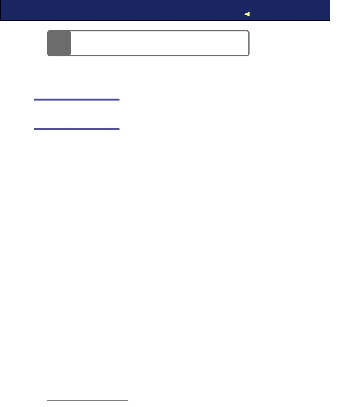
Download at Boykma.Com
BE THE WORST
34
4
Be the Worst
Legendary jazz guitarist Pat Metheny has a stock piece of advice for
young musicians, which is “Always be the worst guy in every band
you’re in.”2
Before starting my career in information
Be the worst guy in
technology, I was a professional jazz and
every band you’re in.
blues saxophonist. As a musician, I had the
good fortune of learning this lesson early
on and sticking to it. Being the worst guy in the band means always
playing with people who are better than you.
Now, why would you always choose to be the worst person in a band?
“Isn’t it unnverving?” you ask. Yes, it’s extremely unnerving at first.
As a young musician, I would find myself in situations where I was so
obviously the worst guy in the band that I was sure I would stick out
like a sore thumb. I’d show up to a gig and not even want to unpack
my saxophone for fear I’d be forcefully ejected from the bandstand. I’d
find myself standing next to people I looked up to, expected to perform
at their level—sometimes as the lead instrument!
Without fail (thankfully!), something magical would happen in these
situations: I would fit in. I wouldn’t stand out among the other musi-
cians as a star. On the other hand, I wouldn’t be obviously outclassed,
either. This would happen for two reasons. The first reason is that I
really wasn’t as bad as I thought. We’ll come back to this one later.
The more interesting reason that I would fit in with these superior
musicians—my heroes, in some cases—is that my playing would trans-
form itself to be more like theirs. I’d like to think I had some kind of
superhuman ability to morph into a genius simply by standing next to
one, but in retrospect I think it’s a lot less glamorous than that. It was
more like some kind of instinctual herd behavior, programmed into
me. It’s the same phenomenon that makes me adopt new vocabulary
or grammatical habits when I’m around people who speak differently
than me. When we returned from a year and a half of living in India,
my wife would sometimes listen to me speaking and burst into laugh-
ter, “Did you hear what you just said?” I was speaking Indian English.
2.
Download at Boykma.Com
BE THE WORST
35
Being the worst guy in the band brought out the same behavior in me
as a saxophonist. I would naturally just play like everyone else. What
makes this phenomenon really unglamorous is that when I played
in casinos and hole-in-the-wall bars with those not-so-good bands, I
played like those guys. Also, like an alcoholic who slurs his speech even
when he’s not drunk, I’d find the bad habits of the bar bands carrying
over to my non-bar-band nights.
So, I learned from this that people can significantly improve or regress
in skill, purely based on who they are performing with. And, pro-
longed experience with a group can have a lasting impact on one’s
ability to perform.
Later, as I moved into the computer indus-
The people around you
try, I found that this learned habit of seek-
ing out the best musicians came naturally affect your own
to me as a programmer. Perhaps uncon-
performance. Choose
sciously, I sought out the best IT people to
your crowd wisely.
work with. And, not surprisingly, the les-
son holds true. Being the worst guy (or gal, of course) on the team has
the same effect as being the worst guy in the band. You find that you’re
unexplainably smarter. You even speak and write more intelligently.
Your code and designs get more elegant, and you find that you’re able
to solve hard problems with increasingly creative solutions.
Let’s go back to the first reason that I was able to blend into those bands
better than I expected. I really wasn’t as bad as I thought. In music, it’s
pretty easy to measure whether other musicians think you’re good. If
you’re good, they invite you to play with them again. If you’re not,
they avoid you. It’s a much more reliable measurement than just ask-
ing them what they think, because good musicians don’t like playing
with bad ones. Much to my surprise, I found that in many of these
cases, I would get called by one or more of these superior musicians
for additional work or to even start bands with them.
Attempting to be the worst actually stops you from selling yourself
short. You might belong in the A band but always put yourself in the B
band, because you’re afraid. Acknowledging outright that you’re not
the best wipes away the fear of being discovered for the not-best per-
son you are. In reality, even when you try to be the worst, you won’t
actually be.
Download at Boykma.Com
BE THE WORST
36
Act on It!
1.
Find a “be the worst” situation for yourself. You may not have the
luxury of immediately switching teams or companies just because
you want to work with better people. Instead, find a volunteer
project on which you can work with other developers who will
make you better via osmosis. Check for developer group meetings
in your city, and attend those meetings. Developers are often look-
ing for spare-time projects on which to practice new techniques
and hone their skills.
If you don’t have an active developer community nearby, use the
Internet. Pick an open source project that you admire and whose
developers appear to be at that “next level” you’re looking to
reach. Go through the project’s to-do list or mailing list archives,
pick a feature or a major bug fix, and code away! Emulate the
style of the project’s surrounding code. Turn it into a game. Make
your design and code so indistinguishable from the rest of the
project that even the original developers eventually won’t remem-
ber who wrote it. Then, when you’re satisfied with your work, submit
it as a patch. If it’s good, it will be accepted into the project. Start
over, and do it again. If you’ve made decisions that the project’s
developers disagree with, either incorporate their feedback and
resubmit or take note of the changes they make. On your next
patch, try to get it in with less rework. Eventually, you’ll find yourself
to be a trusted member of the project team. You’ll be amazed at
what you can learn from a remote set of senior developers, even
if you never get a chance to hear their voices.
Download at Boykma.Com
INVEST IN YOUR INTELLIGENCE
37
5
Invest in Your Intelligence
When choosing what to focus on, it can be tempting to simply look at
the technologies that yield the most jobs and focus on those. Java is big.
.NET is big. Learning Java has a simple, transitive effect: if I know Java,
I can apply for, and possibly get, a job writing Java code.
Using this logic, it would be foolish to choose to invest in a niche tech-
nology, especially if you had no plans to try to exploit that niche.
TIOBE Software uses Internet search engines to indicate the relative
popularity of programming languages, based on people talking about
those languages on the Internet.3 According to TIOBE’s website, “The
ratings are based on the worldwide availability of skilled engineers,
courses, and third-party vendors.” It’s definitely not a scientifically
provable measure of popularity, but it’s a pretty good indicator.
At the time of writing, the most popular language is Java, followed by
C. C# is in a respectable sixth place but with a slight upward trajectory.
SAP’s ABAP is in seventeenth place and is moving slowly downward.
Ruby, which is my personal favorite programming language—the one
I do pretty much all of my serious work in and the one for which I co-
organize an international conference every year—is in eleventh place.
But at the time the first edition of this book was published, it wasn’t
even in the top twenty. It was below ABAP!
Was I crazy to use Ruby or just stupid? I must be one of the two, right?
In his essay “Great Hackers,”4 Paul Graham annoyed the industry with
the assertion that Java programmers aren’t as smart as Python pro-
grammers. He made a lot of stupid Java programmers mad (did I say
that?), causing a lot of them to write counterarguments on their web-
sites. The violent reaction indicates that he touched a nerve. I was in the
audience when his essay was first presented, in the form of a speech.
For me, it sparked a flashback.
I was on a recruiting trip in India weeding through hundreds of can-
didates for only tens of jobs, and the interview team was exhausting
itself and running out of time because of a poor interview-to-hire
3.
4.
Download at Boykma.Com
INVEST IN YOUR INTELLIGENCE
38
hit rate. Heads hurting and eyes red, we held a late-night meeting
to discuss a strategic change in the way we would go through the
candidates. We had to either optimize the process so we could inter-
view more people or somehow interview better people (or both). With
what little was left of my voice after twelve straight hours of trying
to drag answers out of dumbstruck programmers, I argued for adding
Smalltalk to the list of keywords our headhunters were using to search
their résumé database. “But, nobody knows Smalltalk in India,” cried
the human resources director. That was my point. Nobody knew it,
and programming in Smalltalk was a fundamentally different experi-
ence than programming in Java. The varying experience would give
candidates a different level of expectations, and the dynamic nature of
the Smalltalk environment would reshape the way a Java programmer
would approach a problem. My hope was that these factors would
encourage a level of technical maturity that I hadn’t been seeing from
the candidates I’d met so far.
The addition of Smalltalk to the requirements list yielded a candidate
pool that was tiny in contrast to our previous list. These people were
diamonds in the rough. They really understood object-oriented pro-
gramming. They were aware that Java isn’t the idealistic panacea it’s
sometimes made out to be. Many of them loved to program! Where have
you been for the past two weeks? we thought.
Unfortunately, our ability to attract these developers for the salaries
we were able to pay was limited. They were calling the shots, and
most of them chose to stay where they were or to keep looking for
a new job. Though we failed to recruit many of them, we learned a
valuable recruiting lesson: we were more likely to extend offers to can-
didates with diverse (and even unorthodox) experience than to those
whose experiences were homogenous. My explanation is that either
good people seek out diversity, because they love to learn new things,
or being forced into alien experiences and environments created more
mature, well-rounded software developers. I suspect it’s a little of both,
but regardless of why it works, we learned that it works. I still use this
technique when looking for developers.
So, other than trying to show up on my radar screen when I’m looking
to hire someone, why else would you want to invest in fringe technolo-
gies that you may rarely or never have an opportunity to actually get
paid to use?
Download at Boykma.Com
INVEST IN YOUR INTELLIGENCE
39
For me, as a hiring manager, the first reason is that it shows that
you’re interested. If I know you learned something for the sake of self-
development and (better) pure fun, I know you are excited and moti-
vated about your profession. It drives me crazy to ask people whether
they’ve seen or used certain not-quite-mainstream technologies only to
hear, “I haven’t been given the opportunity to work on that” in return.
Given the opportunity? Neither was I! I took the opportunity to learn.
More important than portraying the per-
I haven’t been given
ception of being suitably motivated and
engaged by your field is that exposure the opportunity...? Seize
to these fringe technologies and method-
the opportunity!
ologies actually makes you deeper, better,
smarter, and more creative.
If that’s not good enough reason, then you’re probably in the wrong
profession.
Download at Boykma.Com
INVEST IN YOUR INTELLIGENCE
40
Act on It!
1. Learn a new programming language. But, don’t go from Java to
C# or from C to C++. Learn a new language that makes you think
in a new way. If you’re a Java or C# programmer, try learning a
language like Smalltalk or Ruby that doesn’t employ strong, static
typing. Or, if you’ve been doing object-oriented programming for
a long time, try a functional language like Haskell or Scheme. You
don’t have to become an expert. Work through enough code
that you truly feel the difference in the new programming envi-
ronment. If it doesn’t feel strange enough, either you’ve picked
the wrong language or you’re applying your old way of thinking
to the new language. Go out of your way to learn the idioms of
the new language. Ask old-timers to review your code and make
suggestions that would make it more idiomatically correct.
Download at Boykma.Com
DON’T LISTEN TO YOUR PARENTS
41
6
Don’t Listen to Your Parents
In our culture, there’s something sacred about following the advice
of your parents. It’s seen as a child’s duty and ranks up there with
doing one’s religious duty as The Right Thing to do. Books, movies,
and television plots are hinged on the parents’ wisdom as a moral. But
for careers in our industry, this moral is wrong.
Your parents would rather you be OK than have a remarkable career
at the cost of great personal risk. More than any other third party you
might look to, your parents are going to give you fear-driven advice.
Fear-driven advice is geared toward not losing. Thinking about not los-
ing is not the way to win! Winners take risks. They think about where
they want to go—not where the rest of the pack is. Fear-driven career
planning is more likely to land you in a cubicle farm for the rest of your
life than on the path to greatness. Sure, it’s safe, but it’s no fun.
A generation ago, fun wasn’t a deciding factor when we talked about
career choices. Jobs aren’t supposed to be fun. They’re supposed to
bring home the bacon. Fun is what you do on your off days. Fun hap-
pens in the evenings and weekends. But if your job isn’t fun, as we’ve
come to realize, you don’t do a fantastic job at it. It’s not so much that
things are different now, but our cultural understanding of what it
means to work has shifted for the better. More of us understand that
passion leads to excellence. And without fun, there’s unlikely to be any
passion in a software job.
Another career decision-making factor that is likely not in line with
your parents’ view of the working world is that it’s OK (and often
preferable) to change jobs. A well-rounded software professional has
seen many angles of the industry: product development, IT support,
internal business systems development, and government work. The
more domains you’ve seen and the more technical architectures you’ve
slogged through, the more prepared you are to make the right deci-
sions on tougher projects. Staying in a single company, working your
way up the ranks, is a limiting environment in which to grow as a
developer. Gone are the days of the “lifer” who would join a big com-
pany and settle in for a full career. This sort of behavior used to be a
sign of dedication. Now it’s a liability. If you’ve worked in only one
place and seen one set of systems, many (smart) managers would see
Download at Boykma.Com
DON’T LISTEN TO YOUR PARENTS
42
that as a strike against you when making a hiring decision. I’d per-
sonally rather hire someone who has seen a variety of successes and
failures in different environments than someone who has known only
one way of doing things.
Several years ago, I realized that my own career had been informed too
much by the professional values of my parents and their generation. I
worked for one of the world’s largest and most stable corporations and
was upwardly mobile at a slow and steady pace. But I was stagnating.
I had reassured myself that I wasn’t pigeon-holing myself based on
the fact that the corporation was so large that I could do a number of
different jobs in a seemingly limitless list of locations. But I ultimately
stayed in the same place doing the same kind of work.
I remember talking to a friend about potentially moving out of this
company, and he said, “Is it your destiny to work at $big_company for
the rest of your life?” Hell no it wasn’t! So, I quickly found another job
and left.
This movement marked the clear beginning of a nonlinear jump in
my success in the software industry. I saw new domains, I worked on
harder problems, and I was rewarded more heavily than ever before. It
was scary at times, but when I decided to be less fear-driven and con-
servative in my career choice, the shape and tone of my career—my
life—changed for the better.
Take calculated risks with your career. Don’t let fear consume you. And
if you’re not having fun, you’re not going to be excellent.
Act on It!
1. What are your biggest career fears? Think about the last few
career choices you made. They don’t have to be big decisions
(after all, if you’re making fear-driven choices, your decisions likely
aren’t big anyway). They could be whether you took on special
assignments or whether you applied for a job change or promo-
tion. Make a list of these choices, and, for each one, force your-
self to make an honest assessment: how much was your decision
driven by fear? What would you have done if fear had not been
a factor? If the decision was indeed fear-driven, how can you
reverse it or find a similar opportunity in which to make the less
fear-driven choice?
Download at Boykma.Com
DON’T LISTEN TO YOUR PARENTS
43
How I Turned Down $300,000 from Microsoft to Go Full-
Time on GitHub
by Tom Preston-Werner
2008 is a leap year. That means that 366 days ago,
almost to the minute, I was sitting alone in a booth at
Zeke’s Sports Bar and Grill on Third Street in San Fran-
cisco. I wouldn’t normally hang out at a sports bar,
let alone a sports bar in SOMA, but back then Thurs-
day was “I Can Has Ruby” night. I guess back then “I
can has _” was also a reasonable moniker to attach
to pretty much anything. ICHR was a semiprivate meet-
ing of like-minded Ruby hackers that generally and will-
ingly devolved into late-night drinking sessions. Normally
these nights would fade away like my hangover the next
morning, but this night was different. This was the night
that GitHub was born.
I think I was sitting at the booth alone because I’d just
ordered a fresh Fat Tire and needed a short break from
the socializing that was happening over at the long
tables in the dimly lit back portion of the bar. On the
fifth or sixth sip, Chris Wanstrath walked in. I have trou-
ble remembering now if I’d even classify Chris and I
as “friends” at the time. We knew each other through
Ruby meet-ups and conferences but only casually. Like
a mutual “Hey, I think your code is awesome” kind of
thing. I’m not sure what made me do it, but I ges-
tured him over to the booth and said, “Dude, check this
out.” About a week earlier I’d started work on a project
called Grit that allowed me to access Git repositories
in an object-oriented manner via Ruby code. Chris was
one of only a handful of Rubyists at the time who was
starting to become serious about Git. He sat down, and
I started showing him what I had. It wasn’t much, but
it was enough to see that it had sparked something in
Chris. Sensing this, I launched into my half-baked idea
for some sort of website that acted as hub for coders to
share their Git repositories. I even had a name: GitHub.
I may be paraphrasing, but his response was along the
lines of a very emphatic “I’m in. Let’s do it!”
The next night—Friday, October 19, 2007, at 10:24 p.m.—
Chris made the first commit to the GitHub repository
and sealed in digital stone the beginning of our joint
venture.
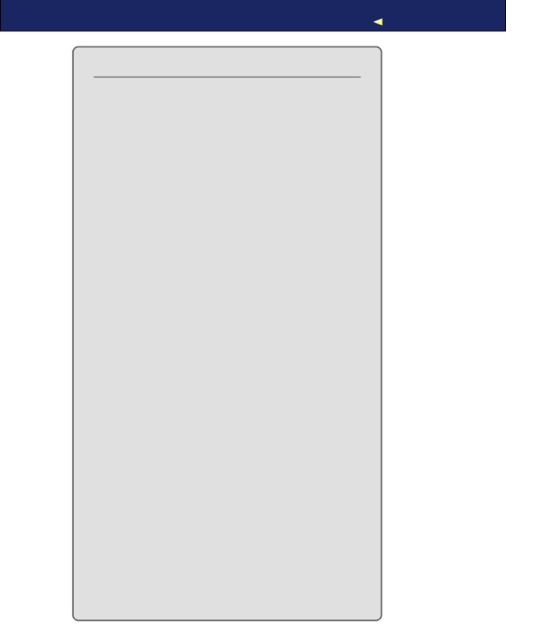
Download at Boykma.Com
DON’T LISTEN TO YOUR PARENTS
44
How I Turned Down $300,000 from Microsoft (continued)
There were, so far, no agreements of any kind regarding
how things would proceed. We were just two guys who
decided to hack together on something that sounded
cool.
Remember those amazing few minutes in Karate Kid
where Daniel is training to become a martial arts
expert? Remember the music? Well, you should proba-
bly go buy and listen to You’re the Best by Joe Esposito
in iTunes because I’m about to hit you with a montage.
For the next three months Chris and I spent ridiculous
hours planning and coding GitHub. I kept going with
Grit and designed the UI. Chris built out the Rails app.
We met in person every Saturday to make design deci-
sions and try to figure out what the hell our pricing
plan would look like. I remember one very rainy day we
talked for a good two hours about various pricing strate-
gies over some of the best Vietnamese egg rolls in the
city. All of this we did while holding other engagements.
I, for one, was employed full-time at Powerset as a tools
developer for the Ranking and Relevance team.
In mid-January, after three months of nights and week-
ends, we launched into private beta mode, sending
invites to our friends. In mid-February, P.J. Hyett joined
in and made us three-strong. We publicly launched the
site on April 10. TechCrunch was not invited. At this
point, it was still just three 20-somethings without a sin-
gle penny of outside investment.
I was still working full-time at Powerset on July 1, 2008,
when we learned that Powerset had just been acquired
by Microsoft for around $100 million. This was interesting
timing. With the acquisition, I was going to be faced
with a choice sooner than I had anticipated. I could
either sign on as a Microsoft employee or quit and go
GitHub full-time. At 29 years old, I was the oldest of the
three GitHubbers and had accumulated a proportion-
ally larger amount of debt and monthly expenditure.
I was used to my six-digit lifestyle. Further confounding
the issue was the imminent return of my wife, Theresa,
from her PhD fieldwork in Costa Rica. I would soon be
transitioning from make-believe bachelor back to mar-
ried man.
Download at Boykma.Com
DON’T LISTEN TO YOUR PARENTS
45
How I Turned Down $300,000 from Microsoft (continued)
To muddy the waters of decision even more, the
Microsoft employment offer was juicy. Salary plus
$300,000 over three years juicy. That’s enough money
to make anybody think twice about anything. So, I
was faced with this: a safe job with lots of guaranteed
money as a Microsoft man or a risky job with unknown
amounts of money as an entrepreneur. I knew things
with the other GitHub guys would become extremely
strained if I stayed on at Powerset much longer. Hav-
ing saved up some money and become freelancers
some time ago, they had both started dedicating full-
time effort to GitHub. It was “do or die” time. Either pick
GitHub and go for it or make the safe choice and quit
GitHub to make wheelbarrows full of cash at Microsoft.
If you want a recipe for restless sleep, I can give you one.
Add one part “What will my wife think?” with 3,000 parts
Benjamin Franklin, stir in a “beer any time you damn well
please,” and top it with a chance at financial indepen-
dence.
I’ve become pretty good at giving my employers the
bad news that I’m leaving the company to go do some-
thing cooler. I broke the news to my boss at Powerset on
the day the employment offer was due. I told him I was
quitting to go work full-time on GitHub. Like any great
boss, he was bummed but understanding. He didn’t try
to tempt me with a bigger bonus or anything. I think
deep down he knew I was going to leave. I may have
even received a larger incentive to stay than others, on
account of my being a flight risk. Those Microsoft man-
agers are crafty, I tell you. They have retention bonuses
down to a science—well, except when you throw an
entrepreneur, the singularity of the business world, into
the mix. Everything goes wacky when you have one of
those around.
In the end, just as Indiana Jones could never turn down
the opportunity to search for the Holy Grail, I could no
less turn down the chance to work for myself on some-
thing I truly love, no matter how safe the alternative
might be. When I’m old and dying, I plan to look back
on my life and say, “Wow, that was an adventure,” not
“Wow, I sure felt safe.”
Tom Preston-Werner is cofounder of GitHub.
Download at Boykma.Com
BE A GENERALIST
46
7
Be a Generalist
For at least a couple of decades, desperate managers and business
owners have been pretending that software development is a manu-
facturing process at heart. Requirements specifications are created, and
architects turn these specifications into a high-level technical vision.
Designers fill out the architecture with detailed design documentation,
which is handed to robot-like coders, who hold pulp-fiction novels in
one hand while sleepily typing in the design’s implementation with
the other. Finally, Inspector 12 receives the completed code, which
doesn’t receive her stamp of approval unless it meets the original
specifications.
It’s no surprise that managers want software development to be like
manufacturing. Managers understand how to make manufacturing
work. We have decades of experience in how to build physical objects
efficiently and accurately. So, applying what we’ve learned from man-
ufacturing, we should be able to optimize the software development
process into the well-tuned engine that our manufacturing plants have
become.
In the so-called software factory, the employees are specialists. They sit
at their place in the assembly line, fastening Java components together
or rounding the rough edges of a Visual Basic application on their soft-
ware lathes. Inspector 12 is a tester by trade. Software components
move down the line, and she tests and stamps them in the same way
each day. J2EE designers design J2EE applications. C++ coders code in
C++. The world is very clean and compartmentalized.
Unfortunately, the manufacturing analogy doesn’t work. Software is at
least as malleable as software requirements. Things change in business,
and businesspeople know that software is soft and can be changed to
meet those requirements. This means architecture, designs, code, and
tests must all be created and revised in a fashion more agile than the
leanest manufacturing processes can provide.
In this kind of rapidly changing environment, the flexible will excel.
When the pressure is on, a smart businessperson will turn to a soft-
ware professional who can solve the problem at hand. So, how do you
Download at Boykma.Com
BE A GENERALIST
47
become that person whose name comes up when they’re looking for a
superhero to save the day? The key is to be able to solve the problems
that may arise.
What are those problems? That’s right: you don’t know. Neither do I.
What I do know is that those problems are as diverse as deployment
issues, critical design flaws that need to be solved and quickly reim-
plemented, heterogeneous system integration, and ad hoc report gen-
eration. Faced with a problem set as diverse as this, poor Inspector 12
would be passed over pretty quickly.
The label “jack-of-all-trades but master of none” is normally meant to
be derogatory, implying that the labelee lacks the focus to really dive
into a subject and master it. But, when your online shopping applica-
tion is on the fritz and you’re losing orders by the hundreds as each
hour passes, it’s the jack-of-all-trades who not only knows how the
application’s code works but can also do low-level UNIX debugging
of your web server processes, analyze your RDBMS’s configuration for
potential performance bottlenecks, and check your network’s router
configuration for hard-to-find problems. And, more important, after
finding the problem, the jack-of-all-trades can quickly make architec-
ture and design decisions, implement code fixes, and deploy a new
fixed system to production. In this scenario, the manufacturing sce-
nario seems quaint at best and critically flawed at worst.
Another way in which the software factory breaks down is in that, in
contrast to an assembly line where the work keeps coming in a steady
flow, software projects are usually very cyclical. Not only is the actual
flow of projects cyclical, but the work inside a project is cyclical. A
coder sits on the bench while requirements are being specified, archi-
tected, and designed, or the coder multitasks across many projects. The
problem with multitasking coders is that, despite the software factory’s
intentions, when the rubber meets the road, the coders rely a great deal
on context and experience to get their jobs done. Requirements, archi-
tecture, and design documents can be a great head start, but ultimately
if the programmers don’t understand what the system is supposed to
do, they won’t be able to create a good implementation of the system.
Of course, I’m not just picking on coders here. The same is true at
nearly every spot on the software assembly line. Context matters, and
multitasking doesn’t quite work. As a result, we have an inefficient
Download at Boykma.Com
BE A GENERALIST
48
manufacturing system. There have been various attempts to solve this
problem of inefficiency without departing from the manufacturing-
inspired system, but we have not yet figured out how to optimize our
software factories to an acceptable level.
If you are just a coder or a tester or a designer or an architect, you’re
going to find yourself sitting idle or doing busywork during the ebbs
of your business’s project flow. If you are just a J2EE programmer or a
.NET programmer or a UNIX systems programmer, you’re not going
to have much to contribute when the focus of a project or a company
shifts, even temporarily, out of your focus area. It’s not about where
you sit on the perceived value chain of project work (where the archi-
tect holds the highest spot of royalty). It’s about how generally useful
you make yourself.
If your goal is to be the last person standing amid rounds of layoffs
and the shipment of jobs overseas, you better make yourself generally
useful. If you’re afraid that your once-crowded development office will
become home to an onshore skeleton crew, it would serve you well to
realize that when the team has only a few slots, a “just-a-tester” or
“just-a-coder” is not going to be in demand. Better, if you just want
to stand out and be remarkable, wrapping your head around The Big
Picture is where it’s at.
The way to become a generalist is to not
Generalists are
label yourself with a specific role or tech-
rare...and, therefore,
nology. We can become typecast in our
careers in many ways. To visualize what it
precious.
means to be a generalist, it can help to dis-
sect the IT career landscape into its various independent aspects. I can
think of five, but an infinite number exists (it’s all in how you person-
ally divide topics):
• Rung on the career ladder
• Platform/OS
• Code vs. data
• Systems vs. applications
• Business vs. IT
These are different dimensions on which you can approach the prob-
lem of becoming a generalist. This is just a way to think about the
Download at Boykma.Com
BE A GENERALIST
49
whole picture of your career, and you can probably come up with a
better list for yourself. For now, we’ll discuss these.
First, you can choose to either be a leader or manager type or be a
technical person. Or, you might pigeonhole yourself into architect as
opposed to being a programmer or tester. The ability to be flexible in
the roles you can and will fill is an attribute that many people don’t
understand the value of. For example, while a strong leader should
avoid pinch-hitting as often as possible, the new world of onshore
skeleton crews can benefit from a person who knows how to lead peo-
ple and projects but can also roll up their sleeves and fix some last-
minute critical bugs while the offshore team is sleeping. The same is
true of a software architect who could perhaps dramatically speed up
progress on a project if he or she would only write some code to get
things moving. When it comes to hierarchical boundary crossing, it’s
most often not reluctance that stops people from doing it. It’s ability.
Programmer geeks can’t lead, and leaders can’t hack. It’s rare to find
someone who’s even decent at both.
Another artificial
(and inexcusable) line
gets drawn around platforms or operating
Your skills should
systems. Being a UNIX Guy who refuses to transcend technology
do Windows is increasingly more impracti-
platforms.
cal. The same goes for .NET vs. J2EE or any
other such infrastructure platforms. Longevity is going to require that
you are platform neutral in the workplace. We all have our preferences,
but you’re going to have to leave your ideals at home. Master one, and
get good at the other. Your skills should transcend technology plat-
form. It’s just a tool. If we want a Windows person, we can hire them in
the Philippines. If we want someone who really understands Windows
and UNIX development and can help us integrate them together, we’re
probably going to be looking onshore. Don’t get passed up because of
what is essentially team spirit.
The dividing line between database administrator (a role that has solid-
ified out of nothingness over the past decade) and software developer
should also be fuzzy. Being a database administrator, or DBA, has in
many organizations come to mean that you know how to use some
GUI admin tool and you know how to set up a specific database prod-
uct. You don’t necessarily know much of anything about how to use the
database. On the flip side, software developers are growing increas-
Download at Boykma.Com
BE A GENERALIST
50
ingly lazy and ignorant about how to work with databases. Each side
feeds the other.
What first amazed me most when I entered the information technology
field was that many well-educated programmers (maybe most ) didn’t
know the first thing about how to set up the systems they used for
development and deployment. I worked with developers who couldn’t
even install an operating system on a PC if you asked them to, much
less set up an application server on which to deploy their applications.
It’s rare, and refreshing, to find a developer who truly understands the
platform on which he or she is working. Applications are better and
work gets done faster as a result.
Finally, as we discussed in Coding Don’t Cut It Anymore, on page 31,
the wall between The Business and IT should be torn down right now.
Start learning how your business operates.
Act on It!
1. On a piece of paper or a whiteboard, list the dimensions on which
you may or may not be generalizing your knowledge and abilities.
For each dimension, write your specialty. For example, if Platform
and Operating System is one of your dimensions, you might write
Windows/.NET next to it. Now, to the right of your specialty, write
one or more topics you should put into your “To Learn” list. Contin-
uing with the same example, you might write Linux and Java (or
even Ruby or Perl).
As soon as possible (some time this week at the latest!), find thirty
minutes of time to start addressing at least one of the “To Learn”
items on your list. Don’t just read about it. If possible, get some
hands-on experience. If it’s web technology, then download a
web server package and set it up yourself. If it’s a business topic,
find one of your customers at work and ask them to go out for
lunch for a chat.
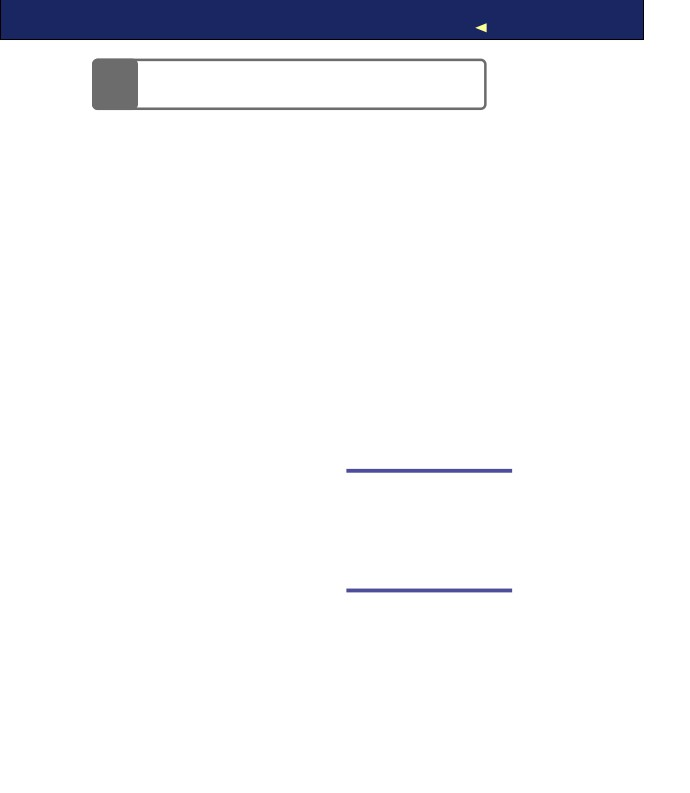
Download at Boykma.Com
BE A SPECIALIST
51
8
Be a Specialist
“How would you write a program, in pure Java, that would make the
Java Virtual Machine crash?” Dead silence. “Hello?”
“I’m sorry. I’m not getting you. Could you repeat the question, please?”
The voice sounded desperate. I knew from experience that repeating
the question wasn’t going to help. So, I repeated the question, slowly
and more loudly. “How would you write a program, in pure Java, that
would cause the Java Virtual Machine to crash?”
“Uh...I’m sorry. I’ve never done that before.”
“I’m sure you haven’t. How about this question: how would you write
a program that would NOT cause the JVM to crash?”
I was looking for really good Java programmers. To start the interview,
I asked this person (and all the others I had interviewed that week) to
rate himself on a scale of one to ten. He said nine. I’m expecting a star
here. If this guy rates himself so high, why can’t he think of a single
abusive programming trick that would cause a JVM to crash?
Lack of technical depth.
This was someone who claimed to spe-
Too many of us seem to
cialize in Java. If you met him at a party
and asked what he did for a living, he believe that specializing
would say, “I am a Java developer.” Yet,
in something simply
he couldn’t answer this simple question.
means not knowing
He couldn’t even come up with a wrong
about other things.
answer. Over two-and-a-half intense weeks
of interviewing on a cross-country recruit-
ing trip, this was the rule—not the exception. Thousands of Java spe-
cialists had applied for open positions, nearly none of whom could
explain how a Java class loader works or give a high-level overview
of how memory management is typically handled by a Java Virtual
Machine.
Granted, you don’t have to know these things to hack out basic code
under the supervision of others. But, these were supposed to be experts.
Download at Boykma.Com
BE A SPECIALIST
52
Too many of us seem to believe that specializing in something simply
means you don’t know about other things. I could, for example, call
my mother a Windows specialist, because she has never used Linux
or OS X. Or, I could say that my relatives out in the countryside in
Arkansas are country music specialists, because they’ve never heard
anything else.
Imagine you visit your family doctor, complaining about a strange
lump under the skin of your right arm. Your doctor refers you to a spe-
cialist to have a biopsy performed. What if that specialist was a person
whose only credentials as a specialist were that they didn’t attend any
classes in medical school or have any experience in residencies that
weren’t directly relevant to the act of performing the specific procedure
that they were going to perform on you today? I don’t mean that they
went deeper into the topics related to today’s procedure. What if they
had just skimmed the surface of these topics, but they didn’t know
anything else? “What if that machine over there starts beeping during
the operation?” you might ask. “Oh, that’s never happened before. It
won’t happen this time. I don’t know what that machine does, but it
never beeps.”
Thankfully, most software developers aren’t responsible for life-or-
death situations. If they mess up, it typically results in project overruns
or production bugs that simply cost their employers money, not lives.
Unfortunately, the software industry has churned out a whole lot of
these shallow specialists, who use the term specialist as an excuse for
knowing only one thing. In the medical industry, a specialist is some-
one with a deep understanding of some specific area of the field. Doc-
tors refer their patients to specialists, because in certain specific circum-
stances, the specialist can give them better care than a general practi-
tioner.
So, what should a specialist be in the software field? I can tell you
what I was searching for in every nook and cranny on that recruiting
trip. I was searching for people who deeply understood the Java pro-
gramming and deployment environment. I wanted folks who could
say “been there, done that” in 80 percent of the situations we might
encounter and whose depth of knowledge could make the remain-
ing 20 percent more livable. I wanted someone who, when dealing
with high-level abstractions, would understand the low-level details
Download at Boykma.Com
BE A SPECIALIST
53
of what went into the implementation of those abstractions. I wanted
someone who could solve any deployment issue we might encounter
or would at least know who to call for help if they couldn’t.
This is the kind of specialist who will survive in the changing com-
puter industry. If you’re a .NET specialist, it’s not just an excuse for
not knowing anything except .NET. It means that if it has to do with
.NET, you are the authority. IIS servers hanging and needing to be
rebooted? “No problem.” Source control integration with Visual Stu-
dio .NET? “I’ll show you how.” Customers threatening to pull the plug
because of obscure performance issues? “Give me thirty minutes.”
If this isn’t what specialist means to you, then I hope you don’t claim to
be one.
Act on It!
1.
Do you use a programming language that compiles and runs on a
virtual machine? If so, take some time to learn about the internals
of how your VM works. For Java, .NET, and Smalltalk, many books
and websites are devoted to the topic. It’s easier to learn about
than you think.
Whether your language relies on a VM or not, take some time
to study just what happens when you compile a source file. How
does the code you type go from being text that you can read to
instructions that a computer can execute? What would it mean
to write your own compiler?
When you import or use external libraries, where do they come
from? What does it actually mean to import an external library?
How does your compiler, operating system, or virtual machine link
multiple pieces of code together to form a coherent system?
Learning these facts will take you several steps closer to being an
expert specialist in your technology of choice.
2.
Find an opportunity—at work or outside—to teach a class on some
aspect of a technology that you would like to develop some
depth in. As you’ll see in Be a Mentor, teaching is one of the best
ways to learn.
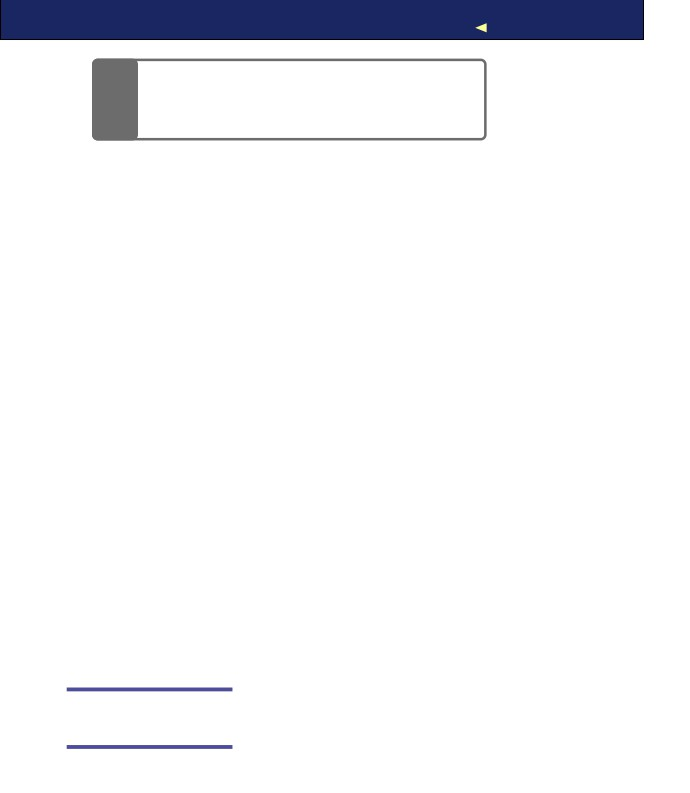
Download at Boykma.Com
DON’T PUT ALL YOUR EGGS IN SOMEONEELSE’SBASKET
54
9
Don’t Put All Your Eggs in
Someone Else’s Basket
While managing an application development group, I once asked one
of my employees, “What do you want to do with your career? What do
you want to be?” I was terribly disappointed by his answer: “I want to
be a J2EE architect.” I asked why not a “Microsoft Word designer” or a
“RealPlayer installer?”
This guy wanted to build his career around a specific technology cre-
ated by a specific company of which he was not an employee. What if the
company goes out of business? What if it let its now-sexy technology
become obsolete? Why would you want to trust a technology company
with your career?
Somehow, as an industry, we fool ourselves into thinking market leader
is the same thing as standard. So, to some people, it seems rational to
make another company’s product part of their identities. Even worse,
some base their careers around non-market-leading products—at least
until their careers fail so miserably that they have no choice but to
rethink this losing strategy.
Let’s take a moment again to remember that we should think of our
career as a business. Though it’s possible to build a business that
exists as a parasite of another (such as companies who build spyware
removal products to make up for inadequacies in Microsoft’s browser
security model), as an individual it’s an incredibly risky thing to do. A
company, such as the spyware example I just mentioned, can usually
react to changing forces in the market such as an unexpected improve-
ment in Microsoft’s browser security (or Microsoft deciding to enter
the spyware removal market), whereas an individual doesn’t have the
bandwidth or the surplus cash to suddenly change career direction or
focus.
The sad thing about a vendor-centric view
Vendor-centric views
of the world is that, usually, the details of
are typically myopic.
a vendor’s software implementation are a
secret. You can really learn only so much
about a piece of proprietary software until you reach the professional
Download at Boykma.Com
DON’T PUT ALL YOUR EGGS IN SOMEONEELSE’SBASKET
55
services barrier. The professional services barrier is the artificial barrier
that a company erects between you and the solution to a problem you
may have so that it can profit from selling you support services. Some-
times this barrier is intentionally erected, and sometimes it’s erected as
a side effect of the attempt the company makes to protect its intellectual
property (by not sharing its source code).
So, although a single-minded investment in one particular technology
is almost always a bad idea, if you must do so, consider focusing on
an open source option, as opposed to a commercial one. Even if you
can’t or don’t want to make the case for using the open source solution
in your workplace, use the open source option as the platform from
which you can take a deep dive into a technology. For example, you
may want to become an expert in how J2EE application servers work.
Instead of focusing your efforts on the details of how to configure and
deploy a commercial application server (after all, anybody can figure
out how to tweak settings in a config file, right?), download the open
source JBoss or Geronimo servers, and set aside time for yourself to not
only learn how to operate the servers but to study their internals.
Before long, you’ll realize you’re naturally changing your view. This
J2EE thing (or whatever you chose to get into) really isn’t all that spe-
cial. Now that you see the details of the implementation, you see that
there are high-level conceptual patterns at work. And, you start to real-
ize that, whether with Java or some other language or platform, dis-
tributed enterprise architecture is distributed enterprise architecture.
Your view changes from narrow to wide, and your mind starts to open.
You start to realize that these concepts and patterns that your brain is
sorting through and making sense of are much more scalable and uni-
versal than any specific vendor’s technology. “Let the vendors come
and go—I know how to design a system!”
Act on It!
1. Try a small project, twice. Try it once in your home base technol-
ogy and then once, as idiomatically as possible, in a competing
technology.
Download at Boykma.Com
LOVE IT OR LEAVE IT
56
10
Love It or Leave It
It may sound like some kind of rah-rah cheerleader crap, aimed at
whipping you into an idealistic frenzy, but it’s too important not to
mention. You have to be passionate about your work if you want to be
great at your work. If you don’t care, it will show.
When my wife and I moved to Bangalore, I was really excited. For the
first time in my career, I was looking forward to finding nearby like-
minded technologists with a passion for learning. I was expecting a
vibrant after-work life of user group meetings and deep, philosophical
discussions on software development methodologies and techniques.
I was expecting to find India’s Silicon Valley bursting at its seams with
an overflow of artisans, enthusiastic in the pursuit of the great craft of
software development.
What I found were a whole lot of people who were picking up a pay-
check and a few incredibly passionate craftspeople.
Just like back home.
Of course, I didn’t realize it was just like back home at the time. I had
a few data points from the United States, but I always assumed I was
just working in bad cities or bad company environments. I counted
situations like my first experiences with IT employment as outliers.
Most software developers must get it, I thought. I just haven’t found the
right environment yet.
I started work at my university’s IT department on a blind recommen-
dation from my friend Walter, who had seen me work with computers
enough to know I could probably make them do things better than
most of the people who needed help at the university. I didn’t believe
I could, having had no formal training. I was just a saxophone player
who liked to play video games. But, Walter actually filled out an appli-
cation for me and set up an interview. I was hired without so much as
a single technical question being asked, and I was to start immediately.
When I showed up on the job, I was paranoid I would be discovered
as the charlatan I really was. What is this saxophone player doing here with
us trained professionals? After all, I was working with people who had
advanced computer science degrees. And, here I was with only part of
a music degree trying to fit in as if I knew something.
Download at Boykma.Com
LOVE IT OR LEAVE IT
57
Within a few days of work, the truth started to sink in. These people don’t
know what the hell they’re doing! In fact, some people were watching me
work and taking notes! People with master’s degrees in computer science!
My first reaction was to assume I was surrounded by idiots. After all, I
didn’t have any formal training. I spent my nights playing in bar bands
and my days playing computer games. I had learned how to work
with computers only because I was interested in them. In fact, I really
learned how to write programs because I wanted to make my own
computer games. I would come home late after a deafening evening at
a bar and browse Gopher5 sites with tutorials on programming until
the sun came up. Then I’d sleep, wake up, and continue my learning
until I had to go out and perform again. I’d break up the study with
my beloved computer games, eat, and then go back to goofing around
with Gopher and whatever compilers I could get working.
Looking back on it, I was addicted, but in
a good way. My drive to create had been
Work because you
ignited in much the same way that it had
couldn’t not work.
when I started writing classical music or
playing improvisational jazz. I was obsessed with learning anything
and everything I could. I wasn’t in this for a new career. In fact, many of
my musician friends thought of it as an irresponsible distraction from
my actual career. I was in it because I couldn’t not be.
This was the difference between me and my overeducated, under-
performing colleagues at work. Passion.
These people had no idea why they were in the IT field. They had
stumbled into their careers, because they thought computer program-
ming might pay well, because their parents encouraged them, or
because they couldn’t think of a better major in college. Unfortunately,
their performance on the job reflected it.
If you think about the biographies you read or the documentaries you
watch about the greats in various fields, this same pattern of addic-
tive, passionate behavior surfaces. Jazz saxophone great John Coltrane
reportedly practiced so much that his lips would bleed.
5.
Gopher is a document-sharing system similar in intent to the World Wide Web. Its
popularity declined dramatically with the rise of the Web.
Download at Boykma.Com
LOVE IT OR LEAVE IT
58
Of course, natural talent plays a big role in ability. We can’t all be
Mozart or Coltrane. But, we can all take a big step away from medi-
ocrity by finding work we are passionate about.
It might be a technology or business domain that gets you excited. Or,
on the other hand, it might be a specific technology or business domain
that drags you down. Or a type of organization. Maybe you’re meant
for small teams or big teams. Or rigid processes. Or agile processes.
Whatever the mix, take some time to find yours.
You can fake it for a while, but a lack of passion will catch up with you
and your work.
Act on It!
1. Go find a job you’re actually passionate about.
2. Starting next Monday, keep two weeks of a simple log. Every work-
day when you wake up, rate your level of excitement on a scale
from 1 to 10—1 means you would rather come down with an
actual sickness than go to work, and 10 means you could hardly
stay in bed because you were consumed by the idea of getting
the next thing done.
After two weeks of keeping this log, review the results. Were there
spikes? Were there trends? Was it all low or all high? What would
your average grade be if this were a school test?
For the next two weeks, every morning plan how you’re going to
make tomorrow a 10. Plan what you’re going to do today to make
tomorrow one of those workdays you can’t wait to start. Each day,
log yesterday’s excitement level. If after two weeks things are look-
ing sad, it might be time to consider a major change.
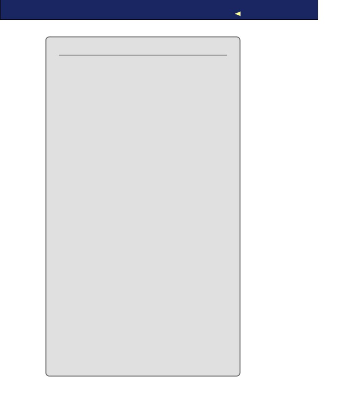
Download at Boykma.Com
LOVE IT OR LEAVE IT
59
Being a Serial Opportunist
by James Duncan Davidson
From the word go, I haven’t had what many would con-
sider to be a traditional career path. Instead, it’s been
very much a path of following opportunities as they
present themselves. The first of these opportunities pre-
sented itself while I was in school working on a degree
in architecture. I had decided at age 15 or 16 that I
wanted to be an architect, and I spent a lot of time
investing in that future. But the seeds of what would
actually be my career after school were sown in my
early fascination with online BBS systems. I was one of
those kids who loved the 300-baud modem in the fam-
ily PC. That led me eventually to the Internet, which lead
me to Gopher and then the World Wide Web.
The Web immediately hooked me. I built several per-
sonal websites in quick succession and took advantage
of every available technology at my disposal, teach-
ing it all to myself as needed. At the time, I thought of
this work as experiments in cyberarchitecture. It sounds
overly grandiose and even quite dorky now, but it was
the world in which those of us in the early days of the
Web were living. We were trying to imagine what the
future might bring.
Of course, the real job of building the future of the
Internet wasn’t happening in architecture labs. It was
happening in the world of business. Soon enough, and
based on what I had accomplished with my public
website, I was contacted by a startup that was build-
ing websites for the likes of Hilton and the Better Busi-
ness Bureau. They had seen the websites I had built,
and apparently I had just the skill set they needed. I was
offered a job with what seemed at the time a ludicrously
great salary. I took it, figuring that I could ride the wave
for a while, bank some money, and return to school in a
few years.
It was 1995. Little did I have any idea just how far things
would go and where a bit of willingness to dig into
something new would take me.
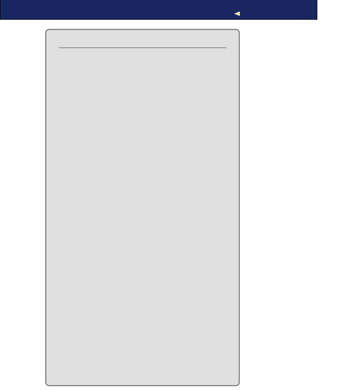
Download at Boykma.Com
LOVE IT OR LEAVE IT
60
Being a Serial Opportunist (continued)
While helping to build the first version of the Hilton web-
site that had real-time reservation placement, I learned
how to build websites using a variety of server-side tech-
nologies. In a few months, I went from apprentice to
creating my own server-side frameworks. Looking back,
it seems ridiculous, but at the time, it was what was nec-
essary. I saw an opening, took it, and parlayed it for all
it was worth, reinventing myself as necessary.
One thing led to another. In 1997, I went to JavaSoft to
work on server-side software, and after a few years, I
ended up in charge of the Servlet specification. Unfor-
tunately, it was an underfunded effort, and I didn’t have
a team to help me do everything that needed to be
done, including build a new reference implementation.
I didn’t let that stop me, however, and set off to build
a completely new ground-up implementation that was
eventually released as the JavaServer Web Develop-
ment Kit. Not many people remember that piece of
software. But most people who work with Java on the
server side knows about the next release of that code.
It’s called Tomcat. And it was released to the world via
the Apache Software Foundation with a sidekick called
Ant. The story behind that release would fill a book. Suf-
fice it say that it all happened through a perfect set of
opportunities that I was able parlay.
After working at Sun for four years and facing a “What
do I do next?” kind of question, I decided to go inde-
pendent. I wrote books for O’Reilly. I developed soft-
ware for the Mac. I developed quite a bit of my own
software that I didn’t end up releasing. And, I ended
up doing a bit of Ruby on Rails development. Being an
independent software developer was good to me, and
I’m pretty good at it. But along the way, a hobby I had
been pursuing started to grow into its own career.
In addition to being an architecture student turned
technologist, I’ve long been a photographer. My grand-
mother taught me the basics. My parents encouraged
me. As a result, for as long as I can remember, I’ve had
a camera around. It’s been a big part of my life. In fact,
the unreleased software I wrote for myself after leaving
Sun was for working with photographs.
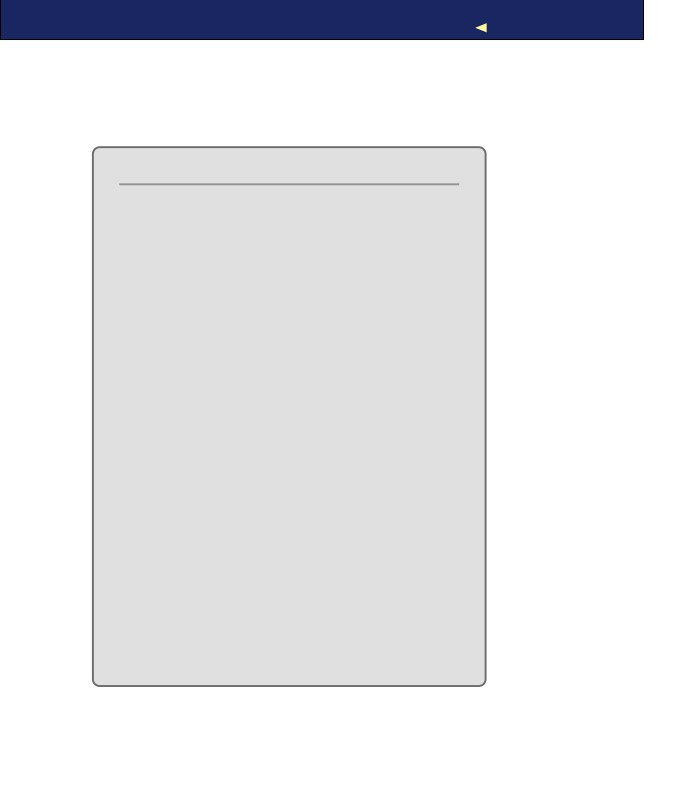
Download at Boykma.Com
LOVE IT OR LEAVE IT
61
Being a Serial Opportunist (continued)
In 2005, ten years after I got a break and switched
gears from architecture student to software developer,
I got a call from my friends over in the O’Reilly Confer-
ences group. They needed someone to document their
events and asked if I’d be interested in coming out and
taking a few snaps. I accepted, but instead of making
just a few photographs, I went a bit beyond my brief.
I went nuts and worked all the important sessions and
posted images to Flickr to provide an extremely quick
turnaround. I was invited back and, over the last four
years, have built up a business around it with a wide
range of clients.
As I write this, I still hack code from time to time, and
I even do a bit of software work for a few clients. But,
for the most part, I’m pretty much a full-time photog-
rapher these days. That might change, however. You
never know. It’s hard to say what the future will bring.
What I do know is that I’m a serial opportunist. When
I see something interesting and exciting to me, I jump
in and do whatever it takes to succeed. Usually this
means learning new skills and picking up new capabil-
ities. Some may find it a drag to build new skills up, but
for some reason I love learning how to do new things.
After all, new skills let you do new things. And I’ve never
defined myself by my skills. Instead, I’ve always defined
myself by what I have done and what I want to do next.
Skills are just a way to get there.
James Duncan Davidson is a programmer and photog-
rapher.
Download at Boykma.Com
Part II
Investing in Your Product
Download at Boykma.Com
INVESTINGIN YOUR PRODUCT
63
I’m not bragging when I say that, as a saxophonist, I am naturally gifted.
You’ll have to trust me for a minute while I explain how that’s a liability.
When I was playing saxophone full-time, I played a lot. I sometimes had
two or three gigs per day when times got really busy. I might find myself
playing jazz at a brunch, dance music at an evening wedding, and
rhythm and blues at a party or late-night bar all on the same day. And,
as a natural on the saxophone, I found myself improving and learning
on the job. I had an especially good tone and a natural ability to learn
songs by ear and improvise.
But I never really invested in myself as a saxophonist. Things came easily
enough to me that I guess I was satisfied. I was also typically a go-to guy
in the bands I played in, so I didn’t feel much pressure from my peers.
I didn’t realize it, but I was slowly stagnating. Whereas I made rapid
progress when I was younger, the more R&B gigs I played, the more I
sounded the same. My tone sounded the same night to night. My impro-
vised solos were rehashed regurgitations of the same thing I’d played
the night before—or earlier the same night. It wasn’t just me, now that
I think of it. It was the entire professional music scene around me. We
were not challenging ourselves, and the audience was definitely not
challenging us (ever heard an audience clap and cheer because a
saxophonist held a note for more than thirty seconds?).
For several years, until recently, I let myself get busy enough with work
that I didn’t prioritize music at all. This led to a long period of completely
neglecting my saxophones and guitars. I realized I missed the influence
of music in my life and recently picked both back up in earnest. This time,
I have no local musician friends. I have no time to play professionally, nor
do I have the dexterity to play well enough. So, I’m just playing for myself.
Maybe it’s because I’m older now. Or smarter, but I doubt that. But, this
time I’ve discovered that a little investment goes a long way. Instead of
just pulling out the instruments and heading for a gig, I’ve been (neces-
sarily) playing by myself. This has led me to a more focused approach
to the instruments. I’ve been listening to music and making lists of tech-
niques I want to learn. For example, I’ve always wanted to be able to
do a specific thing that Phil Woods always does in alto saxophone solos.
Or I’ve wanted to learn how Prince makes his guitar scream the way he
does at the end of “Let’s Go Crazy” from the Purple Rain album.
Download at Boykma.Com
INVESTINGIN YOUR PRODUCT
64
It turns out that, coupled with my natural talent, a few hours of invest-
ment have made these “always wanted to be able to do it” abilities
attainable. And as I’ve started to put in the investment, it builds on itself.
One technique leads to the next, and one barrier-breaking practice ses-
sion motivates the next.
After a few months of focused intention, I’m in many ways playing better
than I ever have, even when I was playing full-time. The structured me
who invests in his abilities (even as a hobby) completely wipes the floor
with the me who bets it all on natural talent and ability.
This is one piece of proof that if you want to have a great product to sell
on the job market—a product that stands out and that lets you really
compete—you’re going to have to invest in that product. In business,
ideas and even talent are a dime a dozen. It’s the blood, sweat, tears,
and money you pour into a product that make it really worth something.
In this part, we’ll look at investment strategies for your career. We will ex-
plore how to choose which skills and technologies to invest in as well as
look at different ways of investing in ourselves. This part is where the real
work starts.
Download at Boykma.Com
LEARNTO FISH
65
11
Learn to Fish
Lao Tzu said, “Give a man a fish; feed him for a day. Teach a man to
fish; feed him for a lifetime.” That’s all well and good. But Lao Tzu left
out the part where the man doesn’t want to learn how to fish and he
asks you for another fish tomorrow. Education requires both a teacher
and a student. Many of us are too often reluctant to be a student.
Just what is a fish in the software indus-
try? It’s the process of using a tool or some
Don’t wait to be told.
facet of a technology or a specific piece of
Ask!
information from a business domain you’re
working in. It’s how to check out a specific branch from your team’s
source control system, or it’s getting an application server up and run-
ning for development. Too many of us take these details for granted.
Someone else can take care of this for me, you may think. The build guy
knows about the source control system. You just ask him to set things
up for you when you need them. The infrastructure team knows how
the firewalls between you and your customers are set up, so if you have
an application need, you just send an e-mail and the team will take care
of it.
Who wants to be at the mercy of someone else? Or, worse: if you were
looking to hire someone to do a job for you, would you want that per-
son to be at the mercy of the experts? I wouldn’t. I’d want to hire some-
one who is self-sufficient.
The most obvious place to start is in learning the tools of your trade.
Source control, for example, is a powerful tool. An important part of
its job is focused on making developers more productive. It’s not just
the place where you put your code when you’re done with it, and you
shouldn’t treat it as such. It’s an integral part of your development pro-
cess. Don’t let such an important thing—the authoritative repository of
your work—be like voodoo to you. A self-sufficient developer can eas-
ily check differences between the version of a project that he or she has
checked out and the last known good one in the repository. Or perhaps
you need to pull out the last released code and make a bug fix. If your
code has a critical bug in the middle of the night, you don’t want to
have to call someone else to ask them to get you the right version so
Download at Boykma.Com
LEARNTO FISH
66
you can start troubleshooting. This goes for IDEs, operating systems,
and pretty much every piece of infrastructure your code or process
rides on top of.
Equally important is the technology platform you are employing. For
example, you may be developing applications using J2EE. You know
you have to create various classes, interfaces, and deployment descrip-
tors. Do you know why? Do you know how these things are used?
When you start up a J2EE container, what actually happens? You may
not be an application server developer, but knowing how this stuff
works enables you to develop solid code for a platform and to trou-
bleshoot when something goes wrong.
A particularly easy way to get lazy is to use a lot of wizards that gen-
erate code for you. This is particularly prevalent in the world of Win-
dows development where, to Microsoft’s credit, the development tools
make a lot of tasks really easy. The downside is that many Windows
developers have no idea how their code really works. The work of the
wizards remains a magical mystery. Don’t get me wrong—code gener-
ation used correctly can be a useful tool. For example, code generators
are what translate high-level C# code to byte codes that can run on the
.NET runtime. You obviously wouldn’t want to have to write all those
byte codes yourself. But, especially at the higher levels, letting the wiz-
ards have their way leaves your knowledge shallow and leaves you
limited to what the wizards can already do for you.
We may easily overlook the fish in our business domain. If you’re
working for a mortgage company, either you could ask an expert for
the calculation of an interest rate for each scenario that you need during
testing or you could learn how to calculate it yourself. Although inter-
actions with your customer are good and it’s good to clarify business
requirements with them (as opposed to half-understanding and filling
in the details yourself), imagine how much faster you could go if you
actually knew the ins and outs of the business domain you’re work-
ing in. You probably won’t know every single business rule—that’s
not your job. But, you can at least learn the basics. Many of the best
software people I’ve worked with over the years have become more
expert in their domains than even some of their business clients. This
results in better products. Someone who is domain-ignorant will let
silly mistakes slip through—mistakes that a basic knowledge of the
business domain would have avoided. Furthermore, they’ll go slower
Download at Boykma.Com
LEARNTO FISH
67
(and ultimately cost the company more) than the equivalent developer
who understands the business.
For us software developers, Lao Tzu’s intent might be equally well
served with “Ask for a fish; eat for a day. Ask someone to teach you
to fish; eat for a lifetime.” Better yet, don’t ask to be taught—go learn
for yourself.
Act on It!
1.
How and why?—Either as you sit here reading or the next time
you’re at work, think about the facets of your job that you may not
fully understand. You can ask yourself two extremely useful ques-
tions about any given area to drill down into the murky layers: How
does it work? and Why does this (have to) happen?
You may not even be able to answer the questions, but the very
act of asking them will put you into a new frame of mind and
will generate a higher level of awareness about your work envi-
ronment. How does the IIS server end up passing requests to my
ASP.NET pages? Why do I have to generate these interfaces and
deployment descriptors for my EJB applications? How does my
compiler deal with dynamic vs. static linking? Why do we calcu-
late tax differently if a shopper lives in Montana?
Of course, the answer to any of these questions will lead to
another potential opportunity to ask the question again. When
you can’t go any further down the how and why tree, you’ve
probably gone far enough.
2.
Tip time—Pick one of the most critical but neglected tools in your
toolbox to focus on. Perhaps it’s your version control system, per-
haps a library that you use extensively but you’ve looked into only
superficially, or maybe the editor you use when programming.
When you’ve picked the tool, allot yourself a small period of time
each day to learn one new thing about the tool that will make
you more productive or put you in better control over your devel-
opment environment. You may, for example, choose to master the
GNU Bourne Again Shell (bash). During one of those times when
your mind starts to wander from the task at hand, instead of load-
ing up Slashdot, you could search the Internet for bash tips. Within
a minute or two, you should find something useful that you didn’t
know about how to use the shell. Of course, now that you have
a new trick, you can dive into its guts with a series of Hows and
Why s.
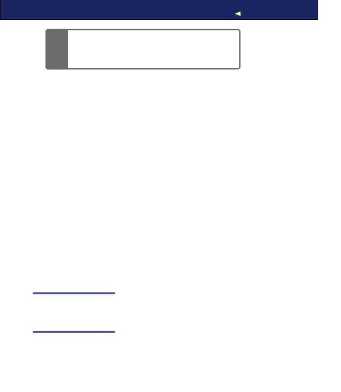
Download at Boykma.Com
LEARN HOW BUSINESSES REALLY WORK
68
12
Learn How Businesses Really
Work
In the previous chapter, we discussed the importance of making an
intentional choice about the business domain in which you work.
Domain knowledge, being at best an employment differentiator for
a job and at worst a showstopper, isn’t something you should take
lightly. Before making an investment in learning the ins and outs of
a business domain, you should make sure you’re investing in the right
one for you and for the state of the market.
But, one body of knowledge is neither technical nor domain-specific
and won’t be outdated at any time soon: the basics of business finance.
Regardless of your line of business, whether it be manufacturing,
health care, nonprofit, or an educational institution, it is still a business.
And, business is itself a domain of knowledge that one can—indeed,
must—learn.
I remember as a young programmer going to staff meetings, my eyes
glazing over as some big-shot leader with whom I would never directly
work showed chart after chart of numbers that I believed to be com-
pletely irrelevant to me. I just want to go back and finish the applica-
tion feature I’m working on, I would whine to myself. My teammates
sat together, looking like a row of squirming children on a long car
ride. None of us understood what was being presented, and none of
us cared. We blamed what we felt was a complete waste of time on the
incompetent managers who had called the meeting.
Looking back on it, I realize how foolish
You can’t creatively
we were. We worked for a business, and
help a business until you
our job was to contribute to either mak-
ing or saving money for that business. Yet
know how it works.
we didn’t understand the basics of how the
business came to profitability. Worse, we didn’t think it was our job to
know. We were programmers and system administrators. We thought
our jobs were strictly about those topics that we had devoted ourselves
to. However, how were we supposed to creatively help the business be
profitable if we didn’t even understand how the business worked?
Download at Boykma.Com
LEARN HOW BUSINESSES REALLY WORK
69
The use of the word creatively in the previous paragraph is the key.
It’s plausible to have the view that we are indeed IT specialists and
that is what we are paid to be. Given the right projects and leadership,
we should be putting effort into tasks that help the business. We don’t
need to fully understand how a business runs to provide value to it.
But, to creatively add value takes a more thorough understanding of the
business environment in which you work. In the business world, we
hear the phrase bottom line all the time. How many of us truly under-
stand what the bottom line is and what contributes to it? More impor-
tant, how many of us really understand how we contribute to the bot-
tom line? Is your organization a cost center or a profit center (do you
add to or take away from the bottom line)?
Understanding the financial drivers—and language—of your com-
pany will give you the ability to make meaningful changes, rather than
stabbing in the dark at things that seem intuitively right to you.
Act on It!
1. Go get a book on basic business, and work through it. A trick for
finding a good overview book is to look for books about getting a
master’s of business administration (MBA) degree. One such book
that I found particularly useful (and pleasantly short) is The Ten-Day
MBA [Sil99]. You can actually get through it in ten days. That’s not
a very big investment.
2. Ask someone to walk you through the financials of your company
or division and explain them to you (if this is information your com-
pany doesn’t mind sharing with its employees).
3. Explain them back.
4. Find out why the bottom line is called the bottom line.
Download at Boykma.Com
FIND A MENTOR
70
13
Find a Mentor
One thing the jazz music culture has really gotten right is the prac-
tice of mentorship. It’s common in the jazz world for young musicians
to find more experienced musicians who will take them under their
wings and pass down the lineage of the jazz tradition. It doesn’t stop
there, though. These older musicians often serve as career counselors,
life advisors, and sounding boards. In exchange, the younger musi-
cians are fiercely loyal, building up a support and rabid fan network
around their mentors.
Connections are made and players are hired every day via these rela-
tionships. The society of jazz culture has created a self-organizing cul-
ture and set of customs around the mentor/mentee relationship. It’s
a system that works so well that you would suspect it was guided by
some kind of organizing body.
In the traditional professional world (and
It’s OK to depend on
specifically the IT trade), we’re less likely
someone. Just make
to ask each other for help. Depending on
others is often seen as a sign of weakness.
sure it’s the right person.
We’re afraid to admit that we’re not perfect.
Everything is competition. Only the strong survive, and all that. Unfor-
tunately, this leads to an extremely underdeveloped system of mentor-
ing. If I were to ask a handful of jazz musicians, “Who is your men-
tor?” most of them would have an answer. Now ask the same question
of programmers. In the United States, they’d probably respond with
“What?”
It hasn’t always been like this here. The history of the West includes
a thriving system of professional mentoring, extending back into the
Middle Ages. The craftsmanship approach to professional training was
even stronger and more formalized than the system that has evolved
in the music scene. Young people would start their professional careers
as apprentices to respected master craftsmen. They would work in
exchange for a nominal salary and the privilege of learning from the
master. The master’s obligation was to train the apprentices to create
things in the tradition (and of the quality) of the master himself.
Download at Boykma.Com
FIND A MENTOR
71
The first and most important purpose that a mentor serves is that of
a role model. It’s hard to know what’s possible until you see someone
who can stretch the limits you’re familiar with. A role model sets the
standard for what “good” means. If you thought of yourself as a chess
player, for example, just being able to beat the people in your imme-
diate family might feel pretty good. But, if you played with a tourna-
ment player, you would find that chess is a much deeper game than
you ever knew. If you were to play with a grand master, you’d have
another such revelation. If you keep playing with, and beating, your
immediate family members, you might get the idea that you’re really
good at chess. Without a role model, there’s no incentive to get better.
A mentor can also give structure to your learning process. As you saw
in the previous chapter, you have an overwhelming number of choices
to make about which technologies and domains to invest in. Some-
times, too many choices can get you stuck. Within reason, it’s better to
be moving in one direction than to be sitting still. A mentor can help
take some of the choice out of what to focus your energies on.
When I started my career as a system support person, I latched onto
a saint named Ken who was one of our university’s network adminis-
trators. He came in to bail me out of a big problem with our campus
NetWare network that was crippling the students who were trying to
use our computer labs, and after that point, he was unable to shake
me (nor did he try). When I prodded him to give me direction on how
to become more knowledgeable and self-sufficient, he gave me a sim-
ple recipe: dive into directory services, get comfortable with a UNIX
variant, and master a scripting language.
He picked three skills for me to learn from the infinite number avail-
able. And, with the confidence that this person, who I considered to be
a master, had prescribed them, I set out to learn those three skills. My
career since has been built on the foundation of those pieces of knowl-
edge, all three of which are still completely relevant in everything I
do. It’s not that Ken’s direction was the absolute right answer—there
are no absolute right answers. The important thing is that he narrowed
down the long list of skills I could be learning into the short list of skills
I learned.
Download at Boykma.Com
FIND A MENTOR
72
A mentor also serves as a trusted party who can observe and judge
your decisions and your progress. If you’re a programmer, you can
show them your code and get pointers. If you’re planning to give a
presentation at the office or a local user group meeting, you can run it
by your mentor beforehand for feedback. A mentor is someone you can
trust enough to ask, “What should be different about me as a profes-
sional?” because you know that they’ll not only criticize you but they’ll
help you improve.
Finally, just as in jazz music, not only do you create a personal attach-
ment and responsibility to your mentor, but the reverse happens as
well. If my role in a relationship is to help someone, I become invested
in that person’s success. I’m nudging someone along their career on a
path that I believe is the right one. So, if that path leads to success, it’s
my success as well.
This creates incentive on the part of the mentor for his or her mentees
to succeed. Typically, being more experienced and already successful,
a person in such a role would have the respect of a significant network
of people. The mentor becomes a positively reinforced connection from
you to his or her network. The importance of this kind of connection
can’t be underestimated. After all, the phrase “It’s not what you know.
It’s who you know” isn’t a cliche for nothing.
The degree of formality in a mentor relationship is not important.
Nobody has to explicitly ask someone to be their mentor (though it’s
definitely not a bad thing if you do). In fact, your mentor may not even
know they are serving that role for you. What’s important is that you
have someone you trust and admire that can help give you career guid-
ance and help you hone your craft.
Act on It!
1. Mentoring yourself —We’d all ideally have someone to actively
mentor us, but the reality is that we won’t always be able to find
someone in the same location that we can place in this role.
Here’s a way to proxy-mentor yourself.
Think of the person in your field whom you admire most. Most
of us have a short list already formulated from some stage in
our careers. It may be someone we’ve worked with, or it may
Download at Boykma.Com
FIND A MENTOR
73
be someone whose work we admire. List the ten most important
attributes of this role model. Choose the attributes that are the
reason why you have chosen this person to be your role model.
These attributes might be specific areas of skill, such as technol-
ogy breadth, or the depth of their knowledge in some particular
domain. Or, they might be more personal traits like the ability to
make team members comfortable or that they are an engaging
speaker.
Now, rank those qualities in order of importance, with 1 being the
least important and 10 being the most important. You have now
created and distilled a list of attributes that you find admirable
and important. These are the ways in which you should strive to
emulate your chosen role model. But, how do you choose which
to focus on first?
Add a column to the list, and for each item on the list, imagine how
your role model would rate you on a scale of 1 to 10 (10 being the
best). Try to really put yourself into the mind of your role model and
to observe yourself as if a third person.
When you have the attributes, ranking, and your own ratings, in a
final column subtract your rating in each row from the importance
level you gave it in the preceding column. If you ranked something
as 10, the most important attribute of your role model, and your
rating was 3, that gives you a final priority score of 7. Having filled
this column in completely, sorting in descending order will you give
a p rioritized top ten list of areas in which you need to improve.
Start with the top two or three items, and put together a concrete
list of tasks you can start doing now to improve yourself.
Download at Boykma.Com
BE A MENTOR
74
14
Be a Mentor
If you want to really learn something, try teaching it to someone else.
There’s no better way to crystallize your understanding of something
than to force yourself to express it to someone else so that they can
understand it. The simple act of speaking is a known elixir for treating
an unclear mind. Speaking to puppets and other inanimate objects as a
method of problem solving is a fairly well-known element of software
development folklore.
I saw Martin Fowler6 give a talk to a room
To find out whether you
of developers in Bangalore, in which he
really know something,
said that whenever he wants to really learn
about something, he writes about it. Martin
try teaching it to
Fowler is a well-known software developer
someone else.
and author. It could be said that he is one of
the best-known and influential teachers this industry has to offer if we
consider his role as author to be that of a remote teacher and mentor.
We learn by teaching. It’s ironic, because we expect a teacher to already
know things. Of course, I don’t mean we can learn new facts alto-
gether by teaching them to someone—where would they come from?
But, knowing facts is not the same as understanding their causes and
ramifications. It’s this kind of deeper understanding that we develop
by teaching others. We look for analogies to express complex concepts,
and we internally work through the reasons why one analogy seems
to work but doesn’t and another analogy would seem not to work but
does. When you teach, you have to answer questions that may have
never occurred to you. Through teaching, we clean the dusty corners
of our knowledge as they are exposed to us.
So, just as you can benefit from finding a mentor, you can benefit from
being a mentor to someone else.
Mentoring has positive social effects as well. An overlapping group of
mentors and their mentees creates a tight and powerful social network.
The mentor-to-mentee bond is a strong one, so the links in this kind of
6.
No, we’re not related.
Download at Boykma.Com
BE A MENTOR
75
professional network are stronger than those of more passive acquain-
tances. When you are in a mentoring relationship with someone, you
form an allegiance with each other. A network of this kind is a great
place to circulate difficult problems or look for work.
You also shouldn’t underestimate that it
just feels good to help people. If you can
Mentors tend not to get
hold the interests of others in mind, you
laid off.
will have actually done something altruis-
tic with your skills. In the uncertainty of today’s economic environ-
ment, actually helping someone is a job you can’t be laid off from. And,
it pays in a currency that doesn’t depreciate with inflation.
You find a mentee not by going out and declaring yourself a guru but
by being knowledgeable and willing to patiently share that knowledge.
Don’t be alarmed if you’re not an absolute expert on a topic. Chances
are that there is something that you have experience with that would
qualify you to help someone less experienced. Find that thing, and start
being helpful.
You might, for example, have done a sizable amount of PHP work. You
could go to your local PHP user group meeting and offer to help less
experienced users with their specific problems. Or, if you don’t have an
immediately available forum for providing face-to-face mentoring, you
could simply start answering questions in an online message board or
IRC channel or help people debug application problems. Keep in mind,
though, that mentoring is about people. An online mentoring relation-
ship can never compare to one that happens between two humans in
the same place.
You don’t have to set up a formal mentoring relationship to get these
benefits. Just start helping people, and the rest will come naturally.
Act on It!
1. Look for someone to take under your wing. You might find some-
one younger and less experienced at your company, perhaps an
intern. Or, you could talk to the computer science or information
systems department at your local university and volunteer to men-
tor a college student.
2. Find an online forum, and pick a topic. Start helping. Become
known for your desire and ability to patiently help people learn.
Download at Boykma.Com
PRACTICE, PRACTICE, PRACTICE
76
15
Practice, Practice, Practice
When I was a music student, I spent long nights in my university’s
music building. Through the thin walls of the university’s practice
rooms, I was constantly immersed in some of the ugliest musical
sounds imaginable. It’s not that the musicians at my school weren’t
any good. Quite the contrary. But they were practicing.
When you practice music, it shouldn’t sound good. If you always sound
good during practice sessions, it means you’re not stretching your lim-
its. That’s what practice is for. The same is true in sports. Athletes push
themselves to the limit during workouts so they can expand those limits
for the real performances. They let the ugliness happen behind closed
doors—not when they’re actually working.
In the computer industry, it’s common to find developers stretched to
their limits. Unfortunately, this is usually a case of a developer being
underqualified for the tasks that he or she has undertaken. Our indus-
try tends to practice on the job. Can you imagine a professional musi-
cian getting onstage and replicating the gibberish from my university’s
practice rooms? It wouldn’t be tolerated. Musicians are paid to perform
in public—not to practice. Similarly, a martial artist or boxer stressing
himself or herself to fatigue during matches wouldn’t go very far in
the sport.
As an industry, we need to make time for practice. We in the West often
make the case for domestic programmers based on the relatively high
quality of the code they produce vs. that of offshore teams. If we’re
going to try to compete based on quality, we have to stop treating our
jobs as a practice session. We have to invest the time in our craft.
Several years back, I started experimenting with programming exer-
cises modeled after my musical practice sessions. Rule number one was
that the software I was developing couldn’t be something I wanted to
use. I didn’t want to cut corners, rushing to an end goal. So, I wrote
software that wasn’t useful.
I cut no corners but was frustrated to find that a lot of the ideas I had
while practicing weren’t working. Though I was trying to do as good a
Download at Boykma.Com
PRACTICE, PRACTICE, PRACTICE
77
job as possible, the designs and code I was creating weren’t as elegant
as I had hoped they’d be.
Looking back on it now, I see that the awkward feeling I got from these
experiences was a good sign. My code wasn’t completely devoid of bril-
liant moments. But I was stretching my mental muscles and building
my coding chops. Just like playing the saxophone, if I sat down to prac-
tice and nothing but pretty sounds came out, I’d know I wasn’t practic-
ing. Likewise, if I sit down to practice coding and nothing but elegant
code comes out, I’m probably sitting somewhere near the center of my
current capabilities instead of the edges, where a good practice session
should place me.
So, how do you know what to practice?
What stretches your limits? The subject of
Practice at your limits.
how to practice as a software developer
could easily fill a book of its own. As a start, I’ll borrow again from
my experience as a jazz musician. I’d break jazz practice down into the
following categories (simplified for the nonmusicians among us):
• Physical/coordination
• Sight reading
• Improvisation
These might serve as a framework for one way to think about practice
as a software developer.
Physical/coordination: Musicians have to practice the technical aspects
of their instruments: sound production, physical coordination (making
your fingers move nimbly, for example), speed, and accuracy are all
important to practice.
What equivalent do we software developers have of these musical fun-
damentals? What about the dusty corners of your primary program-
ming language that you rarely visit? For example, does your program-
ming language of choice support regular expressions? Regular expres-
sions are an extremely powerful and tragically underutilized feature
of many programming environments. Most developers don’t use them
when they could, because they don’t have the level of skill that it would
take to be productive with them. As a result, a lot of needless string-
parsing code gets created and then has to be maintained.
Download at Boykma.Com
PRACTICE, PRACTICE, PRACTICE
78
The same rules apply to your language’s APIs or function libraries.
If you don’t get the environment’s many tools under your fingers (as
musicians say), it’s less likely you’ll pull them out when they could
really help you. Try truly digging into, for example, the way multi-
threaded programming works in your chosen programming environ-
ment. Or, how about stream libraries, network programming APIs,
or even the set of utilities available for dealing with collections or
lists? Most modern programming languages offer rich and powerful
libraries in all of these areas, but software developers tend to learn a
small subset, with which they can less efficiently write the same code
they could have written if they had mastered the full set of tools avail-
able to them.
Sight reading: Especially as a studio musician, the ability to read and
play music near perfectly the first time is paramount for a professional.
I once played saxophone on a jingle for Blockbuster (the video rental
company). I played both the lead and second alto parts on an up-tempo
big-band song. I saw the music for the first time literally as the tape
started rolling. We played through once on the lead part and once on
the second part. Any mistakes, and the whole band had to do it again—
and the cost of the studio time had to be accounted for.
As software developers, what would it mean to be able to sight read
code? Or requirements specifications or designs? An excellent place to
find new code with which to practice is the open source community.
Do you have any favorite pieces of open source software? How about
trying to add a feature? Go look at the to-do list for a piece of software
you’d like to practice with, and give yourself a constrained amount of
time to implement the new feature (or at least to determine what it
would take to implement it).
After choosing a feature, download the source code for the software,
and start exploring. How do you know where to look? What tricks do
you use to find your way around a significant body of code? What’s
your starting place?
This is an exercise you can practice often and in short periods of time.
You don’t actually have to implement the feature. Just use it as a starting
point. The real goal is to understand what you’re looking at as quickly
as possible. Be sure to vary the software you work with. Try different
types of software in different styles and languages. Take note of issues
Download at Boykma.Com
PRACTICE, PRACTICE, PRACTICE
79
that make it easier or harder for you to find your way around. What
patterns are you developing that help you work through the code?
What virtual bread crumbs do you leave for yourself to help you nav-
igate as you move up and down the call stack of a complex piece of
functionality?
Improvisation: Improvisation is taking some structure or constraint and
creating something new, on the fly, on top of that structure. As a pro-
grammer, I’ve found myself doing the most improvisation in times of
stress. Oh no! The wireless network app server is down, and we’re losing
orders! That’s when some of the most creative, impromptu program-
ming happens. That’s when you do crazy stuff like recovering lost data
by manually replaying packets over a wireless network from a binary
log file. Nobody meant for you to do these things, especially not in the
heat of the moment. That kind of sharp and quick programming ability
can be like a magical power when wielded at the right time.
A great way to sharpen the mind and improve your improvisational
coding skills is to practice with self-imposed constraints. Pick a simple
program, and try to write it with these constraints. My favorite exercise
is to write a program that prints the lyrics to the tired old song “99
Bottles of Beer on the Wall.“ How could you write such a program
without doing any variable assignments? Or, how small of a program
can you write that will still print the lyrics correctly? For an additional
constraint, how fast can you code this program? How about practicing
small, difficult problems with a timer?
This is just one limited perspective on how to practice. You can mine
examples from any discipline, from visual arts to monastic religious
practice. The important thing is to find your practice needs and to make
sure you’re not practicing during your performances (on the job). You
have to make time for practice. It’s your responsibility.
Act on It!
1. TopCoder—TopCoder.com is a long-standing programming com-
petition site. You can register for an account and compete online
for prizes. Even if you’re not interested in competing with others,
TopCoder offers a practice room with a large collection of prac-
tice problems that you can use as excellent fodder for your prac-
tice sessions. Go sign up, and give it a try.
Download at Boykma.Com
PRACTICE, PRACTICE, PRACTICE
80
2. Code Kata—Dave Thomas, one of the Pragmatic Programmers
(our beloved publisher), took the idea of coding practice and
made something...well, pragmatic out of it. He created a series of
what he calls Code Kata, which are small, thought-provoking exer-
cises that programmers can do in the language of their choice.
Each kata emphasizes a specific technique or thought process,
providing a concrete flexing of one’s mental muscles.
At the time of this printing, Dave has created twenty-one such
kata and has made them available for free on his weblog (http://
mailing list and to others’ solutions to the exercises along with dis-
cussion about how the problems were solved.
Your challenge: work through all twenty-one kata. Keep a diary
(perhaps a weblog?) of your experiences with the kata. When
you’ve finished working through all twenty-one exercises, write
your own kata, and share it with others.
Download at Boykma.Com
THE WAY THAT YOU DO IT
81
16
The Way That You Do It
“Developing software” is not a thing, a noun. Instead, “developing
software” is a verb phrase; it’s the process of creating a thing. When we’re
coding away, it’s as important to focus on the process we’re using as
it is to focus on the product being developed. Take your eye off the
process, and you risk delivering late, delivering the wrong product, or
not delivering at all. These outcomes tend to be frowned on by our
customers.
Fortunately, a lot of thought has been put into the process of making
good software (and products in general). Much of this prior art has
been codified into a group of methodologies. These methodologies are
the subject of numerous books that can be found online or in your local
bookstore.
Unfortunately, most developers don’t get to benefit from all this good
information. For the majority of teams, the process is an afterthought
or something imposed from above. The word methodology has, in their
minds, become synonymous with paperwork and long, meaningless
meetings. All too often, a methodology is something that their man-
agers impose.
Managers intuitively know that they need to follow some kind of pro-
cess, but they often don’t know about the options that are now avail-
able. As a result, they dust off the same processes that were imposed
on them in the 1980s, wrap them up in buzzword-compliant ribbons
(the pastel-colored Agile ribbon is a good choice at the moment), and
pass the practices on to their teams. And unless someone breaks the
cycle by actually doing research on what works and what doesn’t, the
same process will happen again as the developers on the team become
managers themselves.
You’d think that there must be a better way to develop software. And
for most teams there is.
If you’re a programmer, tester, or software designer, you may not think
the development process is your responsibility. As far as your company
is concerned, you’re probably right. Unfortunately, it’s usually nobody’s
responsibility. If it does get assigned to someone, it might fall into the
Download at Boykma.Com
THE WAY THAT YOU DO IT
82
hole of a “process group” or some other similarly disconnected orga-
nization. The truth is that for a software process to have any chance of
being implemented successfully, it has to be embraced by the people
who are using the process—people like you.
The best way to feel ownership of these processes is to help implement
them. If your organization has no process, research methodologies that
might work for you. Have brown-bag lunches with your team to dis-
cuss current development problems and ways that adopting a standard
process might mitigate them. Put together a plan for rolling the chosen
process into your organization, and get everyone’s buy-in. Then start
to implement your plan.
Alternatively, you might work in an envi-
If you want to feel you
ronment where a process is passed down
own a process, help
from on high. By the time the tablets arrive
at the development team, the practices
implement it.
have often been watered down and reinter-
preted to the point where they’re unrecognizable from the originals.
The process has suffered the same fate as the secret phrase in a game of
Chinese Whispers.7 Again, this is an opportunity to take the initiative.
Research the methodology you’ve been given, and help interpret what
it really means, both to your team and to your management. You’re not
going to be able to fight that a process has been imposed, so you may
as well make it work by doing it right.
The methodology world can quickly begin to sound like a hollow shell
of buzzwords. But, as buzzword compliant as some may be, you can
always learn something from the study of a software process—even if
that something is what not to do. If you’re well versed in the software
process landscape, you can make a more credible argument for how
your team should be working.
Even with the abundance of prescriptive methodologies to choose
from, it’s not likely you will ever work for a company that fully imple-
ments any of them. That’s OK. The best process to follow is the one that
makes your team most productive and results in the best products.
7.
Download at Boykma.Com
THE WAY THAT YOU DO IT
83
Methodologies: Not Just for Geeks
Though project management is not necessarily bound
to software development methodology, you may find
yourself running face first into your company’s project
management techniques. Numerous project manage-
ment methodologies are in use throughout the industry.
Probably most notable is the Project Management Insti-
tute’s Project Management Book of Knowledge,∗ (with
its widely recognized certification program).
Six Sigma† is another non-software-specific quality
methodology. Driven by companies such as General
Electric and Motorola, the Six Sigma approach empha-
sizes the measurement and analysis of processes and
products to drive customer satisfaction and efficiency.
Although not specific to software development, Six
Sigma’s rigorous and methodical approach offers many
lessons that are directly applicable to your job as a pro-
grammer.
The only way to find that hybrid (short of revelationary epiphany) is to
study the available options, pick out the pieces that make sense to you
and your team, and continuously refine them based on real experience.
Ultimately, if you can’t do the process, you can’t do the product. It’s
much easier to find someone who can make software work than it is to
find someone who can make the making of software work. So, adding
knowledge of the software development process to your arsenal can
only help you.
Act on It!
1. Pick a software development methodology, and pick up a book,
start reading websites, and join a mailing list. Look at the method-
ology with a critical eye. What do you think would be its strong and
weak points? What would be the barriers to implementing it where
you work? Next, do the same with another. Contrast their strengths
and weaknesses. How could you combine their approaches?
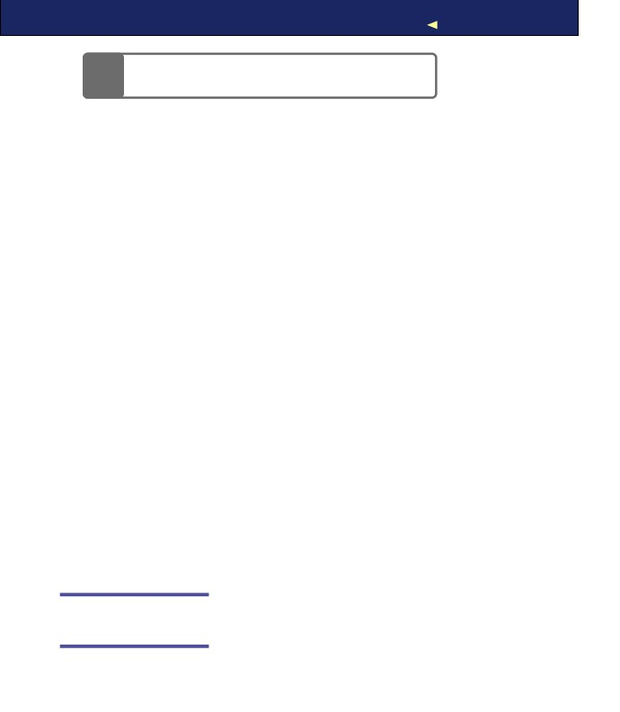
Download at Boykma.Com
ON THE SHOULDERSOF GIANTS
84
17
On the Shoulders of Giants
As a jazz musician, I spent a lot of time listening to music. I didn’t just
play music in the background while I was reading or driving. I would
really listen to the music. If jazz improvisation is all about playing what
you hear over the chords of a song, then actually listening to music is
a critical source of inspiration and knowledge of what works and what
doesn’t. What sounds great and what just sits there.
The vast history of jazz recordings serves as an incredible body of
knowledge, there for the taking by anyone with the skill to hear it. Lis-
tening to music, therefore, is not a passive activity for a jazz musician.
It is study. Furthermore, the ability to understand what you’re hear-
ing is a skill that you develop over time. My circle of musician friends
actually did this kind of listening explicitly. We would have listening
parties, where a bunch of jazz musician geeks would sit around listen-
ing to music and then discussing it. Sometimes we would play name
that improviser where one of us would play a recording of an impro-
vised solo and the rest of us would have to figure out, based on style,
who the recorded improviser was.
We in the jazz world weren’t special, of course. Classical composers do
the same thing. So do novelists and poets. So do sculptors and painters.
Studying the work of masters is an essential part of becoming a master.
When listening to jazz recordings, we would discuss the musical
devices that improvisers would use to communicate their musical
points. “Wow! Did you hear the way he started sidestepping at the
end of the form?” or “That was really strange the way he was play-
ing behind the beat on the bridge.” These discussions would help us
all distill and discover tricks that we could take with us to our next
improvisation session to try.
Software design and programming have a
Mine existing code for
lot in common with the arts in this way.
insights.
We can mine a huge body of existing code
for patterns and tricks. The design patterns
movement (see Design Patterns [GHJV95]) is focused on the discovery
Download at Boykma.Com
ON THE SHOULDERSOF GIANTS
85
and documentation of reusable solutions to common software devel-
opment problems. Design patterns have formalized the study of exist-
ing code, making the practice accessible to a great number of software
professionals. Still, design patterns address only a small subset of the
kinds of learning we can enjoy through code reading.
How do other programmers solve particular problems algorithmi-
cally? How do others strategically use variable, function, and structure
naming? If I wanted to implement the Jabber instant messaging pro-
tocol in a new language, how might I do it? What creative ways can
I find to handle interprocess communication between UNIX and Win-
dows systems? These are the type of questions you can answer through
the study of existing code.
Even more important than finding solu-
Use existing code to
tions to specific problems is the use of exist-
ing code as a magnifying mirror to inspect reflect on your own
our own style and capabilities. Just as lis-
capabilities.
tening to a John Coltrane recording always
reminded me of where I stood on the skill ladder as a saxophonist,
reading the work of a great software developer has a similarly hum-
bling effect. Nevertheless, it’s not just about being humbled. As you’re
reading through code, you will find things that you would have never
done. You will find things you might have never even thought of.
Why? What was the developer thinking? What were his or her moti-
vations? You can even learn from bad code with this kind of critical,
self-aware exploration of an existing work.
The act of learning from the work that came before you works well in
the arts world, because there is no hidden source code for a painting or
a piece of music. If you can hear the music or see the piece of art, you
can learn from it. Thankfully, as software developers we have access
to a practically infinite array of existing software in the form of open
source software.
Enough open source software is available that it would be impossible
to ever actually read all of it. There are definitely some bad open source
projects, but there are also quite a few great ones. There is open source
code available implementing almost any task that can be done with
software in almost every available programming language.
Download at Boykma.Com
ON THE SHOULDERSOF GIANTS
86
As you look at this code with a critical eye, you will start to develop
your own tastes, just as you would for music, art, or literature. Various
styles and devices will amuse you, amaze you, anger you, and (I hope)
challenge you. If you’re really looking for them, you’ll find everything
from tricks that make you more productive to design paradigms that
completely change the way you approach a class of problems. Just as
in the arts, by studying and learning from the habits of others you will
develop your own distinctive style of software development.
A positive side effect of reading code is that you will learn more about
what already exists. When you have a new problem that needs solving,
you might remember that “Oh, I saw a library that implements MIME
type handling in such and such project.” If the licensing terms are right,
you may save yourself a lot of time and your company a lot of money
by becoming more aware of what’s already out there for the taking.
You might be amazed to realize just how much money we waste in the
software industry by reimplementing the wheel (invention would be
too generous a word) over and over again.
Sir Isaac Newton said, “If I have seen further, it is by standing on the
shoulders of giants.” Smart guys like Isaac know that there is much to
be learned from those who came before us. Be like Isaac.
Act on It!
1. Pick a project, and read it like a book. Make notes. Outline the
good and the bad. Write a critique, and publish it. Find at least
one trick or pattern that you can use from it. Find at least one bad
thing that you observed that you will add to your “What not to do”
checklist when you’re developing software.
2. Find a group of like-minded people, and meet once a month.
Each session have someone nominate some code to study—2
lines to 200 lines. Break it down. Discuss what’s behind it. Think of
the decisions that went into it. Ponder the code that isn’t there.
Download at Boykma.Com
AUTOMATE YOURSELF INTO A JOB
87
18
Automate Yourself into a Job
A constant theme of my career has been the conflict between IT man-
agement’s desire to engage low-cost (often offshore) consulting com-
panies to do project work and my strong belief that the cheapest devel-
oper doesn’t usually lead to the lowest cost. I’ve had many a fiery con-
versation with an IT director or vice president, passionately arguing
to hire a few really strong developers instead of a legion of low-cost,
low-skill coders.
Unfortunately, I’ve often been shut down midargument. The problem
with my position isn’t that I’m wrong (obviously!). It’s that there’s no
easy way to prove that I’m right. And, from a cost perspective, the only
hard evidence we have leads to the conclusion that a lower per-hour
cost is indeed advantageous to the company doing the hiring.
Imagine a hypothetical software project of whatever scope your mind
comes up with. How many programmers does it take to write a piece
of software like this in three months? Five, you say? Six? (Bear with me
for a moment.) OK, how about the same project in two months? How
do you shave a month off?
The standard IT management answer is that you add programmers to
go faster. It’s wrong, but that’s what people believe. And, if you can
make a single project go faster by adding programmers, the extrapola-
tion of this rule is that more people means more productivity.
There’s more than one way to skin that cat. If the goal is to enhance
software development throughput, you can
• get faster people to do the work,
• get more people to do the work, or
• automate the work.
Since we don’t yet know how to truly measure software development
productivity, it’s hard to prove that one person is faster than another.
So, finance managers focus on per-hour costs.
Download at Boykma.Com
AUTOMATE YOURSELF INTO A JOB
88
This leads to this simple (minded) formula, which assumes a fixed
period of time:
In some environments, it’s actually possible to calculate the true yield
of a software investment. In most, you’ll find squishy, amorphous
measures such as number of projects or number of requirements, with no
repeatable way of measuring one of those units.
So, the faster programmer approach is too hard to prove, and we don’t
want to encourage the add more cheap programmers approach. This leaves
us with automation.
I remember the sensationalism surrounding job loss in the United
States in the 1980s. Back then, not only were we blaming other coun-
tries, but we were blaming machines and, specifically, computers.
Huge robotic arms were being installed in manufacturing plants. These
robotic arms could outperform humans in both throughput and accu-
racy to a point that it was not even worth comparing them. Every-
one was upset—everyone, that is, except for the people who created the
robotic arms.
So, imagine your company is in the business of creating websites for
small businesses. You basically need to create the same site over and
over again, with contacts, surveys, shopping carts, the works. You
could either hire a small number of really fast programmers to build
the sites for you, hire an army of low-cost programmers to do the whole
thing manually and repetitively, or create a system for generating the
sites.
If we plug some (made-up) numbers into our finance manager’s for-
mula, we get the equations shown in Figure 1.
Automation is part of the DNA of our industry. Yet for some reason we
don’t tend to automate our work as software developers. How can you
provably make better software faster and cheaper than your offshore
competition? Make the robots. Automate yourself into a job.
Download at Boykma.Com
AUTOMATE YOURSELF INTO A JOB
89
Figure 1: Productivity comparisons
Act on It!
1. Pick a task you normally do repetitively, and write a code genera-
tor for it. Start simple. Don’t worry about reusability. Just make sure
your generator saves you time.
Think of a way to raise the level of abstraction of what you are
generating.
2. Research model-driven architecture (MDA). Try some of the avail-
able tools. Look for somewhere in your work to apply the concepts
of MDA if not the full toolset. Think about applying MDA concepts
with just the tools you use every day.
Download at Boykma.Com
AUTOMATE YOURSELF INTO A JOB
90
From IT Consultant to Managing Director
by Vik Chadha
My journey from being an IT consultant at GE to serving
as the entrepreneur-in-residence at bCatalyst (a busi-
ness accelerator with a $5 million fund) was not a path
that I had envisioned as the next step in my career.
So, how did I make the transition from working for a
Fortune 5 company with tens of thousands of employ-
ees to working for a firm that invested in and mentored
early-stage high-tech startups? When I look back and
attempt to connect the dots, some important patterns
emerged, and I’d like to share them with you with the
hope that you can adapt them to your context.
Soon after finishing my master’s degree in electrical and
computer engineering at Virginia Tech, I joined GE as an
IT consultant. Commercial use of the Internet was begin-
ning to hit its stride, and I worked on several projects that
were designed to make the most of this incredibly pow-
erful platform and its underlying technologies, moving in
quick succession from the finance IT team to the tech-
nology and services group to sales force automation
and finally to the sales data warehousing group, work-
ing with each team to develop new initiatives. I loved
researching, and then implementing, the latest Internet
technologies and applying them to solve difficult busi-
ness problems.
However, living on the bleeding edge of technology
was not always fun. We invariably ran into problems with
technologies that were not yet ready for prime time,
and we spent a lot of time and energy helping our
vendors debug their products. From a customer’s per-
spective, I learned that no matter how cool the tech-
nology seemed to be, it was valuable only if it solved
a real problem that was urgent and provided quantifi-
able benefits. Over time, this helped me change my
way of thinking from being technology-centric to being
solution-centric. Becoming more self-aware of this new
way of thinking proved to be very valuable while eval-
uating early-stage technology startups at bCatalyst a
few years later.
Download at Boykma.Com
AUTOMATE YOURSELF INTO A JOB
91
From IT Consultant to Managing Director (continued)
However, as much as I enjoyed working at GE, one
important aspect was missing. I felt that in my job as
an IT professional, I was primarily developing all my skills
in a single dimension and did not have the opportu-
nity to really understand how companies operate, how
they make money, what makes them sustainable, and
how they innovate. Rather than becoming frustrated, I
decided to take the initiative and do something about
it by learning more about business and entrepreneur-
ship. I had never taken any courses in business and
knew that the only way that I was going to learn the
ins-and-outs of what it takes to start a company was
by getting my hands dirty (that is, learning by doing
through trial and error).
An entrepreneurial ex-roommate of mine who was also
a very close friend (Raj Hajela), my wife (Vidya), and
I brainstormed ideas trying to figure out where there
were existing unmet needs in the market. We wanted
to explore e-commerce opportunities but did not want
to sell anything that was a commodity product. We had
a real interest and background in art and liked the fact
that every piece of art was unique in nature. My uncle
was a lifelong artist who had struggled to make a liv-
ing. We did some research and concluded that this was
the case with most artists. We then decided to solve
this problem by creating a platform to help artists pub-
licize and promote their works and keep in touch with
their patrons. With this mission in mind, we launched
Passion4Art.com and began the hard work of getting
artists to join our website and put their digital images of
their paintings online. After we had signed up our first
1,000 artists and they had set up their own websites,
we believed that we were providing something of value
and started looking for outside funding.
At that time (circa 1999), a company called eMaz-
ing.com provided daily tips on a variety of topics, and
we thought that we could partner with them (by work-
ing with our artists and their distribution channel) to pro-
vide an Art Tip of the Day. One of their senior executives
met with us, liked what we had to offer, and agreed to
a trial.
Download at Boykma.Com
AUTOMATE YOURSELF INTO A JOB
92
From IT Consultant to Managing Director (continued)
We told him that we were seeking funding in order to
build out our infrastructure, and he kindly offered to
send our business plan over to a new business accel-
erator in town called bCatalyst.
A few days later, we received a call from Keith Williams,
the CEO of bCatalyst, informing us that they would like
to meet us in person and learn more about our ven-
ture. We were naturally very excited about this meet-
ing. I did not realize until much later how important it
was that they heard about us from a trusted source. The
lesson here is that if you ever need to get in touch with a
venture capitalist, work hard on getting a warm referral
since it is the best way to get one’s foot in the door.
Over the course of several meetings with Keith, we real-
ized that there was a good chemistry between our
team and theirs, but the Internet bubble had recently
burst, and the timing was not good for them to make
an investment in this space. At our final meeting, they
informed us that they really liked our team but could
not justify making an investment. However, they told us
that if we brought them another idea that they liked,
they would not hesitate to back us. I asked them if this
was a polite way of saying “no” or if they were serious
about working with us. They assured us that they meant
what they said.
I then requested another meeting with Keith and told
him that I was willing to quit GE to work with them
full-time over the next few months and jointly explore
other startup opportunities. I positioned this as a low-
risk proposition for them by not asking them for a long-
term commitment (analogous to a try-before-you-buy
program). This opportunity materialized because I was
able to convince them that I was willing to put my own
skin in the game by taking the leap from GE without a
clear road map ahead of me.
Over the next twelve months, every day we would meet
different teams pitching their ideas to us, and I noticed
a new pattern in the set of questions that we asked
each company.
Download at Boykma.Com
AUTOMATE YOURSELF INTO A JOB
93
From IT Consultant to Managing Director (continued)
I have compiled this list and am sharing the questions
with you in case you ever need to raise money from
The skills that I picked up during that year at bCata-
lyst led me to my current job as the managing director
of Enterprise Corp. Over the past seven years, I have
worked with more than 100 companies and helped
them raise more than $75 million in funding. This has
been a deeply satisfying experience that wouldn’t
have been possible if I had not taken the initiative and
been adventurous in trying out new things. The many
zigs and zags along the way were an integral part of
the process. My hope is that you, the reader, will use my
story to inspire you to find your own unique path, one
that will use your abilities to the fullest.
Vik Chadha is the managing director at Enterprise Corp.
Download at Boykma.Com
Part III
Executing
Download at Boykma.Com
EXECUTING
95
You have been making all the right investments and in the right mar-
ket. You are becoming, for example, an expert in implementing service-
oriented architectures for wirelessly enabled pizza delivery applications,
and the pizza delivery industry is starting to boom like it has never
boomed before. Before getting too wrapped up in amore with your-
self, I should warn you that everything we’ve talked about so far is prep
work. It all leads to this moment, where the sauce hits the dough: you
have to actually do something.
Unless you’re really lucky, you’re probably not getting paid to be smart.
And you aren’t getting paid to be a leading expert in the latest tech-
nologies. You work for an institution that is, most likely, trying to make
money. Your job is to do something that helps the organization meet that
goal. All of this careful thought and preparation has made you ready to
show up at work and start kicking ass for your company.
Like the “I want to be a J2EE architect” guy from Don’t Put All Your Eggs
in Someone Else’s Basket, on page 54, most of us don’t find our iden-
tities in our associations with the companies we work for. I mean, I’m
a programmer before I’m a person who helps a Fortune 500 company
sell dishwashers, right? I’m an application architect—not a power com-
pany employee. From the perspective of viewing software as craft, this
is not too surprising. The craft we’ve chosen isn’t usually coupled with
the domain in which we’re applying that craft. An architect designing
an office for a defense contractor is still an architect—not a defense
contractor.
This identity observation creates some subtle problems, because our
macro-goals may conflict with our micro-responsibilities. If the architect
creates an office that is dysfunctional for the defense contractor, he
hasn’t created something of value. Regardless of the aesthetic beauty
of his creation, he’s a bad architect.
We’re being paid to create value. This means getting up out of our read-
ing chairs and getting things done. To be successful, raw ability will get
you only so far. The final stretch is populated by closers—people who
finish things.
Getting things done feels good. It’s often hard for people to get into a
rhythm (try searching Amazon for procrastination), but once you’ve felt
a fire under you, you won’t want to stop. Let’s start lighting the fire.
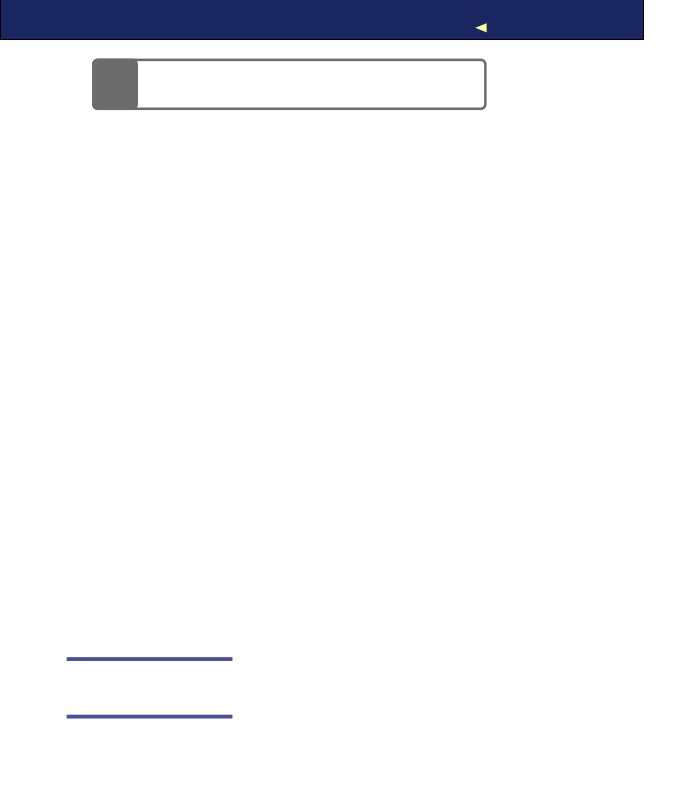
Download at Boykma.Com
RIGHT NOW
96
19
Right Now
Imagine you are in a race with a $100,000 cash prize. The first team that
creates software to implement a new accounts receivable application
wins the prize. You and your team at work have signed up to compete.
The contest is to take place over a weekend. To win, your code has
to be fully tested and implement a minimum set of specified features.
You start on Saturday morning, and you have until Monday morning
to complete the application. The first team to finish before Monday
morning wins the race. If no team finishes before Monday, the team
with the most features implemented wins.
You confidently peruse the application’s feature requirements. Look-
ing at the feature set, you realize that the system to be created is simi-
lar in size and scope to a lot of systems you’ve worked on in the past.
While your team’s agreed-upon goal is to finish some time midday on
Sunday, for a fleeting moment you start to question yourself. How is it
that an application of similar scope to those we spend weeks working on in the
office is going to get finished in a single weekend?
But as the opening bell sounds and you launch into coding, you realize
that your team is going to be able to meet its goal. The team is col-
lectively in a groove, churning out feature after feature, fixing bugs,
making split-second design decisions, and getting things done. It feels
good. At design reviews and status meetings in the office, you’ve often
daydreamed about taking a small team out of the bureaucratic environ-
ment and ripping through the creation of a new application in record
time.
Many of us have this daydream. We know that our processes slow us
down. Not only that, but we know that the speed of our environments
cause us to slow down.
Parkinson’s law states that “Work expands
What can we do? Right so as to fill the time available for its com-
now?
pletion.” The sad thing is that even when
you don’t want it to be this way, you can
fall into the trap, especially when there are tasks you don’t really want
to do.
Download at Boykma.Com
RIGHT NOW
97
In the case of a weekend coding race, you don’t have time to put tasks
off, so you don’t. You can’t delay making a decision, so you don’t. You
can’t avoid the boring work, and you know that you have to do it so
quickly that nothing can get too boring.
Parkinson’s law is an empirical observation—not an unescapable
human mandate. A sense of urgency, even if manufactured, is enough
to easily double or triple your productivity. Try it, and you’ll see. You
can do it faster. You can do it now. You can get it done instead of talking
about getting it done.
If you treat your projects like a race, you’ll get to the end a lot faster
than if you treat them like a prison cell. Create movement. Be the one
who pushes. Don’t get comfortable.
Always be the one to ask, “But what can we do right now?”
Act on It!
1. Look at your proverbial plate. Examine the tasks that have been
sitting on it for a long time, the projects that are starting to grow
mold, or the ones you’ve been just a little bit stuck on—perhaps in
bureaucracy, perhaps in analysis paralysis.
Find one that you could just do in between the cracks of your nor-
mal work, when you would normally be browsing the Web, check-
ing your e-mail, or taking a long lunch. Turn a multimonth project
into a less-than-one-week task.
Download at Boykma.Com
MIND READER
98
20
Mind Reader
I used to work with this guy named Rao. Rao was from a state in south-
ern India called Andhra Pradesh, but he was located in the United
States and worked onsite with us. Rao was the kind of guy who could
code anything you asked him to code. If you needed low-level sys-
tem programming done, he was the guy to ask. If you needed high-
level application programming, he could do pretty much anything you
asked him to do.
However, what made Rao truly remarkable was what he did before you
asked him. He had this uncanny ability to predict what you were going
to ask him to do and do it before you thought of it. It was like magic.
I believe I even accused him of playing tricks on me at one point, but
there’s no way it could have been a trick. I would say, “Rao, I’ve been
thinking about changing the way we’re encapsulating the controller on
our application framework. If we changed it just a tad, it could be used
for applications other than web applications. What do you think?”
“I did that earlier this week,” he would say. “It’s checked into version
control. Have a look.” This was constantly happening with Rao. It hap-
pened so often that the only way it could have been a coincidence is if
Rao was literally doing everything imaginable with every piece of soft-
ware that our team maintained.
At the time, I was leading my company’s application architecture team.
Among other things, we built and maintained frameworks for use in
the company’s applications. My teammates spent a lot of time talk-
ing about how we wanted to see the face of software development at
the company improve. We also talked a lot about the role of our core
infrastructure components in these improvements.
That’s where Rao’s magic trick came in. He didn’t talk much in those
conversations, but he was anything but disengaged. He was listening
carefully. And, giving away his secret as no magician would, he later
told me the trick was that he was only doing things that I had already
said I wanted. I had just said them in ways that were subtle enough
that even I didn’t realize I had said them.
Download at Boykma.Com
MIND READER
99
We might be standing around waiting for a pot of coffee to brew, and I
would talk about how great it would be if we had some new flexibility
in our code that didn’t exist before. If I said it often enough or with
enough conviction, even though I hadn’t really put it on the team’s to-
do list, Rao might fill the gaps between “real work” looking at the fea-
sibility of implementing one of these things. If it was easy (and cheap)
to implement, he’d whip it out and check it in.
Mind reading not only applies to your
The mind-reading trick, if
managers but also to your customers. If
they’re giving you the right cues, you done well, leads to
might be able to add features that they’re
people depending on
either going to ask for or would have asked
you.
for if they had realized they were possible.
If you always do what your customers ask for when they ask for them,
you will satisfy your customers. However, if you do more than what
they ask for or you have already done things before they ask, you will
delight them—that is, unless your ability to read minds is defective.
This mind-reading trick isn’t entirely safe. It’s a tight rope that you’ll
want to avoid walking unless you have left yourself a safety net. The
major risks (with some suggested mitigations) are as follows:
• You spend the company’s money doing work that nobody asked
you to do. What if you were wrong? Start small. Only do the
guesswork that you can fit in between the cracks of your normal
job so the impact is little to none. If you’re so inclined, take on
these extra jobs in your free time.
• Any time you add code to a system, you stand the very strong
chance of making it less resilient to change. Avoid mind-reading
work that may force the system down a particular architectural
path or limit what the system can do in some way. When the
impact of change is great enough, a business decision needs to be
made. And, it’s seldom just the developers who need to weigh in
on such a decision.
• You might take it upon yourself to change a feature your cus-
tomers did ask for in a way that, unexpectedly to you, makes it
less functional or desirable to the customer. Beware of guessing
when it comes to user interfaces especially.
Download at Boykma.Com
MIND READER
100
Managing people and projects is challenging work. People who can
keep a project moving in the right direction without being given much
guidance are highly valued and appreciated by their often overworked
managers and customers. The mind-reading trick, if done well, leads
to people depending on you—an excellent recipe for a career you can
drive the direction of. It’s a skill worth exploring and developing.
Act on It!
1. An early reviewer for this book, Karl Brophey suggests that for your
next project or a system you maintain, start making some notes
about what you think your users and managers are going to ask
for. Be creative. Try to see the system from their points of view. After
you have a list of the not-so-obvious features that might come up,
think about how you could most effectively implement each fea-
ture. Think about edge cases that your users might not immedi-
ately have in mind.
As you get into the project or enhancement requests, track your
hit rate. How many of your guesses turned out to be features you
were actually asked to implement? When your guessed features
did come up, were you able to use the ideas you came up with
in your brainstorming session?
Download at Boykma.Com
DAILY HIT
101
21
Daily Hit
We all like to believe, by virtue of our knowledge and that we’re good
software people, that we are going to naturally nail execution and be
top performers. For a lucky few (and I do mean to use the word luck
here), a strategy like this will work.
But, all of us can benefit from scheduling and tracking our accomplish-
ments. Common sense tells us that if we exceed our managers’ expec-
tations, we’ll be on the A list. Given that exceeding expectations is a
worthy goal, surprisingly few of us have mechanisms of tracking how
and when we exceed the expectations of our employers.
As with most tasks that are worth doing, becoming a standout per-
former is more likely with some specific and intentional work. When
was the last time you went above and beyond the call of duty?
Did your manager know about it? How can you increase the visible
instances of this behavior?
James McMurry, a co-worker who’s also a
Have an
good friend,8 told me very early in both of
our careers about a system he had worked accomplishment to
up to make sure he was doing a good job.
report every day.
It struck me as being remarkably insightful
given his level of experience (maybe it’s a hint he got from his parents),
and I use it to this day. Without warning his manager, he started track-
ing daily hits. His goal was to, each day, have some kind of outstanding
accomplishment to report to his manager—some idea he had thought
of or implemented that would make his department better.
Simply setting a goal (daily, weekly, or whatever you’re capable of)
and tracking this type of accomplishment can radically change your
behavior. When you start to search for outstanding accomplishments,
you naturally go through the process of evaluating and prioritizing
your activities based on the business value of what you might work on.
Tracking hits at a reasonably high frequency will ensure that you don’t
get stuck: if you’re supposed to produce a hit per day, you can’t spend
8.
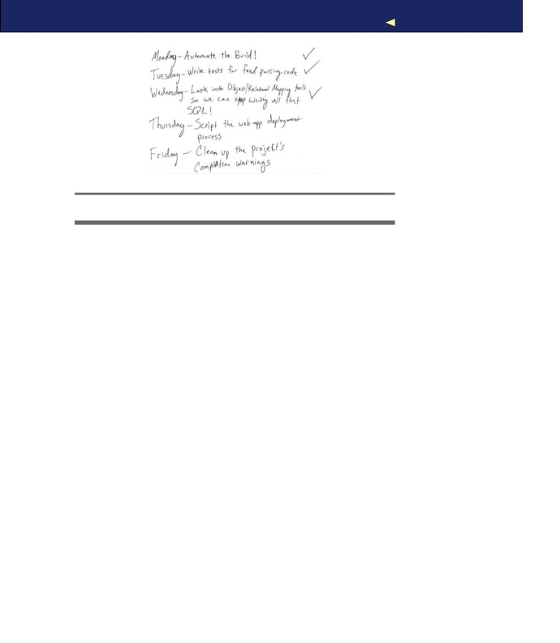
Download at Boykma.Com
DAILY HIT
102
Figure 2: One week of hits
two weeks crafting the perfect task. This type of thinking and work
becomes a habit rather than a major production. And, like a developer
addicted to the green bar of a unit test suite, you start to get itchy if
you haven’t knocked out today’s hit. You don’t have to worry so much
about tracking your progress, because performing at this level becomes
more akin to a nervous tic than a set of tasks that need to be planned
out in Microsoft Project.
Act on It!
1. Block off half an hour on your calendar, and sit down with a pencil
and paper in a quiet place where you won’t be interrupted. Think
about the little nitpicky problems your team puts up with on a daily
basis. Write them down. What are the annoying tasks that waste
a few minutes of the team’s time each day but nobody has had
the time or energy to do anything about?
Where in your current project are you doing something manually
that could be automated? Write it down. How about your build or
deployment process? Anything you could clean up? How might
you reduce failures in your build? Write all of these ideas down.
Give yourself a solid twenty minutes of this. Write down all of your
ideas—good or bad. Don’t allow yourself to quit until the twenty
minutes are up. After you’ve made your list, on a new sheet of
paper write out your five favorite (most annoying) items. Next
week, on Monday, take the first item from the list, and do some-
thing about it. On Tuesday, take the second item, Wednesday the
third, and so on.
Download at Boykma.Com
REMEMBERWHO YOU WORK FOR
103
22
Remember Who You Work
For
It’s really easy to say “Make sure your goals and your work align with
the goals of your business.” It’s really easy to say; it’s really hard to do,
especially when you’re a programmer buried under so many organi-
zational layers that you hardly know what your business is. Early in
my career, I worked for a major package delivery company in a soft-
ware development architecture team supporting the company’s rev-
enue systems. This company was so encumbered with hierarchy, I
never saw anything in my daily work that gave me even a glimpse
into the business of package delivery. I can remember my team attend-
ing quarterly all-hands meetings and feeling completely disjointed and
alienated. “What is this achievement we’re celebrating? What do all of
these metrics mean?”
Granted, at that point in my career, I was more interested in building
elegant systems and hacking open source software than digging into
the guts of a package delivery business. (OK, I admit it—I’m still more
more interested in those things.) But, had I really wanted to align my
work with the major goals of the organization, I’m not sure I would
have known where to begin.
So, it’s all fine and dandy to say we need to align our work with the
goals of the company—to try to make sure we’re impacting the bottom
line and all that. However, truth be told, many of us just don’t have vis-
ibility into how we can do this at the level from which we’re grasping.
We can’t see the forest for the trees.
Maybe this one isn’t our fault. We may be asking too much of our-
selves. Maybe the idea of trying to directly impact the company’s bot-
tom line feels a bit like trying to boil the ocean. So, we need to take
a more compartmentalized view, breaking the business into boilable
puddles.
The most obvious puddle to start with is your own team. It’s probably
small and focused enough that you can conceptually wrap yourself
around it. You most likely understand the problems the team faces.
You know what your team is focused on improving, be it productivity,
Download at Boykma.Com
REMEMBERWHO YOU WORK FOR
104
revenue, error reduction, or anything else. If you’re not sure, you have
one obvious place to go to find out: your manager.
Ultimately, in a well-structured environment, the goals of your man-
ager are the goals of your team. Solve your manager’s problem, and
you’ve solved a problem for the team. Additionally, if your manager is
taking the same approach you are, the problems you’re solving for him
or her are really his or her boss’s problems. And so on, and so on, until
it rolls up to the highest level of your company or organization—the
CEO, the shareholders, or even your customers.
By doing your small part, you’re contributing to the fulfillment of the
goals of your company. This can give you a sense of purpose. It gives
your work meaning.
Some may resist this strategy. “I’m not going to do his work for him.”
Or, “She’s just going to take credit for my work!”
Well, yeah. Sort of. That’s the way it works. The role of a good manager
is not to, as Lister and DeMarco say in Peopleware [DL99], “play pinch
hitter,” knowing how to do his or her whole team’s job and filling in
when things get difficult. The role of a good manager is to set priori-
ties for the team, make sure the team has what it needs to get the job
done, and do what it takes to keep the team motivated and productive,
ultimately getting done what needs to get done. A job well done by the
team is a job well done by the manager.
If the manager’s job is to know and set pri-
Your managers’
orities but not to personally do all the work,
successes
then your job is to do all the work. You are
not doing the manager’s job for him or her.
are your successes.
You’re doing your job.
If you’re really worried about who gets the credit, remember that it’s
your manager who holds the keys to your career (in your present com-
pany, at least). In most organizations, it’s the direct manager who influ-
ences performance appraisals, salary actions, bonuses, and promo-
tions. So, the credit you seek is ultimately cashed in with your manager.
Remember who you work for. You’ll not only align yourself with the
needs of the business, but you’ll align the business with your needs.
If you’re going to nail the execution of your job, this will ensure that
you’re executing on the right things.
Download at Boykma.Com
REMEMBERWHO YOU WORK FOR
105
Act on It!
1. Schedule a meeting with your manager. The agenda is for you to
understand your manager’s goals for the team over the coming
month, quarter, and year. Ask how you can make a difference.
After the meeting, examine how your daily work aligns to the goals
of your team. Let them be a filter for everything you do. Prioritize
your work based on these goals.
Download at Boykma.Com
BE WHERE YOU’RE AT
106
23
Be Where You’re At
As a manager, I can tell you that the most frustrating thing to deal
with is an employee who’s always aiming for the next rung on the
ladder. You know the guy: you can’t sit with him for lunch without
him bringing up who got what promotion. He always has some kind
of office gossip to spread, and he seems to cling to corporate politics
as if clinging to the story line of a soap opera to which he has some
sick and sinful addiction. He complains about the incompetence of The
Management and bitterly completes his tasks, knowing full well that
he could do the job of management better than they can. They’re just
too incompetent to understand his potential.
He thinks many tasks are beneath him. He avoids them when possible
and does them begrudgingly (and slowly) when not. He cherry-picks
work that he thinks, even if subconsciously, is in tune with his level
and might get him closer to his goal of the next promotion.
The sad thing about this guy is that,
Be ambitious, but don’t because he’s living in the next job, he’s usu-
wear it on your sleeve.
ally doing a mediocre job in his current
role. It’s like mowing the lawn for me. I
hate mowing the lawn. It makes me itch, and it makes me sweat. Worst
of all, it keeps me from doing something I’d rather be doing. You can
hire people to mow the lawn. I’ve been one of those people. That was
a long time ago, and now I’ve graduated. So, when I have to mow the
lawn, what do I do? I rush. I do a sloppy job. I spend the whole time
thinking about how to get it finished so I can get on to the stuff I’d
rather be doing. In a nutshell, I do a terrible job at mowing the lawn.
Thankfully, in my lawn-mowing example, nobody is watching what
I’m doing and grading me on it (though, my wife has become suffi-
ciently annoyed that I’m not responsible for the lawn at our house any-
more). It’s my own problem if the lawn doesn’t look great when I’ve
finished. Nobody is holding me back to being “just a lawn mower”
because of my performance in the yard. In the case of an IT job, that
very same behavior could bring on a career catastrophe. Going back to
our friend from the previous paragraphs, how do you think his man-
agement is going to view him? Will they see that they’ve been wrong
Download at Boykma.Com
BE WHERE YOU’RE AT
107
to overlook his brilliance and decide to promote him? Will they give
him big raises to try to make him happy?
Of course not. He’s a mediocre performer with a bad attitude. So what
if he has high potential! Right now, he’s not showing it. The company
doesn’t make money because of potential. Shareholders don’t hang
onto investments if their potential isn’t met. Furthermore, his attitude
makes his managers want to stop investing in him.
So, that’s a manager’s viewpoint. Now, of course, I’m not completely
guilt-free here. I’ve been this guy myself to some extent. It really isn’t
very good from this side of the street either. You spend all your time
wanting something. Craving is the opposite of contentment. You wake
up in the morning and have to go to “that bloody job” where nobody
understands your potential. With resentment, you toil over your work,
going over strategies for how to get ahead. You fantasize about what
you would do in the latest situation that your manager screwed up—
how you would handle it differently. You put off living while you’re at
work until you can do it your way in the position you deserve.
Here’s a secret: that feeling will never end. If and when you finally
land the big promotion you’ve been dreaming about, you’ll quickly
grow tired and realize that it’s not this job you were meant for—it’s the
next one. The cycle begins again. I haven’t reached the top yet, but I
have a strong hunch that if there were such a position and I were to
reach it, I would look ahead and realize I’d been chasing a ghost. What
a frustrating waste of a professional life.
But, shouldn’t we have ambitions? Would there be a Microsoft or a
General Electric if the great entrepreneurs hadn’t been ambitious and
had goals?
Of course we should. I’m not advocating an apathetic outlook. It’s
good to have goals, and it’s good to want to succeed. But, think of
the negative, resentful guy I described at the beginning of this section.
Do you think that guy is going to be the one who succeeds? It seems
backward, but keeping your mind focused on the present will get you
further toward your goals than keeping your mind focused on the goal
itself.
It sounds difficult at first. Monk-like, even. Casting off the daily drive
to succeed may sound like an ascetic, unattainable goal. You’ll find
Download at Boykma.Com
BE WHERE YOU’RE AT
108
that it’s very pragmatic, though. Focusing on the present allows you
to enjoy the small victories of daily work life: the feeling of a job well
done, the feeling of being pulled in as an expert on a critical business
problem, the feeling of being an integral member of a team that gels.
These are what you’ll miss if you’re always walking around with your
head in the clouds. You’ll always be waiting for the big one while ignor-
ing the little things that happen every day that make your job worth
showing up for.
Not only will you feel better, but those around you will feel it as well.
Your co-workers, managers, and customers will feel it. It will show in
your work. As unintuitive as it may be, letting go of your desire to
succeed will result in an enhanced ability to succeed.
You are close to your clients. You are close to the leaders and decision
makers who will shape your career in the short term and, possibly,
the long term. Developers in India or the Philippines don’t have this
advantage, but you do. So, be where you’re at.
Act on It!
1. Put your career goals away for a week. Write down your goals
for your current job. Instead of thinking about where you want to
go next, think about what you want to have accomplished when
you finish the job you’re in. What can you have produced in this
job that will be great? Create a plan that is both strategic and
tactical. Spend the week implementing these tactics in support of
the long-term goal of “finishing” this job.
During lunches and breaks with your co-workers, focus the conver-
sation on these goals. Steer yourself and those around you away
from any conversation about career advancement or office poli-
tics and gossip.
At the end of the week, take stock of your progress toward meet-
ing these job goals. How long will it be before you’ve accom-
plished everything you feel you need to in your current role? How
will you know you’re done? Plan the next week and repeat.
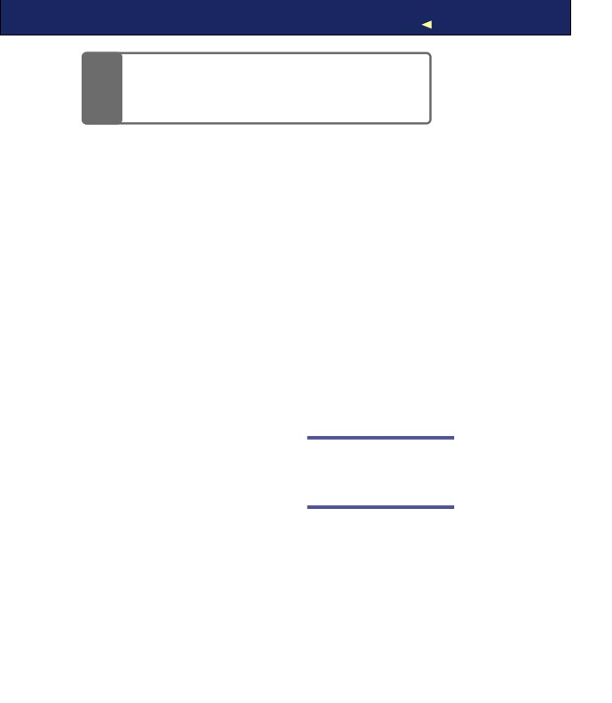
Download at Boykma.Com
HOW GOOD A JOB CAN I DO TODAY?
109
24
How Good a Job Can I Do
Today?
It’s rewarding to do a good job and to be appreciated. Although most
of us know this intuitively, we allow ourselves to be extremely selec-
tive about where and when we really go out of our way to excel. We
dote over the design for the marketing department’s Next Big Thing
project, or we’re quick to jump in to save the day in the face of some big,
visible catastrophe, because our brains are wired to understand these
moments as opportunities to show our proverbial stuff. We’ll even do
our work in the middle of the night with a level of focus and detail that
would normally bore us to tears. A dire situation will often bring out
the best in us.
I’ve let that intoxicating feeling of elation keep me awake and work-
ing effectively through some of the most grueling system outages
and missed deadlines. Why is it that, without facing great pressure,
we’re often unable to work ourselves into this kind of altruistic, ultra-
productive frenzy? How well would you perform if you could treat the
most uninteresting and annoying tasks with the same feverish desire
to do them right?
That last question may be better if we
How much
restate it. How much more fun would your
job be if you could treat the most uninter- more fun could you
esting and annoying tasks with the same
make your job?
feverish desire to do them right? When we
have more fun, we do better work. So, when we have no interest in a
task, we’re bored, and our work suffers as a result.
How can you make the boring work more fun? The answer to that
question might be more apparent if you flip it around. Why is the
boring work boring? Why isn’t it already fun? What’s the difference
between the work you enjoy and the work you abhor?
For most of us techies, the boring work is boring for two primary rea-
sons. The work we love lets us flex our creative muscles. Software
development is a creative act, and many of us are drawn to it for this
Download at Boykma.Com
HOW GOOD A JOB CAN I DO TODAY?
110
reason. The work we don’t like is seldom work that we consider to be
creative in nature. Think about it for a moment. Think about what you
have on your to-do list for the next week at work. The tasks that you’d
love to let slip are probably not tasks that leave much to the imagina-
tion. They’re just-do-’em tasks that you wish you could just get some-
one else to do.
The second reason that the boring tasks are boring, admittedly closely
joined to the first, is that the boring tasks are not challenging. We love
to dig in and solve a hard problem where others have failed. It’s the
same feeling that drives members of our species to recreationally risk
their lives scaling mountains and bungee jumping off bridges. We love
to do things to prove that we’re able. The boring tasks are usually no-
brainers. Doing them is about as challenging as taking out the trash.
So, how can we still use our creativity and challenge ourselves while
tending to the mundane leftovers of our workday (which probably take
up greater than 80 percent of the time for most of us)?
What if you tried to do the boring stuff perfectly? Say, for example, you
hate unit testing. You love programming, but you get annoyed with
having to write automated test code. What if you strove to make your
tests perfect? How might that change your behavior? What does per-
fect even mean with regard to unit testing? It probably has something
to do with test coverage. Perfect test coverage would mean that you
had tested 100 percent of the functionality of your real code. Perfect
unit tests are also clean and maintainable and don’t depend on a lot of
external factors that might be hard to replicate on another computer.
They should be runnable directly after a fresh version control checkout
on a new machine. And, of course, all of the tests should pass at 100
percent.
This is starting to sound difficult; 100 percent test coverage almost
sounds impossible. And the business of decoupling the tests so that
they can run without external dependencies presents a lot of chal-
lenges. In fact, you’ll probably have to change your code to make this
even possible. But, if you could do it, the tests would be incredible.
I don’t know about you, but that sounds kind of fun to me. Granted,
this is a manufactured example, but you can apply the same type of
thinking to most of the tasks that cross your path. Try it tomorrow.
Download at Boykma.Com
HOW GOOD A JOB CAN I DO TODAY?
111
Look at your workday and ask yourself, “How good a job can I do
today?” You’ll find that you’ll like your job better, and your job will
like you.9
Act on It!
1. Make it visible—Turn those boring tasks into a competition with
your co-workers. See who can do them better. Don’t like writing
unit tests? Print out the number of test assertions for the code you
checked in every day, and hang it on your cubicle walls. Keep
a scoreboard for the whole team. Compete for bragging rights
(or even prizes). At the end of a project, arrange for the winner to
have his or her grunt work done by the rest of the team for a whole
week.
9.
Download at Boykma.Com
HOW MUCH ARE YOU WORTH?
112
25
How Much Are You Worth?
Have you ever stopped to consider exactly how much you cost to the
company you work for? I mean, you know your salary. That part is
easy. What about benefits, management overhead, training, and all that
other stuff that doesn’t necessarily show up on your paycheck?
It’s easy to get into the mode of just wanting more. It unfortunately
seems to be a basic human tendency, in fact. You get a salary increase,
and it feels good for a little while, but then you’re thinking about the
next one. “If I could make just 10 percent more, I could afford that
new
” We’ve all done it. At some point, the actual number becomes
abstract. It’s not about $5,000 more per year. It’s about making what-
ever the baseline number is go up. If we don’t get a satisfactory salary
increase one year, we become dissatisfied with our work and our com-
pany. “Why don’t they appreciate me?”
How much do you really cost? As I already mentioned, it’s obviously
more than your base salary. For the sake of discussion, let’s estimate it
at roughly two times your base salary. So, if you make $60k per year,
the company actually spends about $120k keeping you employed.
That was easy. Now’s the hard part: how much value did you produce
last year? What was your positive impact on the company’s bottom
line? We already know that you cost the company (in our imaginary
scenario) roughly $120k. What did you give back? How much money
did you cause the company to save? How much more in revenues did
you contribute?
Is that number bigger than twice your salary?
It’s a difficult exercise to go through, because it’s often hard to relate
every aspect of our work to the bottom line of the company. It may
even seem like an unreasonable question to you. “How do I know? I’m
just a coder!” That, of course, is the point. You work for a business, and
unless you provide some kind of real value, you are a waste of money.
It’s easy to fall into the trap of thinking that salary increases are an
entitlement. Analogously, a company has the right to charge more for
Download at Boykma.Com
HOW MUCH ARE YOU WORTH?
113
its products every year. But, consumers have the right to not purchase
that product if the price isn’t attractive.
Now that you’ve started thinking about how much you cost vs. how
much you deliver, how much do you think you need to deliver to be
considered a worthwhile investment to the company? We’ve talked
about the rough twice-your-salary figure, but is that enough? If you
deliver value totaling twice your salary, the company has broken even.
Is that a good way to spend money?
As a point of reference, think about the interest rate on a typical con-
sumer savings account. It’s not great, right? Still, it’s definitely better
than zero. Given the choice, would you put a year’s worth of savings
into a savings account that yields 0 percent or 3 percent? To deliver
only twice your salary in value is as unappealing a prospect for a com-
pany as a 0 percent savings account is to you. They’ve tied up $120k
in cash for the year, and you’re not even delivering enough value to
keep up with the economy’s inflation rate. Breaking even in this case is
actually still a loss.
I can remember when I started thinking this way. It made me paranoid
at first. A month would pass, and I would think, “What did I deliver
this month?” Then, I started getting as granular as weeks and days.
“Was I worth it today?”
You can make this concrete. Just how much
value do you add? Talk to your manager
Ask, “Was I worth it
about how to best quantify it. The very fact
today?”
that you want to quantify it will be taken
as a good thing. How could you creatively save the company money?
How could you make your development team more efficient? Or what
about the end users of your software? You’ll be surprised at how many
opportunities you can spot if you start asking these questions. Now,
start implementing some of them. Hold that figure in your head: twice
my salary. Don’t let yourself off the hook until you’ve surpassed that
number for the year.
Act on It!
1. When companies make investments, they try to make sure they’re
using their money in the best possible way. Simply calculating
Download at Boykma.Com
HOW MUCH ARE YOU WORTH?
114
a return on investment (I put in $100 and get back $120) isn’t
enough to make a smart decision. Among other factors, compa-
nies have to take inflation, opportunity cost, and risk into consider-
ation. Specifically unintuitive to those of us who haven’t been to
business school is the concept of the time value of money. At risk
of oversimplification, it goes something like this: a dollar today is
worth more than a dollar next year, because a dollar today can
be used to generate more dollars.
Most companies set a rate of return bar, under which an invest-
ment will not be made. Investments have to yield an agreed-upon
percentage in an agreed-upon period of time, or they aren’t
made. This number is called the hurdle rate.
Find out what your company’s hurdle rate is, and apply it to your
salary. Are you a good investment?
Download at Boykma.Com
A PEBBLE IN A BUCKET OF WATER
115
26
A Pebble in a Bucket of
Water
What would happen if you got up and walked out of your office, never
to return? I know a lot of programmers who take comfort in imagining
that scene. You just stand up, walk to your boss’s office, and hand in
your resignation. I’ll show them why they needed me! This works as a
daydream to get you through the really bad days, but it’s obviously
not a very productive attitude to carry with you all the time.
Beside that, it’s not true. People leave companies every day. Many
of them are let go. Many choose to leave. Some even live out your
daydream and walk out with no notice. But in few cases do the
companies they leave actually feel a significant impact as a result of
their departure. In most cases, even in critical positions, the effect is
surprisingly low. Your presence on the job is, to the company, like a
pebble in a bucket of water. Sure, the water level is higher as a result.
You get things done. You do your part. But, if you take the pebble out
of the bucket and stand back to look at the water, you can’t really see
a difference.
I’m not trying to depress you. We all need to feel that our contributions
mean something. And, they do. But, we spend so much time being
me that we can easily forget that everyone else is a me, too. Everyone
employed at your company walks around, a sentient and autonomous
being, stuck in this thing called a self, which is the only window from
which they see their jobs. Think of it this way: if you left tomorrow, the
difference would be (on the average) no more or less impactful than if
any of your co-workers left.
I once worked for a CIO who was one of the most powerful CIOs in
one of the most powerful companies in the world. He and his team (of
which I was a part) were winning every award and setting every IT
standard in the company. This was a guy who had obviously figured
out some kind of magic elixir and was sprinkling it into the free lunches
and dinners that he had served during Y2K parties.
One of the few real pieces of advice that I ever got from this CIO—
and I heard it over and over again—is that you should never get too
Download at Boykma.Com
A PEBBLE IN A BUCKET OF WATER
116
comfortable. He professed to waking up every day and intentionally
and explicitly reminding himself that he could be knocked off of his
pedestal any day. Today could be it, he’d say.
His staff would look at him incredulously. No. Today couldn’t be it.
Things are going so well. You’ve got too much going for you.
That was his point. Humility is not just
Beware of being
something we develop so we can claim to
blinded by your own
be more spiritual. It also allows you to see
your own actions more clearly. What our
success.
CIO was teaching us was that the more suc-
cessful you are, the more likely you are to make a fatal mistake. When
you’ve got everything going for you, you’re less likely to question
your own judgment. When the way you’ve always done it has always
worked, you’re less likely to recognize a new way that might work bet-
ter. You become arrogant, and with arrogance you develop blind spots.
The less replaceable you think you are, the more replaceable you are
(and the less desirable you become).
Feeling irreplaceable is a bad sign, especially as a software developer.
If you can’t be replaced, it probably means you perform tasks in such
a way that others can’t also do them. Although we’d all like to claim
some kind of special genius, few software developers are so peerless
that they in fact should be irreplaceable.
I’ve heard lots of programmers half-joking about creating “job secu-
rity” with unmaintainable code. And, I’ve seen actual programmers
attempt to do it. In every case, these people have become targets. Sure,
it was scary for the company to finally let go of them. Ultimately,
though, fear is the worst that ever came of it. Attempting to be irre-
placeable is a defensive maneuver that creates a hostile relationship
with your employer (and your co-workers) where one may not have
already existed.
Using this same logic, attempting to be replaceable should create an
unhostile working relationship. We’re all replaceable. Those of us who
embrace and even work toward this actually differentiate ourselves
and, unintuitively, improve our own chances. And, of course, if you
are replaceable, nothing is stopping you from moving up to the next
big job.
Download at Boykma.Com
A PEBBLE IN A BUCKET OF WATER
117
Act on It!
1. Inventory the code you have written or you maintain and all the
tasks you perform. Make a note of anything for which the team is
completely dependent on you. Maybe you’re the only one who
fully understands your application’s deployment process. Or there
is a section of code you’ve written that is especially difficult for the
rest of the team to understand.
Each of these items goes on your to-do list. Document, auto-
mate, or refactor each piece of code or task so that it could be
easily understood by anyone on your team. Do this until you’ve
depleted your original list. Proactively share these documents with
your team and your leader. Make sure the documents are stored
somewhere so that they will remain easily accessible to the team.
Repeat this exercise periodically.
Download at Boykma.Com
LEARNTO LOVE MAINTENANCE
118
27
Learn to Love Maintenance
Several years ago, I was involved in setting up a 250-person software
development center from scratch. We started with an empty build-
ing and were tasked with hiring and filling out an entire develop-
ment organization. In setting up this development center, we faced a
challenge we never expected. Everyone wanted to make new systems.
Nobody wanted to maintain old systems. We wanted to create a new
environment with an energized culture, so we had to pay attention to
what our new employees wanted if we were going to start off on the
right path.
Everyone likes creating. That’s when we feel we are given the oppor-
tunity to really put our stamps on a piece of work. To feel like we own
it. To express ourselves through our creation. We also tend to believe
project work is the most visible to our organizations. The people who
build the new generation are the ones who must get the glory, right?
I knew this attitude to be prevalent from the previous programmers
I had worked with. But, in dealing with a couple hundred software
developers in what amounted to a human resources petri dish, I saw
this to an extreme that I never expected.
Though software developers are typically creative, freedom-loving
people, the programmer “society” is surprisingly caste-like. Program-
mers want to be designers, who want to be architects, and so on. Main-
tenance work gives them neither a notch in their belts nor a clear, ele-
vated role (such as architect) that they can tell their parents or college
buddies.
So, the motivating factors are the ability to be creative and the chance
to make steps toward a promotion. The funny thing about it is that
project work is not necessarily the best place to do either.
Maintenance work is typically littered with old, rotting systems and
pushy end users. Since the software is thought of as being done, IT
departments are usually focused on reducing the cost of maintaining
these systems, so they look for the cheapest possible way to keep the
systems running.
Download at Boykma.Com
LEARNTO LOVE MAINTENANCE
119
That usually amounts to too few resources being assigned to look after
the systems and no significant investment dollars being pumped into
rejuvenating the systems.
Project work, on the other hand, is where you start with a nice, clean,
green field. In a well-run company, every project contributes to either
making or saving money, so the projects are usually funded sufficiently
for the work to be done (though, experiences may vary here). There is
no existing minefield of old code that the programmers have to tiptoe
carefully through so they can develop features “right” with fewer hin-
drances than if they were working on an existing system. In short, the
circumstances in project land are usually much more ideal.
If I give you $1,000 and ask you to go get me a cup of coffee, I’m going
to be very unhappy if you return with 1,000 less dollars and no cup of
coffee. I’m even going to be unhappy if you bring me plenty of really
nice coffee but it takes you two hours. If I give you $0 and ask you to
go get me a cup of coffee, I’ll be extremely appreciative if you actually
return with the coffee, and I’ll be understanding if you don’t. Project
work is like the first scenario. Maintenance is like the second.
When we don’t have the constraints of bad legacy code and lack of
funding to deal with, our managers and customers rightfully expect
more from us. And, in project work, there is an expected business
improvement. If we don’t deliver it, we have failed. Since our com-
panies are counting on these business improvements, they will often
put tight reins on what gets created, how, and by when. Suddenly, our
creative playground starts to feel more like a military operation—our
every move dictated from above.
But in maintenance mode, all we’re
Maintenance can be a
expected to do is keep the software run-
ning smoothly and for as little money as place of freedom and
possible. Nobody expects anything flashy
creativity.
from the maintenance crew. Typically, if
all is going well, customers will stay pretty hands-off with the daily
management of the maintainers and their work. Fix bugs, implement
small feature requests, and keep it running. That’s all you have to do.
What if a bug turns up the need to redesign a subsystem in the appli-
cation? That’s all part of bug fixing, right? The designs may be old
Download at Boykma.Com
LEARNTO LOVE MAINTENANCE
120
and moldy, and broken windows10 may be scattered throughout the
system. That’s an opportunity to put your refactoring chops to the
test. How elegant can this system be? How much faster can you fix or
enhance this section next time because of the refactoring you’re doing
this time?
As long as you’re keeping it running and responding to user requests
in a timely fashion, maintenance mode is a place of freedom and cre-
ativity. You are project leader, architect, designer, coder, and tester. You
can flex your creative abilities all you like, and measurable success or
failure of the system is yours to bear.
When you’re maintaining a system, you can also plan for more visible
improvements. Your three-year-old web system might not take advan-
tage of some of the snappy new user interface features available to
modern web browsers. If you can work it in between keeping the sys-
tem running and making bug fixes, you could visibly enhance the user
experience with the system. Adding a few well-placed bells and whis-
tles your customers weren’t expecting is not too different from surpris-
ing your wife with flowers or, as a kid, cleaning the house while your
parents were out shopping. And, without the bureaucracy of a full-
blown project underway, you’ll be surprised at just how much you can
fit into those cracks. Your customers will be too.
A hidden advantage of doing maintenance work is that, unlike the
contractual environment of many of today’s project teams, the mainte-
nance programmer often has the opportunity to interact directly with
his or her customers. This means that more people will know who you
are, and you’ll have the chance to build a larger base of advocates in
your business. It also puts you in a prime spot for truly learning the
inner workings of your business. If you’re responsible for a business
application in its entirety, always working with its end users through
problems and questions, chances are that even without much effort,
you will come to understand what the application actually does as well
as many of its business users. Business rules are encoded into applica-
tion logic that businesspeople can’t usually read. I’ve seen many sit-
uations where it was only the maintenance programmers who fully
understood how a specific business process in a company worked. No
10. For more on broken windows, see The Pragmatic Programmer [HT00].
Download at Boykma.Com
LEARNTO LOVE MAINTENANCE
121
one else had direct exposure to the authoritative encoding of that busi-
ness logic.
The big irony surrounding the project vs. maintenance split is that
project work is maintenance. As soon as your project team has written
its first line of code, each additional feature is being grafted onto a liv-
ing code base. Sure, the code might be cleaner or there might be less of
it than if you were working on a legacy application, but the basic act is
the same. New features are being added to and bugs are being fixed in
existing code. Who knows how to do this better and faster than some-
one who has truly embraced maintenance programming and made it a
mission to learn how to do it well?
Act on It!
1.
Measure, improve, measure—For the most critical application or
code that you maintain, make a list of measurable factors that
represent the quality of the application. This might be response
time for the application, number of unhandled exceptions that
get thrown during processing, or application uptime. Or, if you
handle support directly, don’t directly assess quality for the appli-
cation. Support request turnaround time (how fast you respond to
and solve problems) is an important part of your users’ experience
with the application.
Pick the most important of these measurable attributes, and
start measuring it. After you have a good baseline measure-
ment, set a realistic goal, and improve the application’s (or your
own) performance to meet that goal. After you’ve made an
improvement, measure again to verify that you really made the
improvement you wanted. If you have, share it with your team
and your customers.
Pick another metric, and do it again. After the first one, you’ll find
that it becomes fun, like a game. Measurably improving things
like this gets addictive.
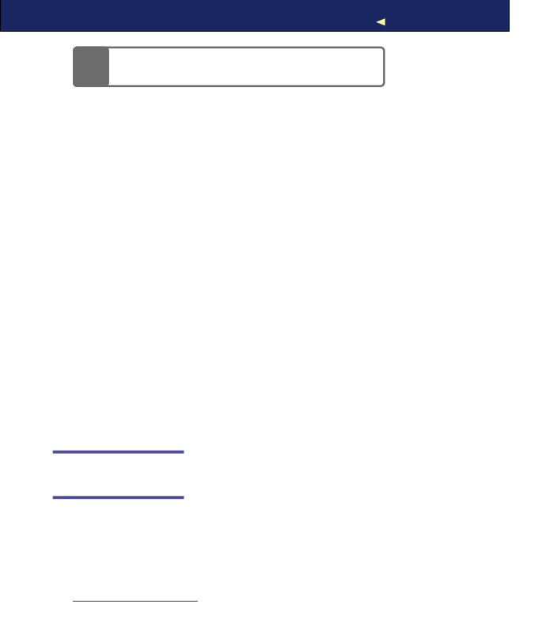
Download at Boykma.Com
EIGHT-HOUR BURN
122
28
Eight-Hour Burn
One of the many sources of controversy around the Extreme Program-
ming movement is its initial assertion that team members should work
no more than forty hours per week. This kind of talk really upsets
slave-driving managers who want to squeeze as much productivity as
possible from their teams. It even kind of upset programmers them-
selves. The number of hours worked continuously becomes part of the
developer machismo, like how many beers a frat boy can chug at a
kegger.
Bob Martin,11 one of the Extreme Programming community’s luminar-
ies, turned the phrase around in a way that made it much more toler-
able for both parties while staying true to Kent Beck’s original intent.
Martin renamed forty-hour workweek to “eight-hour burn.” The idea is
that you should work so relentlessly that there is no way that you could
continue longer than eight hours.
Before we go too deeply into the burn, why the emphasis on keep-
ing the number of hours down anyway? This chapter is about getting
things done. Shouldn’t we be talking about working more hours?
When it comes to work, less really can be more. The primary reason
cited by the Extreme Programmers is that when we’re tired, we can’t
think as effectively as when we’re rested. When we’re burned out, we
aren’t as creative, and the quality of our work reduces dramatically. We
start making stupid mistakes that end up costing us time and money.
Most projects last a long time. You can’t
Projects are marathons, keep up the pace of a sprint and finish
not sprints.
a marathon. Though your short-term pro-
ductivity will significantly increase as you
start putting in the hours, in the long term you’re going to crash so
hard that the recovery time will be larger than the productivity gains
you enjoyed during your eighty-hour weeks.
You can also think of your time in the same way you think of your
money. When I was a teenager, working part-time jobs for minimum
Download at Boykma.Com
EIGHT-HOUR BURN
123
wage, I would have been happy to live off the amount of money that
I waste now. I have so much more money available to me now than I
did when I was a teenager that I tend to be less aware as I spend each
dollar. Somehow, I was able to survive back then. I had a place to live,
a car to drive, and food to eat.
I have the same things today. And, I don’t lead a particularly extrava-
gant lifestyle now. Apparently, when money was scarce, I found ways
to be more efficient with my cash. And, the end result was essentially
the same.
We treat scarce resources as being more valuable, and we make more
efficient use of them. In addition to money matters, we can also apply
this to our time. Think about day 4 of the last seventy-hour week you
worked. No doubt, you were putting in a valiant effort. But, by day 4,
you start to get lax with your time. It’s 10:30 a.m., and I know I’m going to
be here for hours after everyone else goes home. I think I’ll check out the latest
technology news for a while.
When you have too much time to work, your work time reduces sig-
nificantly in perceived value. If you have seventy hours available, each
hour is less precious to you than when you have forty hours available.
When the value of the dollar suffers from inflation, you need more dol-
lars to buy the same stuff. When the value of the hour is deflated, you
need more hours to do stuff. Bob Martin’s eight-hour burn places a con-
straint on you and gives you a strategy for dealing with that constraint.
You get to work and think, I’ve only got eight hours! Go, go, go! With strict
barriers on start and end times, you naturally start to organize your
time more effectively. You might start with a set of tasks that need to
get done for the day, and you lay them out in prioritized order and
start nailing them one at a time.
The eight-hour burn creates an environment that feels like that ultra-
productive weekend you might have occasionally spent in college,
cramming for a test in a course that you had been neglecting or jam-
ming out a term paper that had fallen prey to procrastination. The
difference is that this is constrained cramming. Times of cramming are
usually extremely productive, because time becomes scarce and there-
fore extremely valuable. The eight-hour burn is a method of cramming
early and often without having to stay up all night taking NoDoze and
drinking Jolt Cola.
Download at Boykma.Com
EIGHT-HOUR BURN
124
As thought workers, even if we’re not in front of a computer or in the
office, we can be working. You might be working while you’re driving
to dinner with your spouse or while you’re watching a movie. Your
work is following you around nagging you.
My work usually nags me when I haven’t paid enough attention to it. I
might be letting a specific task slip or letting tasks pile up and not tak-
ing care of them. This is when the work follows me home and badgers
me while I’m trying to relax. If you work intensely every day, you’ll
find that the work doesn’t follow you home. Not only are you deliber-
ately stopping yourself from working after-hours, but your mind will
actually allow you to stop working after-hours.
Budget your work hours carefully. Work less, and you’ll accomplish
more. Work is always more welcome when you’ve given yourself time
away from it.
Act on It!
1. Make sure you sleep well tonight. Tomorrow, eat breakfast and
then start work at an exact time (preferably a little earlier than
usual). Work intensely for four hours. Take an hour lunch. Then work
for four more hours so intensely that you are absolutely exhausted
and can’t do any more. Go home, relax, and have fun.
Download at Boykma.Com
LEARN HOW TO FAIL
125
29
Learn How to Fail
As programmers, we know that the sooner in the development process
that we can discover software failures, the more robust the software is
going to be. Unit testing helps us ferret out the strange bugs as early as
we can. If we discover bizarre errors in our own code, if they happen
early, we are happy. Though they signify a small failure on our part as
developers—we made a programming error—finding them early and
often is a good sign of what the health of the software will become.
We are taught to allow our programming errors to be loud and messy
early on. You want to know about them when they happen so you can
put the correct fixes or defensive measures in place. When you’re cod-
ing, you don’t go out of your way to silence the little software failures
that are destined to arise during development. That is the code’s way
of talking to you. Those little failures are part of the strengthening pro-
cess. So, we add assertions that crash our programs when something
goes wrong or unit tests that turn a bar red if we goof up.
The little failures we encounter also teach us what kind of failures to
expect. If you’ve never walked through a minefield before, you might
not know which lumps of dirt not to step on. If your software hasn’t
been complaining to you regularly, you might not know where the dan-
gerous nooks and crannies are. You can program just so defensively
when you’re coding blind.
Furthermore, it’s important to program defensively. Software quality
is really put to the test when things go wrong. It’s inevitable that some-
thing will happen for which you did not build a contingency case. Seg-
faults and blue screens in production code mean that the programmers
didn’t do a good job of dealing with the failures they couldn’t foresee.
The same principles apply on the job. A
Every wrong note is but
craftsperson is really put to the test when
the errors arise. Learning to deal with mis- one step away from a
takes is a skill that is both highly valuable
right one.
and difficult to teach. As a jazz improviser,
I learned that every wrong note is at most one step away from a right
one. What makes improvisations bad is when the improviser doesn’t
know what to do when the wrong note pops out. Standing in front of
Download at Boykma.Com
LEARN HOW TO FAIL
126
a band on one side and an audience on another, the sound of a real
stinker of a note is enough to freeze an amateur to the bone. Even the
masters play wrong notes. But they recover in such a way that the lis-
tener can’t tell that the whole thing wasn’t intentional.
We’re all going to make stupid mistakes on the job. It’s part of being
human. We make coding mistakes that lead to customers looking at
stack traces. We paint ourselves into corners with critical design mis-
takes. Or, worse, we say the wrong things to our team members, man-
agers, and customers. We make bad commitments or false claims about
what we’re capable of doing. Or we accidentally give our team mem-
bers bad advice on how to solve a technical problem, wasting hours of
their time.
Because we all make mistakes, we also know that everyone else makes
mistakes. So, within reason, we don’t judge each other on the mistakes
we make. We judge each other on how we deal with those inevitable
mistakes.
Whether it is a technical, communication, or project management mis-
take, the following rules apply:
• Raise the issue as early as you know about it. Don’t try to hide it
for any length of time. As in software development and testing,
mistakes caught early are less of a problem than mistakes caught
late. The earlier you suck it up and expose what you’ve done, the
less the negative impact is likely to have.
• Take the blame. Don’t try to look for a scapegoat even if you
can find a good one. Even if you’re not wholly to blame, take
responsibility and move on. The goal is to move past this point
as quickly as possible. A problem needs a resolution. Lingering
on whose fault it is only prolongs the issue.
• Offer a solution. If you don’t have one, offer a plan of attack for
finding a solution. Speak in terms of concrete, predictable time
frames. If you’ve designed your team into a corner, give time
frames on when you will get back with an assessment of the
effort required to reverse the issue. Concrete, attainable goals,
even if small and immaterial, are important at this stage. Not only
do they keep things moving from bad to good, but they help to
rebuild credibility in the process.
Download at Boykma.Com
LEARN HOW TO FAIL
127
• Ask for help. Even if you are solely to blame for a problem, don’t
let your pride make it worse by refusing help in a resolution. Your
team members, management, and customers will look at you in
a much more positive light if you can maintain a healthy attitude
and set your ego aside while the team helps you dig your way
out. Too often, we feel a sense of responsibility that drives us to
proudly shoulder a burden too large, and we end up thrashing
unproductively until someone forcibly intervenes.
Think about the last time you experienced a customer service issue
at a restaurant. Perhaps you waited way too long for the wrong dish
to ultimately reach your table. Think about how the waiter reacted to
your complaint.
The wrong reaction is for the waiter to
Stressful times offer the
make excuses or to blame the cooks. The
wrong reaction would be for the waiter to best opportunities to
walk off to resubmit the order and stay out
build loyalty.
of sight while you sit there starving and
wondering when the hell your food is finally going to arrive. Of the
course, the really wrong reaction would be for the waiter to arrive with
a dish that he already knows is wrong, hoping you would either not
notice or not complain.
The difference between how a company treats us when they make a
mistake can be the ultimate in loyalty building (or destroying). A mis-
take handled well might make us more loyal customers than we would
have been had we never experienced a service problem. Remember this
with your customers when you make mistakes on the job.
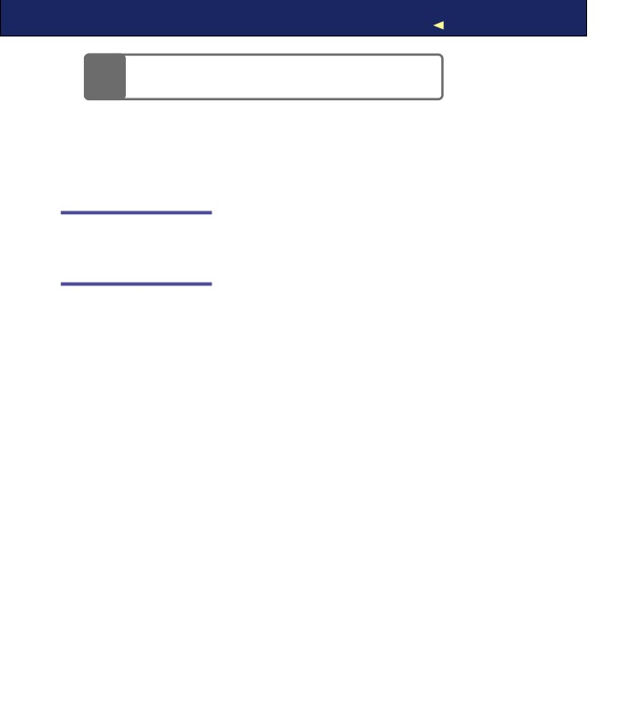
Download at Boykma.Com
SAY “NO”
128
30
Say “No”
The quickest path to missing your commitments is to make commit-
ments that you know you can’t meet. I know that sounds patently obvi-
ous, but we do it every day. We are put on the spot and we don’t want
to disappoint our leaders, so we agree to impossible work being done
in impossible timelines.
Saying “yes” is an addictive and destruc-
Saying “yes” to avoid
tive habit. It’s a bad habit masquerading
disappointment is just
as a good one. But there’s a big difference
between a can-do attitude and the misrep-
lying.
resentation of one’s capabilities. The latter
causes problems not only for you but for the people to whom you are
making your promises. If I am your manager and I ask you whether
you can rewrite the way we track shipments in our company’s fulfill-
ment system by the end of the month, chances are that I asked specifi-
cally about the end of the month for a reason. Someone probably asked
me if it could be done by then. Or there might be another critical busi-
ness change we’re trying to make that is dependent on the fulfillment
system. So, armed with your assurance that you can make the date, I
run off and commit to my customers that it will be done.
Saying “yes” in this way is as good as lying. I’m not saying it’s mali-
cious. We lie to ourselves as much as we do to those we make the com-
mitments to. After all, saying “no” feels bad. We are programmed to
want to always succeed. And, saying we can’t do something feels like
we failed.
What we humans fail to internalize is that “yes” is not always the
right answer. And, “no” is seldom the wrong answer. I say internal-
ize, because I think we all know this to be true. After all, none of us
wants to be the recipient of false commitments.
The inability to say “no” happens to be a common part of the Indian
culture. Companies that are inexperienced with offshore outsourcing
almost always run into it. You learn with time to sniff out uncertainty
and ask the right questions. Enough “one more day until it’s done”
conversations naturally train you to probe deeper. And, it’s not only a
part of the IT culture. When I lived in Bangalore, I stayed home from
Download at Boykma.Com
SAY “NO”
129
work no less than five times waiting for a cable modem installation that
never happened. It turned out that for the first three times the company
didn’t even have the parts required to do the installation when they
made the appointment. But, they didn’t want to disappoint me. I told
them I was hoping to have the cable modem installed next week, so
they promised that it would be installed, knowing full well that the
installation was not going to be possible next week.
Though the intent is positive, the ramifications are negative. I eventu-
ally got a little nasty with my cable modem installers and even made
them come to my house on a holiday to do the installation. I didn’t trust
the promise that it would be installed “tomorrow, after the holiday.”
Repeatedly missing commitments had destroyed any chance I had of
trusting them. In fact, I had developed a sense of hostility toward them.
On the other hand, what happens when you’re asked to do a critical
task and you say that you can’t? As a manager of both onshore and
offshore teams, I can tell you that “no” has become a source of relief to
me. If I have a team member who has the strength to say “no” when
that’s the truth, then I know that when they say “yes,” they really mean
it. A commitment from someone like this is going to be more credible
and carry a lot of weight. If they actually hit the targets that they com-
mit to, I’m not going to question them when they say they can’t hit one.
If someone always says “yes,” they’re either incredibly talented or
lying. The latter is usually the case.
“I don’t know” is also a great thing to say when it’s appropriate. You
might be responding to whether you can meet a date and need time
to research the task before committing. Or you might be asked how a
technology works or how some piece of your project’s code is imple-
mented. Just as in the case of commitments, not knowing the answer
to something feels like a small failure. But, your co-workers and man-
agers will have more faith in you when you claim to know some-
thing. You’ll notice that when you meet a real guru in a subject area,
they’re never afraid to admit when they don’t know something. “I
don’t know” is not a phrase for the insecure.
That same courage can also come in handy when dealing with deci-
sions from above. How many times have you seen a technology deci-
sion dictated by a manager who caused the team members to sit
around the table quietly looking at their shoes and waiting for the
Download at Boykma.Com
SAY “NO”
130
chance to escape the meeting room so they could complain to each
other? Managers are often the target of the Emperor’s New Clothes phe-
nomenon. Everyone knows that a decision is bad, but they’re all afraid
to speak up. As a manager, I make decisions or strong suggestions all
the time. However, I don’t hire my employees to be robots. It’s the ones
who speak up and offer a better suggestion that become my trusted
lieutenants.
Don’t go overboard with the “no” game. Can-do attitudes are still
appreciated, and it’s good to have stretch goals. If you’re not sure you
can do something, but you want to give it a try, say that. “This is going
to be a challenge, but I’d like to give it a try” is a wonderful answer.
Sometimes, of course, the answer is simply “yes.”
Be courageous enough to be honest.
Act on It!
1. Karl Brophey, a reviewer, suggests keeping a list of every commit-
ment you make:
• What was asked of you for a due date?
• What did you commit to?
• If you were overridden, record both what you thought and
what you were told to accept.
• Record when you delivered.
Examine this daily. Communicate where you’ll fail as soon as you
know. Examine this monthly—what is your hit rate? How often are
you right on?
Download at Boykma.Com
DON’T PANIC
131
31
Don’t Panic
I started my career as a computer programmer because of video games.
Since the days of loading games from tape on my Commodore 64,
I’ve been hooked by their immersive, interactive experiences. I used
to be embarrassed to admit it, but I realize now that it’s nothing to be
ashamed of. For me, computer games turned the on-screen environ-
ment (the operating system, I guess) into an environment I was com-
fortable and excited about.
My favorite game ever was id Software’s Doom. I was specifically in
love with the one-on-one, player-vs.-player, death-match part of the
game. Players would connect via modem or serial connection and bat-
tle each other in small, fast-paced environments. I got really good at
the Doom death match. I often joke that it might be the thing in my life
so far that I’m best at. The game of death match is surprisingly com-
plex. It’s both technical and psychological—like a frenetic mix of chess
and fencing on fast-forward.
Like most skills, a great way to get good at it is to watch masters at
work. Back in my Doom days, there was one such master who went
by the ironic online handle “Noskill.” Noskill was the de facto reign-
ing Doom champion. People from around North America would pay
the long-distance telephone fees to try their luck against him. These
matches would all be recorded with Doom’s built-in game-recording
facility. I watched every one.
It didn’t take me long to learn his secret. Sure, he was generally good
at the game, but there was one obvious key to his success: he never
panicked. Doom was the kind of game in which a round could be over
literally seconds after it started. It was really fast. I remember my first
death-match game. Spawn, die, spawn, die, spawn, die. When I finally
managed to stay alive more than a couple of seconds I found myself
running around aimlessly, barely able to keep track of where I was.
But Noskill never acted that way. No matter how difficult the situation,
you could tell by watching the recordings that he was always relaxed
and always thinking about what to do next. He was always seemingly
aware of how his current context fit into the overall shape of the match.
Download at Boykma.Com
DON’T PANIC
132
Now if you think about other games, par-
Heroes never panic.
ticularly sports, you’ll recognize that the
best players all share this quality. In fact,
even the characters we admire in books, television, and movies share
this quality. Heroes never panic. They’re always the people who can
have a nuclear bomb dropped on their city or crash in an airplane and
manage to organize a group, help the survivors, outsmart the enemy,
or at least just not break down in tears.
This extends to real life, too. Despite my best planning, my professional
life has been a string of emergencies and disasters. Projects run really
really late. Software applications crash, costing my employers money
and credibility. I say the wrong thing to the wrong vice president and
gain a political enemy. Most of the time, these things come in waves all
together, never one at a time.
In my worst moments, I panic. I lock up and can think tactically at
best. I react to each small input without the clarity to consider the big
picture.
But looking back on literally every such disaster, not a single one has
made a lasting, noticeable impact on me or my career. So, as panicked
or depressed or upset as I’ve gotten over these seemingly disastrous
situations, not one has been a true disaster.
What did the panicking give me? What was the advantage of reacting
negatively to each of these situations? Nothing. What panicking really
gave me was an inability to perform at my best at the times I really
needed to be performing at my best.
Now I have to admit that not panicking in stressful situations is easier
said than done. It’s kind of like telling someone “just be happy.” Sure,
it’s good advice, but how do you do it? How do you avoid panicking
when things seem to be falling apart? To answer this question, it helps
to think a little about why we do panic.
We panic because we lose perspective. When something has going
wrong, it’s hard not to focus all attention on the problem. To some
extent, that’s a good way to solve problems. Unfortunately, it also
makes the problem, no matter how small, seem more important than
it is. And with the problem inflated and stress levels running high, our
brains turn themselves off.
Download at Boykma.Com
DON’T PANIC
133
Who is the worst computer user you know? For me, it’s probably one
of my parents or in-laws (I know who, but I’m smart enough not to
name any names here). Imagine that person sitting at their computer
trying to finish a project when an error message start popping up with
everything they try to do. We’ve all seen this happen. Inexperienced
computer users get quickly frustrated and freaked out. They start hec-
tically clicking and dragging things around on the screen, ignoring
the potentially helpful error message text as it pops up over and over
again. They eventually get so flustered that they have to call for help,
but usually not before messing up one or two additional things on the
computer before doing so.
Don’t think I’m mean, but I want you to picture this situation with
someone appropriate you know as the main character, and I want you
to laugh to yourself about it. This kind of behavior really is ridiculous,
isn’t it? It’s laughable.
But, as genuinely funny as this is, what we just imagined was a real-
life scenario in which a person working outside their comfort zone
encountered a problem and panicked. It’s no different from the way
I’ve reacted when projects have run late or I’ve accidentally crashed
a system or I’ve dissatisfied a customer on the job. It’s just a different
context.
So, here’s how I’m learning to not panic. When something bad happens
and I start to feel that sinking, stressed-out feeling that leads to panic,
I compare myself to the frustrated computer-illiterate, and I laugh at
myself. I analyze the situation from the third-person perspective, as if
I’m helping that frustrated family member with their word processing
disaster. Seemingly hard problems are suddenly easier. Seemingly bad
situations are suddenly not so bad. And, I often find that the solution
simple and staring me in the face in the same way that an error dialog
often tells you exactly what to do next. If you’d just have the presence
of mind to read the error message, the problem might be solved.
Act on It!
1. Keep a panic journal. The key to catching panic before it happens
is to develop a heightened real-time awareness of your percep-
tion and emotions as they happen. I’ve had my best luck learning
to do this by analyzing my reactions to situations after the fact. I’m
Download at Boykma.Com
DON’T PANIC
134
not smart enough to naturally keep a background thread running
and analyzing my thoughts as they happen, but I’ve discovered
that if I practice the analysis “offline,” I get better and better at
doing the analysis in real time.
Saying you’re going to do a better job of analyzing your reactions
and actually doing it are two different things. Keeping a journal will
help add structure to the process. Each day at a specific time (use
a calendar with a reminder!), open up a text file and record any
situation that caused you to panic, even if only a little bit. Once
a week, look back on the past week’s list and take stock of the
lasting impact of each panic-inducing situation. Was the situation
panic-worthy? What would have been the most productive reac-
tion to the situation? What would the hero in a dramatized movie
about your life have done instead of panicking?
After some practice, you’ll find the analysis to start happening
while the panic sets in. As you rationally explore the reasons for
your panic in real time, you’ll find that the panic itself takes a back-
seat and eventually dissipates.
Download at Boykma.Com
SAY IT, DO IT, SHOW IT
135
32
Say It, Do It, Show It
The easiest way to never get anything done is to never commit to any-
thing. If you don’t have a deadline, you don’t have any pressure or
much incentive to finish something. This is especially true when the
something that needs to get done isn’t 100 percent exciting.
Even a bad manager’s instinct usually tells them that it’s important to
plan. For some developers, the invocation of the word plan is cause for
alarm. Endless meetings with pointy-haired bosses creating reams of
printed Microsoft Project plans that nobody understands or uses are a
valid cause for alarm. So, techies often overcompensate in our rebellion
against perceived overplanning by constantly flying by the seat of our
pants.
Planning isn’t such bad-tasting medicine that we should have to hold
our breath to force it down. Planning can be a liberating experi-
ence. When you have too much to do, a plan can make the differ-
ence between confused ambiguity at the start of a workday and clear-
headed confidence when attacking the tasks ahead.
Plans don’t have to be big and drawn out. A list in a text document or
e-mail is perfectly fine. Plans don’t have to cover a large span of time.
Being able to start the day and answer the question “What are you
going to do today?” is a great first step. I know many people whose
days stay so hectic that they would almost always fail this test. A good
first step would be to find time this afternoon and list everything you
want to get done on the next workday and arrange them in priority
order. Try to be realistic about what can fill a day, though you’re likely
to be wrong and specifically likely to overcommit yourself.
You can be as detailed or as loose as you want with your one-day plan.
I had a roommate in college named Chris who would wake up every
morning and, even at risk of being late for his first class, would metic-
ulously plan out his day, specifically focusing on his piano practice
schedule (he was a jazz piano major). His schedule was fairly rigid
already with the selection of classes he had to attend. Still, Chris would
actually plan down to how he was going to use the fifteen minutes
between classes to fit in practice routines that could be done quickly.
Download at Boykma.Com
SAY IT, DO IT, SHOW IT
136
Many of his classes were in the same building, so it was common to
have plenty of leisure time in between them for some quick socializing
or grabbing a drink from the vending machines. Chris would be cram-
ming in scales or ear training while the rest of us were sitting around
waiting for the next class to start. He would even divide his schedule
into multiple three-to-five-minute segments, so he could fit more than
one practice exercise into a given ten-minute period. Chris ended up
becoming one of the most respected musicians in our city. Natural tal-
ent had something to do with it, of course, but I’ve since held the belief
that he planned and executed his way into the musical elite.
So, you’ve made your plan. It may not be as detailed as Chris’s, but it’s
enough to answer the question of what you’re going to do with your
day. When you get to work tomorrow, pull out the list and start on the
first item. Work through the list until you go to lunch, and then pick
up where you left off and try to finish the list.
As you complete each item on the list, mark it DONE. Use capital let-
ters. Say the word, done. Be happy. At the end of the day, look at your
list of DONE stuff and feel like you’ve accomplished something. Not
only did you know what you were going to do today, but now you
know what you’ve done.
If you didn’t get everything done, don’t worry about it. You knew you
weren’t going to be right about how much would fit in a day anyway.
Just move the incomplete items from today (if they’re still relevant)
onto tomorrow’s list, and start the process again. It’s a stimulating pro-
cess. It’s rhythmic. It allows you to divide your days and weeks into
a series of small victories, each one propelling you to the next. You’ll
find that not only does it give you visibility into what you’re accom-
plishing, but you’ll actually get more done than if you weren’t watching
things so closely.
Having established a rhythm of plan and attack, you are ready to start
thinking in terms of weeks and even months. Of course, the larger the
time span you’re planning for, the higher level your plan should get.
Think of week and day plans as being tactical battle plans, with thirty-,
sixty-, and ninety-day plans focusing on more strategic goals that you
want to accomplish.
The very act of thinking about what you want to have accomplished in
ninety days is something unnatural for software soldiers on the field.
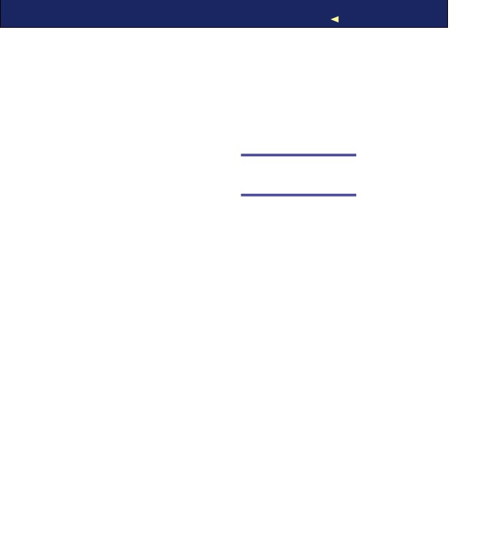
Download at Boykma.Com
SAY IT, DO IT, SHOW IT
137
We are tactical people. Forcing yourself to imagine an end state for
your system, your team’s processes, or your career after ninety days
will cause things to surface that you never expected. The view from
above the field shows us very different things than the view from the
ground. It will be difficult at first, but stick with it. Like all good skills,
it gets easier with practice, and the benefits will be visible to both you
and those who work with you (even if they don’t know that you are
doing it).
You should start communicating your
plans to your management. The best time
Status reports can help
to start communicating the plans is after
you market yourself.
you have executed at least one cycle of the
plan. And—this is an important point—start doing it before they ask
you to do it. No manager in his or her right mind would be unhappy
to receive a succinct weekly e-mail from an employee stating what
was accomplished in the past week and what they plan to do in the
next. Receiving this kind of regular message unsolicited is a manager’s
dream.
Start by communicating week by week. When you’ve gotten comfort-
able with this process, start working in your thirty-, sixty-, and ninety-
day plans. On the longer views, stick to high-level, impactful progress
you plan to make on projects or systems you maintain. Always state
these long-term plans as proposals to your manager, and ask for feed-
back. Over time, these anticipation attempts will require less tweaking
from your managers as you learn which items usually go unedited and
which are the subject of more thrashing.
The most critical factor to keep in mind with everything that goes onto
a plan is that it should always be accounted for later. Every item must
be either visibly completed, delayed, removed, or replaced. No items
should go unaccounted for. If items show up on a plan and are never
mentioned again, people will stop trusting your plans, and the plans
and you will counteract the effectiveness of planning. Even if the out-
come is bad, you should communicate it as such. We all make mistakes.
The way to differentiate yourself is to address your mistakes or inabili-
ties publicly and ask for help resolving them. Consistently tracing tasks
on a plan will create the deserved impression that no important work
is getting lost in the mix.
Download at Boykma.Com
SAY IT, DO IT, SHOW IT
138
Get this process going, and suddenly in the eyes of your management
you have exposed your strategic side. Creating and executing plans
shows that you are not just a robot typing code, but you are a leader.
It’s this kind of independent productivity that companies need as they
reduce overhead.
A final benefit of communicating in terms of plans is that your com-
mitments become more credible. If you say what you’re going to do
and then you do it and show that it’s done, you develop a reputation
for being a doer. With credibility comes influence. Imagine you want to
introduce a new process, such as an agile development practice,12 into
an organization or you want to bring in a new technology. With the
proven ability to make and meet commitments, you’ll be granted more
leeway to try new things.
In our Bangalore software center, we had a team that had been working
night shifts for more than a year. Of the seven members on the team,
two were always on the night shift. They rotated weekly, so every third
or fourth week, each team member would switch to a 7 p.m. to 3 a.m.
schedule. The team was getting frustrated and burnt out, saying that
they almost constantly felt jet-lagged. But, the team was playing a crit-
ical support role, and the team’s U.S.-based internal customers were
convinced they couldn’t get by without live real-time help from the
group in Bangalore.
So, the team put together a plan of attack. They looked at their various
support processes and associated measurements and crafted a plan to
both switch back to a single-day shift and to make significant improve-
ments in their customer experience, simultaneously. As acting opera-
tions leader of the software center, I helped them fine-tune their plan
and was present (as moral support) for the formal proposal they made
to their manager in the United States.
They knew this was going to be a touchy subject for their manager,
who had to answer to his U.S.-based customers in person. There was
naturally much trepidation among the team members as the meeting
started. However, the team’s manager was so impressed that he imme-
diately and happily signed off on the proposal, and the team put its
Download at Boykma.Com
SAY IT, DO IT, SHOW IT
139
plan into action. Within weeks, the jet lag was over, and everyone was
back on day shifts.
The solidity of their plan for how to not only deal with the change in
work hours but how they were going to strategically improve the per-
formance of their team inspired great confidence in the leaders and,
eventually, their customers. The team’s manager used the plan when
communicating the change with his customers. And, the team fol-
lowed through. Within months, the team was running at a new level
of efficiency. They’ve since gained such credibility and confidence that
they have taken more and more ownership and independence over the
workings of their team.
The team used its plan as a concrete response to a problem. They came
to their manager not with complaints but with proposed solutions.
Your leaders want you to have independence and ownership. Making,
executing, and communicating plans will help you attain both.
Download at Boykma.Com
SAY IT, DO IT, SHOW IT
140
Failing and Copying
by Patrick Collison
Larry Wall wrote that the traits of a great program-
mer are laziness, impatience, and hubris. I don’t know
whether these are innate or whether they can be
acquired with diligent self-improvement. Either way,
it’s not obvious how one can use this information to
become a better programmer. So, instead of looking
at traits, we should look at activities that will help in
improvement.
If I had to pick two, I’d pick failing and copying.
I fail more than most programmers I know. Certainly, a
majority of my projects fail. Sitting in ~/Projects are a
bunch of neglected efforts to do something interesting,
each about as likely to break out and succeed as a
lobster is to swim free from its pot. They’re kinda interest-
ing. Like families, successful projects are alike, but every
unsuccessful project fails in its own way.
And although it’s almost a cliché to say that having
a failed company behind you is great experience, I
haven’t heard the same idea extended to program-
ming much.
(I’m good at both, though. I’ve had failed businesses
too.)
Commercial failure tends to build a very direct kind of
experience. You learn the importance of conserving
cash, or you become more determined. But with pro-
gramming, it’s not so much the experience of failing
that’s valuable as the knowledge gained in working on
the kind of projects that are likely to fail.
When I started programming, a lot my time was spent
failing to write all kinds of fascinating things: operating
systems, file systems, virtual machines, reimplementa-
tions of network protocols, interpreters, and JIT compil-
ers. Most of them never worked properly, and those that
did were still pretty bad. Of course, even ignoring the
technical aspects, most were doomed from the start.
I’m not sure what fraction of 1 percent the success rate
for new operating systems is, but it’s small.
Download at Boykma.Com
SAY IT, DO IT, SHOW IT
141
Failing and Copying (continued)
Still, for me, these projects are programming at its
most enjoyable. They’re the fundamental problems of
software engineering stripped of anything extraneous.
They’re all about trade-offs in space, speed, reliability,
and complexity, without a rounded corner or buggy API
in sight.
They’re the kind of pure problems that you can become
absorbed in for months and still not emerge with some-
thing that works—as I regularly demonstrated.
I’m not sure exactly why, but people learning to pro-
gram today don’t seem to experience this as much.
I think it may be at least partially because the rise of
web-based software. Just a few days ago, someone on
Hacker News asked whether there’s anyone still inter-
ested in writing client-side software. It’s an exaggera-
tion, but it’s not too far from the truth. And hey, web-
based software really is very cool.
From a programming standpoint, though, this shift has
a drawback. Web apps rarely involve tough techni-
cal challenges until the scale becomes huge (Internet
Explorer 6 compatibility notwithstanding).
In other words, the barrier to entry for failure is higher.
You have to become successful first.
So, especially given this movement towards web-based
software, I think it’s important to actively seek out failure-
prone projects.
What about copying? To become a better program-
mer, anyone will tell you that you should read good
code. Even though they presumably don’t mean it liter-
ally (that’s far too boring), “reading” remains, at heart,
the wrong idea: it’s passive. Instead, I think you have to
actively copy, widely and unashamedly.
This applies to a lot of things, of course. Hunter S. Thomp-
son didn’t just read good books; he typed out Hem-
ingway and Fitzgerald. And the oldest known Bach
manuscripts are transcriptions Bach made of works by
other organists. More famously, maybe, Gates fished
programs out of trash cans at Harvard.
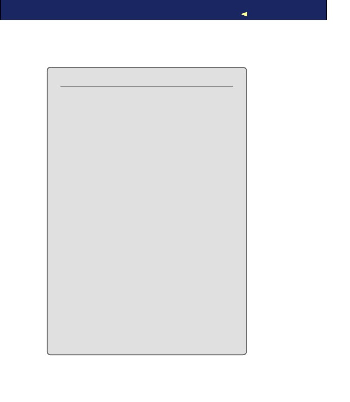
Download at Boykma.Com
SAY IT, DO IT, SHOW IT
142
Failing and Copying (continued)
It’s not too hard to see how this helps. Copying builds
muscle memory. You get a feel for the nuance and form
of the original—the kind of detail that’s lost in a quick
scan.
In the case of code, there’s also a less obvious—but
significant—benefit. Copying lets you go further with
projects that are likely to fail. This can be straightfor-
ward transcription of, say, a hash-table implementation
(which made the first interpreter I wrote suck a lot less)
or a design that’s just inspired and shaped by the origi-
nal (as, say, Linux was by Minix).
At its best, this leads to a sort of virtuous cycle of failing
and copying, where it becomes a kind of lazily eval-
uated self-improvement. You tackle something hard,
stumble up against some insurmountable problem,
copy someone else’s solution, and, hey, you now know
how to do whatever it was.
In this unrestrained looting, as you wholeheartedly
absorb various techniques, you often figure out how to
put them together in some new way. I’m not sure what
Picasso meant by “Good artists copy, while great artists
steal.” Maybe he was just being intentionally perverse,
but the former meaning is what I’ve always assumed.
Programming is full of odd ideas. Using shorter, less
descriptive names often produces code that’s more
readable overall. The most powerful languages usually
have far fewer concepts than the lesser ones. And fail-
ing and copying may be the best way to produce suc-
cessful, original work.
Patrick Collison is a student at MIT.
Download at Boykma.Com
Part IV
Marketing... Not Just for Suits
Download at Boykma.Com
MARKETING... NOT JUST FOR SUITS
144
You are the most talented software developer you know. Elegant de-
signs flow out of the seemingly unending river of your creativity. Your
architectural insightfulness is unmatched in your workplace. You can
code faster and more accurately than anyone your company has ever
employed.
So what?
Many software developers—especially the most conceited ones, it
seems—live with the misconception that their skill should be self-evident
to any clued-in manager or employer. They are able to comfortably veil
this lie inside the cloud of a make-believe moral ethic: they’re just too
humble to market their own abilities. Going out of their way to make their
abilities known would be brownnosing. No self-respecting programmer
would be caught dead sucking up to The Man.
This is all just an excuse. Actually, they’re afraid.
Most programmer types were the last kids picked for every team when
they were in school. They probably avoided social situations where pos-
sible and failed miserably where not possible. It’s no surprise that these
people are afraid to stick their necks out by trying to show someone their
capabilities.
Suspending disbelief for a minute, let’s pretend the moral ethic non-
sense isn’t such a put-on after all. Regardless of one’s intentions, it’s
stupid not to let people know what you’re capable of doing. Think of
it this way: you are employed to develop software that adds value to a
company. The job of a leader is to develop teams that deliver the maxi-
mum amount of value to the company. How is a leader to do his or her
job without knowing who in an organization is capable of what kind of
work?
As one manager told me recently, if someone does something truly fan-
tastic and nobody knows about it, in his eyes it didn’t happen. It may
sound ruthless, but from a company’s perspective it makes sense. Prag-
matically speaking, managers don’t have time to keep close tabs on
what each employee is doing every day. And neither companies nor
their employees would want managers spending their time this way.
Companies want managers focusing on the big picture—not tracking
daily tasks. And employees (especially programmers) hate to be micro-
managed.
Download at Boykma.Com
MARKETING... NOT JUST FOR SUITS
145
In short, you may have the best product in history, but if you don’t do
some kind of advertising, nobody is going to buy it. We all know—espe-
cially in the software world—that the best product doesn’t always win.
There’s a lot more to success in the marketplace than having a great
product. Let’s not forget this truth in the job market.
Enough already...what should I do?
On the surface, marketing yourself is simple. You have only two goals: to
let people know you exist and to let them know you are the person who
can solve the tough problems that keep them up at night. This applies
not only to the job market at large but also to the company at which you
currently work. Don’t assume that just because you’re employed with
a company, its management knows who you are. Furthermore, don’t
assume that just because a leader knows your name that he or she has
even the faintest understanding of your capabilities.
This part will not only help make sure your current leaders understand
what you’re capable of, but it will show you how to expand your scope
to the industry at large. In the book so far, we’ve talked about how to
be marketable. Now we’re going to learn how to put that marketability
into action.
Download at Boykma.Com
PERCEPTIONS, PERSCHMEPTIONS
146
33
Perceptions, Perschmeptions
It’s comfortable to play the idealist and pretend you don’t care what
other people think about you. But, that’s a game. You can’t let yourself
believe it. You should care what other people think about you. Percep-
tion is reality. Get over it.
You probably know the old clichéd philosophical question, “If a tree
falls in the forest but nobody is there to hear it fall, did it make a
sound?” The correct answer to the question is, “Who cares?”
I mean, the fall probably made a sound. That’s not a very exciting
answer on a metaphysical level, but it probably did. But, if nobody
heard it fall, then the fact that it made a sound doesn’t really matter.
The same goes for your work. If you kick ass and no one is there to see,
did you really kick ass? Who cares? No one.
In the subculture of Indian IT bureaucracy, I was amazed at how peo-
ple just didn’t get this simple truth. Almost everyone I dealt with there
didn’t understand why it should matter that their managers, for exam-
ple, knew what they were doing. If you knew you were better than so
and so, then it should be reflected in your performance reviews, rat-
ings, and salary. They had fooled themselves into thinking that how
other people perceived them was somehow subservient to the truth,
whatever that was.
This truth thing...what is it? Who defines it? What is good and what is
bad in an absolute sense?
The answer is that there is no absolute good or bad, at least not in terms
of judging who is better at a creative, knowledge worker job. How do
you define what makes a good song? What about a good painting? You
might have your own definitions, but I doubt I would agree with them.
They’re subjective.
Horrible risk-averse human resources
Performance appraisals departments in horrible risk-averse com-
are never objective.
panies spin their wheels chasing objective
measures of the people they employ. Some-
times they even implement “objective” appraisal systems. All of my
Download at Boykma.Com
PERCEPTIONS, PERSCHMEPTIONS
147
team members in India thought they wanted to be measured this way.
That’s because they had never experienced it before.
There is no way to objectively measure the quality of a knowledge
worker, and there is no way to objectively measure the quality of
their work. Go ahead. Disagree. Now think about your argument for a
while. See the holes?
So, if the measure of your goodness at your company (or in the indus-
try or the job market or wherever) is subjective, what does that mean?
That means you are always going to be measured based on someone
else’s perception of you. Your potential promotions or salary increases—
even the decision of whether you should continue to be on the payroll
at all—is completely dependent on the perceptions of others.
Subjectivity, being based on personal taste, implies that you can’t count
on any two opinions being the same. Different people are impressed
with different factors. Some people might like rigid structure, while
others prefer loose, free creativity. Some may prefer to communicate
via e-mail and others face to face or by phone. Some managers may
like their employees to be aggressive, while others prefer them to act
like subordinates. You say “Poh tay toh”—I say “poh tah toh.”
It doesn’t come down only to personal preference. People in differ-
ent roles and relationships to you build their perceptions based on the
qualities most important to making that particular relationship work
well. If I’m a project manager, the quality of your source code is a lot
less important to me than the quality of your communications. If I’m
a fellow programmer, your raw ability and creativity drive my percep-
tion of you more than, for example, your follow-through. But, if I’m
your manager, raw ability is ultimately meaningless to me unless you
actually do something with it.
We’ve culturally trained ourselves to perceive that managing percep-
tion is somehow a dirty and shameful activity. But, as you can see,
managing perception is just practical. When you explicitly take note
of the factors that drive other people’s perceptions of you, you more
firmly discover how to make them happy customers. You’re not going
to impress your nontechnical business client with your object-oriented
design skills. You might be a design genius, but if you can’t communi-
cate effectively and you don’t manage to complete your work on time,
your customers will think you stink. It’s not their fault. You do stink.
Download at Boykma.Com
PERCEPTIONS, PERSCHMEPTIONS
148
Perceptions really do matter. They keep you employed (or unem-
ployed). They get you promoted or get you stuck in the same job for
years. They give you raises or lowball you on salary. The sooner you
get over yourself and learn to manage perceptions, the sooner you’ll be
on the right track.
Act on It!
1.
Perceptions are driven by different factors, depending on who the
audience is. Your mother doesn’t much care how well you can
design object-oriented systems, but your teammates might.
Understanding what’s important in each of your relationships is
an important part of building credible perceptions with those you
interact with. Think about the different classes of relationships you
generally have with people in the office. For example, you prob-
ably have teammates who do the same type of job you do. You
also probably have a direct manager, and you may have one or
more customers and a project manager.
Take these different groups (or whichever actually apply given the
structure of your workplace), and list them. Next to each, write
down which of your attributes is most likely to drive that group’s
perception of you. Here’s an example:
Group
Perception Drivers
Teammates
Technical skills, social skills, teamwork.
Leadership ability, customer focus, communication
Manager
skills, follow through, teamwork.
Customer focus, communication skills,
Customers
follow through.
Communication skills, follow through,
Project manager
productivity, technical skills.
Put some thought into your own list. How might you change your
behavior as a result of this list? In what ways have you already
been adjusting your focus as you interact with each group?
In what ways have you not been appropriately adjusting your
behavior?
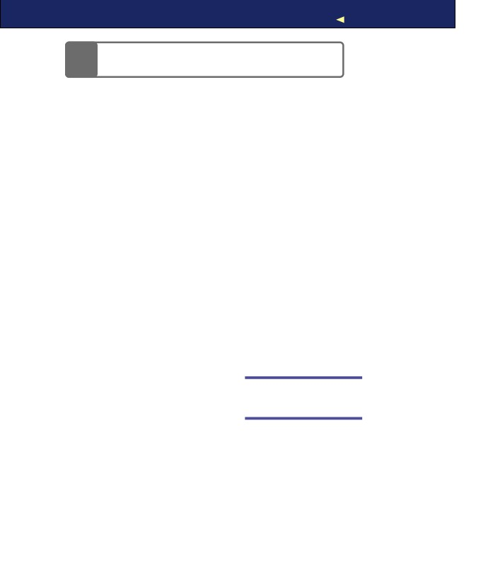
Download at Boykma.Com
ADVENTURETOUR GUIDE
149
34
Adventure Tour Guide
At the risk of stating the obvious, the most important aspect of getting
the word out in the workplace is your ability to communicate. Gone
are the days of the disheveled hacker crouching over his terminal and
coding by the light of his monitor in the deepest bowels of the server
room. The occasional monosyllabic grunt between feats of wizardry
isn’t gonna cut it.
As disturbing a proposition as it may be, put yourself into the mind of
a manager or customer (I’ll just use the word customer throughout this
section to refer to both).
They’re responsible for something gravely important that they ulti-
mately have to entrust to some scary IT guys for implementation. They
do what they can to help move things along, but ultimately they’re at
the mercy of these programmers. Moreover, they have no idea how
to control them or even to communicate intelligently about what it is
that they’re doing. In this situation, what’s the most important attribute
they’ll be looking for in a team member? I’ll bet you the price of this
book it’s not whether they’ve memorized the latest design patterns or
how many programming languages they know.
They’re going to be looking for someone who can make them comfortable about
the project they’re working on.
These managers and customers we’re talk-
ing about have a dirty little secret: they are
Your customers are
afraid of you. And for good reason. You’re
afraid of you.
smart. You speak a cryptic language they
don’t understand. You make them feel stupid with your sometimes
sarcastic comments (which you might not have even intended to be
sarcastic). And, your work is often the last and most important toll
gate between a project’s conception and its birth.
Your job is to be your customer’s tour guide through the unforgiving
terrain of the information technology world. You will make your cus-
tomers comfortable while guiding them through an unfamiliar place.
You will show them the sights and take them where they want to go
while avoiding the seedy parts of town you’ve encountered in the past.
Download at Boykma.Com
ADVENTURETOUR GUIDE
150
Nonprogrammers are, on the average, as intelligent as programmers.
(That is to say that most of them aren’t very intelligent, but a few of
them really are.) Chances are high that your customer is just as smart
as you but just doesn’t happen to know how to program a computer.
That’s OK. You probably don’t know how to do much of what he or
she does on a daily basis. That’s why there are two of you, and you’re
both being paid to come to work.
I mention the bit about intelligence because computer people all too
often assume that anyone who doesn’t know how to operate a com-
puter is not intelligent. Saying it explicitly like this makes it sound
idiotic, but that’s true of all prejudices. However, this feeling is so
ingrained in many of us that we don’t even know when we’re feeling
it. Explicitly trying to control it doesn’t work.
My advice is to reverse the relationship. Instead of feeling like you are
the computer genius, descending from computer heaven to save your
poor customer from purgatory, turn the tables around. If you’re, for
example, working in the insurance industry, think of your customer as
a subject matter expert in insurance from which you have to learn in
order to get your job done.
That being said, you need to be cognizant that your customers may
need topics toned down a bit when you’re discussing software-related
matters. There’s a delicate balance between too techie and too dumb.
“Why all this talk of how to treat your customers? I thought we were
going to talk about how to market myself.” If you work in a typical IT
shop, much of the budget that keeps you gainfully employed comes
from a business function—the same business function for which your
customers work and influence decisions. When promotion and staffing
decisions are being made, the best advocate you can have is a customer
who doesn’t want to live without you. On the flip side, imagine the
impact of a customer who thinks you are condescending. Your cus-
tomer represents the needs of the business, and you are paid to provide
for those needs. Don’t forget this.
Act on It!
1. Check yourself —Are you the grumpy old code ogre everyone
fears? Are you sure? Are they afraid to tell you?
Download at Boykma.Com
ADVENTURETOUR GUIDE
151
Go through your mailbox, and find examples of e-mails that you
have sent to less-technical co-workers, managers, and customers.
As you read through, try to see things from the recipient’s perspec-
tive. If some time has passed since sending the messages, you’ll be
able to see yourself as a third-party observer would.
Even better, show the e-mails to your mom. Tell her that someone
you work with sent the messages to a customer, and ask her how
the messages would make her feel.
2. Hop the fence—Find an opportunity to be flung into a situation in
which you are not the expert and are thus dependent on others
who are.
If you have two left feet, imagine yourself on a soccer team. If you
have two left thumbs, imagine that you’re part of the National
Knitting Team. How would you like your teammates to communi-
cate with you?
Download at Boykma.Com
ME RITE REEL NICE
152
35
Me Rite Reel Nice
The days of the monosyllabic programmer grunt are over. If companies
want to have difficulty communicating with their programmers, they’ll
sit the programmers on a different continent and in a different time
zone and communicate with them only via e-mail and phone.
So, the communication issue is an important one. On the list of tasks
you need to do to stay gainfully employed, it might sound a little
contrived, silly, or trivial. You might feel a bit like you’re back in
high-school English class. That’s OK. You can actually pay attention
this time.
We’ll get the most boring one over with first: grammar and spelling
are important. You probably have a degree in an advanced subject like
engineering or computer science, and here I am telling you to learn
how to spell. The nerve!
But, at least here in the United States, we have a problem.
According to a report by the National Commission on Writing, more
than half of all responding companies consider writing skills when
making both hiring and promotion decisions. Forty percent of sur-
veyed companies in the services sector said that a third or fewer of
their new hires had the writing skills they desired.13
When you really step back and take a look at the big picture, writing
skills are both necessary and are in short supply.
As you know, the world’s workforce is distributing itself globally. As
this trend continues, there will come a time—for some, that time is
now!—when most workplace communication will take place in writ-
ten form via either instant messaging or e-mail.
You’re going to be writing a lot. If so much of your job is going to
involve writing, you better get good at it. More than ever, perceptions
of you are going to be formed based on your writing ability. You may
be a great coder, but if you can’t express yourself in words, you won’t
be very effective on a distributed team.
Download at Boykma.Com
ME RITE REEL NICE
153
The ability to write creates both a superficial perception of you and
a real insight into how your mind works. If you can’t organize your
thoughts in your mother tongue so that others can clearly under-
stand them, how can we expect that you can do it in a programming
language? The ability to shape an idea and lead a reader through a
thought process to a logical conclusion is not much different from the
ability to create a clear design and system implementation that future
maintainers will be able to understand.
This isn’t all about being judged, either. If you have team members in
different time zones and distant locations, writing may be the only way
you have to explain what you’ve done, how you’ve designed some-
thing, or what your team members need to work on.
Communication, especially through writ-
ing, is the bottleneck through which all
You are what you
your wonderful ideas must pass. You are
can explain.
what you can explain.
Act on It!
1. Start keeping a development diary. Write a little in it each day,
explaining what you’ve been working on, justifying your design
decisions, and vetting tough technical or professional decisions.
Even though you are the primary (or only—it’s up to you) audi-
ence, pay attention to the quality of your writing and to your
ability to clearly express yourself. Occasionally reread old entries,
and critique them. Adjust your new entries based on what you
liked and disliked about the old ones. Not only will your writing
improve, but you can also use this diary as a way to strengthen
your understanding of the decisions you make and as a place
to refer to when you need to understand how or why you did
something previously.
2. Learn to type. If you don’t already “touch type,” take a course or
download some software that will teach you. You’re more likely to
be comfortable and natural in your writing if you are comfortable
with the input method itself. Of course, with all this writing you’ll be
doing, you’ll save yourself some time by learning to type quickly.
Download at Boykma.Com
BEING PRESENT
154
36
Being Present
You have the advantage of being face to face with your leaders and
your business customers. Don’t squander the opportunity.
While I was living in Bangalore as CTO of our software develop-
ment center, I had the unpleasant experience of reporting to a man-
ager who I not only disliked (and who disliked me) but who was in
the United States. We had strained, late-night or early-morning phone
conversations, made increasingly frustrating by background noise or
unintended disconnections. I would write long, descriptive e-mails in
an attempt to help close the distance and time zone gap, only to be
ignored. And, if I complained about being ignored, I would be criti-
cized for writing long e-mails. It seemed like a no-win situation.
My company at the time had an annual performance review process in
which managers would list their employees’ strengths and (so-called)
development needs. The top of my development needs list that year
was something called presence.
Now, presence in this context is an ultracorporate word describing an
ever-so-fuzzy leadership trait. It’s the unmeasurable quality of hav-
ing your presence felt—particularly in face-to-face situations. It also
includes the equally unmeasurable quality of carrying yourself like a
leader.
When I was sitting down talking about my performance review (over
the phone) with my beloved manager, I muted my phone when she
said “presence.” I didn’t want the laugh to be audible. I wondered
if she could hear the half-grimace and half-smile that I couldn’t wipe
from my lips for the rest of our conversation. She and I both knew that
the real problem was presence in the more common form of the word:
I just wasn’t there in the United States with everyone else.
Most of us who were willing to share our feelings disliked this man-
ager. She did little to command respect, so it wasn’t much of a surprise.
The pattern that emerged was that the only employees who had really
negative relationships with her were the ones who weren’t in the same
geographic place as her.
Download at Boykma.Com
BEING PRESENT
155
Those in other countries such as India, Hungary, and Great Britain (in
decreasing order) had strained relationships with her, since we were
not only physically separated but we had time zone, infrastructure,
culture, and language boundaries as well.
It seemed as though even for the people in the United States who were
doing everything they could to avoid this manager, physical proximity
and the occasional face-to-face conversation was all it took to make
this manager comfortable. And, of course, the “out of sight, out of
mind” phenomenon was very quickly validated when I hit the ground
in India.
In addition to just telling a story about a bad manager, you can learn
something from this experience. Physical proximity is an advantage in
the workplace.
Think about the last time a relative or friend who was not computer
savvy called you to ask for help with a computer problem. You try to
walk them through the problem over the phone, and if they’re not get-
ting it, you just get more and more agitated. If I could only just show
them
In contrast, face-to-face communication is incredibly effective.
You can hear the other party more clearly. You can explicitly use visual
aids to get points across by using hand motions or drawings on white-
boards. And, we all implicitly express a great deal of content in our
facial expressions without even consciously realizing it.
Not only do we see greater productivity and enhanced communication
from face-to-face interactions, but we also form tighter personal bonds.
It takes a lot longer to create something you would call a friendship if
you never meet someone in person. Fifteen years ago, it was unheard
of. These days, with the ubiquity of the Internet, it’s just less common
than traditional face-to-face friendships. For many of the same reasons
that we work less effectively via phone, e-mail, and chat, we are also
much less efficient in building relationships that way. Add to that the
discomfort of the unnaturalness of e-mail and chat-based conversation
(something that the next generation probably won’t remember), and in
the majority of cases, the relationship built in a remote work environ-
ment will remain strictly centered around accomplishing tasks.
A strong team relationship with effective, high-bandwidth commu-
nication makes for better software delivered faster. In most environ-
ments, important project decisions are made in person, over coffee
Download at Boykma.Com
BEING PRESENT
156
breaks and in side conversations. These are fairly obvious observa-
tions, and the advantage one has by being a part of this is also fairly
obvious. What’s not so obvious—especially to us geeks—is the impor-
tance of being seen.
I never go into a bank. I do any banking I have to do either online or via
automated teller machines. My grandparents are different. They do vir-
tually all their banking in the bank talking to real people. They don’t even
like to do business over the phone. It just doesn’t make them comfort-
able. They also know the people at the grocery store they go to. They go
back over and over again and chat with them as they’re checking out.
They wouldn’t consider changing grocery stores (or banks), because
the choice of bank or grocery store is more than a pragmatic weighing
of cost and convenience. It’s personal.
Until we have robots or computer programs to perform our perfor-
mance appraisals, all business will continue to be personal. We people
like to interact with other people in person. Some of us, anyway.
The natural work mode of a computer person is to hole up in a cubicle
or office, put on a pair of headphones, and get into “the zone” until
it’s time to eat. Douglas Coupland, in his book Microserfs [Cou96], tells
the entertaining story of a team having to buy flat food to slide under
the office door of a programmer on a mission. This kind of focused
isolation has become part of the culture and folklore of the software
industry.
Unfortunately, speaking for your career, this is bad for business. If
you’re locked up in an office, accessible only by phone (if you answer)
or e-mail and perhaps even working all hours of the night and sleep-
ing late as a result, there’s no difference between you being onsite with
your bosses and your customers and being offshore. You are missing a
huge opportunity to become a sticky fixture in your company. Remem-
ber, you need to make it personal, and to do that you have to remember
the natural human tendency to want to work with other humans—not
voicemail, e-mail, or instant messaging but actual people.
In today’s distributed environment, you
Learn about your
may find that although you’re in the same
colleagues.
country as the people you’re working with,
you’re not in the same city or state. Regu-
lar trips for face-to-face meetings are great in these situations if they’re
Download at Boykma.Com
BEING PRESENT
157
practical for you and your company. But, the best thing you can do
is pick up the phone and call your bosses and co-workers. Don’t use
speaker phones when you can help it, and don’t rely on scheduled
meetings. You need to try to simulate the kind of casual, coffee-break
conversation that you might experience if you lived and worked in
the same place, so budget time for (apparently) spontaneous conver-
sations. On occasion, take the opportunity to make the conversation
personal. Let “How are you today?” continue into “What do you gen-
erally do on the weekends?” Try to actually learn about the people you
work with. Not only does it more firmly entrench you into your com-
pany, but it’s a more enriching way to live.
Act on It!
1. One day in the next week, force yourself (within reason) not to
send any e-mail. Every time you would normally send an e-mail,
either call the person you would have sent it to on the phone or
(better) walk to their office and speak to them in person.
2. Make a list of co-workers, bosses, and customers who you don’t
talk to enough. Put recurring appointments on your calendar to
call and check in with them (either by phone or in person). Make
the conversations short and meaningful. Use them to communi-
cate something work related and also to simply make a human
connection.
Download at Boykma.Com
SUIT SPEAK
158
37
Suit Speak
My young nephews all use computers regularly. They are, relatively
speaking, quite computer savvy. They use computers to communicate
with friends all over the world. They are completely comfortable with
instant messaging, e-mail, web browsing, and of course personal pub-
lishing and the other stuff you might use if you were a high-school
student working on assignments.
But, if I were to brag to them that my new computer had a 10,000 RPM
Serial ATA hard drive, they might at best do a teenage-level job of
feigning enthusiasm. They would probably be equally unimpressed if
I told them it had several gigabytes of RAM and a GPU that was faster
than the CPUs in the systems I used just five years ago.
However, if I told them they could run the latest first-person shooter
at full resolution without so much as a stutter in the game’s visual
appearance, they’d sit up and take notice.
Gigahertz and revolutions per minute aren’t interesting to the average
fourteen-year-old boy. Computer games are.
Businesspeople aren’t that interested in gigahertz and RPMs either.
They like it when their applications are fast, because they don’t have to
wait while on the phone with a customer or while trying to close out
the books for the quarter. But, they don’t care how many requests per
second your new custom application server process can handle.
Businesses and those who run them are
Market your
interested in business results. So, market-
accomplishments in the
ing your accomplishments in any language
other than the language of the business is
language of your
ineffective.
business.
You wouldn’t market a product to Ameri-
can audiences in German. A soft drink company wouldn’t try to sell
a drink to consumers based on the measured quantity of red dye #8
it contains. Common sense tells you that to sell a product to an audi-
ence, you have to speak to that audience in a language they can both
understand and relate to.
Download at Boykma.Com
SUIT SPEAK
159
As a software developer, that means framing your accomplishments in
the context of the business you work for. Sure, you got it done, but what
was it? Why did it matter? How was this so-called accomplishment not
just a waste of company time?
My guess is that if you were to think about the past month’s accom-
plishments, you might not be able to articulate just why they were use-
ful tasks to do in the first place. Sure, you might have been told to do
them, but what benefit did they deliver to the business?
At General Electric, there is an urban legend that former CEO Jack
Welch used to enjoy getting on the elevator of one of the tall GE build-
ings with whatever random GE employee might have gotten on with
him. He would then turn and ask the already-frightened underling,
“What are you working on?” and then (here’s where it might hurt)
“What is the benefit of that?” The moral of the story was that you
should always have your elevator speech ready, just in case.
What would you say if your CEO asked you the same question out of
the blue? Even given a few minutes to prepare, would you be able to
explain the business benefit of the tasks you are doing or the tasks you
had recently done? Could you do it in words that a totally nontechnical
senior executive could not only understand but also appreciate?
Act on It!
1. Make a list of your recent accomplishments. Write the business
benefit for each. If there are accomplishments on the list that
you can’t write a business benefit for, ask a manager or trusted
acquaintance how they would frame the benefit.
2. Make your elevator speech, and memorize it.
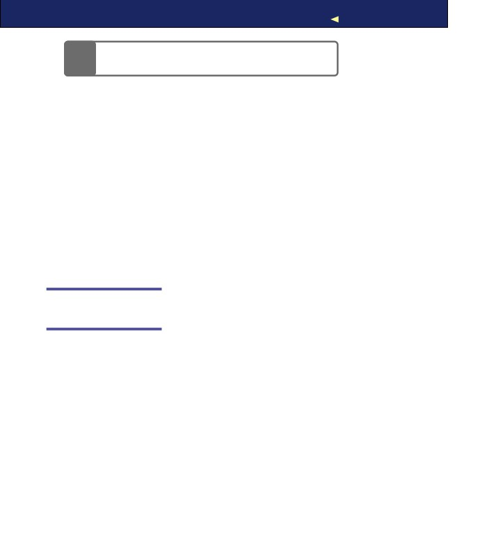
Download at Boykma.Com
CHANGETHE WORLD
160
38
Change the World
The worst thing anyone at work can ask about you is “What does he
(or she) do?” Having to ask this question means that they don’t know
what you’ve done.
It’s sad, but I don’t know what most of the people I’ve worked with
in big-company IT have done. People just don’t think that way. They
go to work, do their assigned thing, and go home. There’s no lasting
impact, other than the trail of code, documents, and e-mail they leave
behind them.
That’s what happens when you show up to work without a mission.
You just sit around waiting to be told what to do. And, when you do
what people tell you, the only people who know what you’ve done
afterward are the ones who asked you to do it. That’s fine if you want
to work in retail sales or maybe even if you want to be an offshore
programmer.
But if you want to be a software developer
Have a mission. Make
in a high-cost country, you need to come
sure people know it.
to work with a mission. You need to effect
change but not change within yourself or
your own work (that’s a given). You need to effect visible change
through your team, organization, or company.
The change can be small. You might be carrying the torch for unit test-
ing, driving test practices into the hearts of the unwashed masses of
your company’s programmer pool. Or, it might be something bigger,
like a radical new technology introduction that will lead to cheaper,
better systems made faster.
You do these things because you are internally driven to do them. You
can’t stand back and watch the people in your company do things
wrong. You know things could be better, and you have to change them.
Of course, if you’re out to change the world, you’re bound to make
some people angry. That’s OK as long as your intentions are right.
Don’t be a jerk about it, but don’t tiptoe around always playing it con-
servative either.
Download at Boykma.Com
CHANGETHE WORLD
161
If you do end up ticking a few people off, you can at least take comfort
in the fact that they won’t ever ask “What does he (or she) do?”
If you don’t know what your crusade is, you probably don’t have one.
If you’re not already actively trying to make your mark, you’re probably
not making it.
Act on It!
1. Catalog the crusades you’ve personally witnessed in the work-
place. Think of the people you’ve worked with who have behaved
as if on a mission. Think of the most driven and effective people in
the places where you’ve worked. What were their missions?
Can you think of any such missions that were inappropriate?
Where is the line between drive and zealotry? Have you seen peo-
ple cross it?
Download at Boykma.Com
LET YOUR VOICE BE HEARD
162
39
Let Your Voice Be Heard
The ideas we’ve explored so far have been fairly conservative and
focused on being recognized for the work you do in your workplace.
If you want to be noticed, move up, or even stay employed with your
current company, the topics we’ve touched on will be critical.
But, how boring!
The world is changing. If you want to write your ticket, you have to
think bigger than the IT workers of yesteryear. While moving from
level-23 programmer to level-24 programmer analyst might really be
your short-term career goal, as a programmer today, you need to think
beyond the next promotion or even your current place of employment.
Set your sights higher. Don’t think of yourself as a programmer at a
specific company—after all, it’s not likely that you’ll be at the same
place forever—but as a participating member of an industry. You
are a craftsperson or an artist. You have something to share beyond
the expense-reporting application you’re developing for your human
resources department or the bugs you’ve got stacked up in your com-
pany’s issue-tracking system.
Companies want to hire experts. While a résumé with a solid list of
projects is a good way to demonstrate experience, nothing is better at
a job interview than for the interviewer to have already heard of you.
It’s especially great if they’ve heard of you because they’ve read your
articles or books or they’ve seen you speak at a conference. Wouldn’t
you want to hire the person who “wrote the book” on the technology
or methodology you’re attempting to deploy?
In my previous life as a professional saxophonist, I played a lot in the
clubs in and around Memphis’s Beale Street. As I began to adapt to
the computer industry, I saw a lot of overlap between the way you
have to get your name out in music and in the computer industry. As
a musician trying to find work, the following properties were true:
• (This one’s the most important.) The best saxophonist doesn’t
always get the gig.
Download at Boykma.Com
LET YOUR VOICE BE HEARD
163
• Who you’ve played with is at least as important as how well you
play; musicians are cool by association.
• Sometimes, the better musicians are overlooked for work because
everyone assumes they won’t be available or because they are too
intimidated to ask.
• Music works via a network effect. If your social/music network
terminates before reaching someone, it’s not likely you’ll ever be
asked to perform with that person until an intermediary connec-
tion is made.
The computer industry is the same way. No objective system exists for
rating and employing software developers. Being good is important,
but it doesn’t get you all the way there. Our industry, like the music
industry, is a big, complex web of people connecting each other. The
more places you are attached to the network, the better your chances
of connecting with that perfect job or career break. Limiting yourself
to the company you work for places serious limits on the number of
connections you can form.
What better ways than publishing and public speaking are there for
your name to be propagated and your voice to be heard? So, how do
you go from Joe Schmoe programmer to published author and then to
public speaker? Start on the Web.
First, read weblogs. Learn about weblog syndication, and get yourself
set up with an aggregator. If you don’t know what to read, think of a
few of your favorite technical book authors and search the Web. You
will probably find that they have a weblog. Subscribe to their feed and
to the feeds of the people they link to. Over time, your list of feeds will
grow as you read and find links to the weblogs other people have been
writing.
Now open your own weblog. Many free services are available for host-
ing and driving a weblog. It’s dead simple to do. Start by writing about
(and linking to) the stories in your aggregator that you find interesting.
As you write and link, you’ll discover that the weblog universe is itself
a social network—a microcosm of the career network you are starting
to build. Your thoughts will eventually show up in the feed aggregators
of others like you, who will write about and spread the ideas you’ve
created.
Download at Boykma.Com
LET YOUR VOICE BE HEARD
164
The weblog is a training ground. Write on the Web as if you were writ-
ing a feature column for your favorite magazine. Practice the craft of
writing. Your skill will increase, and your confidence will grow.
Your writings on the Web will also provide work examples that you can
use in the next step. Now that you’re writing in your own forum, you
might as well take your writing to community websites, magazines, or
even books. With a portfolio of your writing ability available on the
Web, you’ll have plenty of example material to include in an article or
book proposal. Get yourself in print, and your network grows. More
writing leads to more writing opportunities. And all of these lead to
the opportunity to speak at conferences.
Just as we started easily with the Web in our writing endeavors, you
can start your speaking career in your local developer group meetings.
If you’re a .NET person, prepare a presentation for your local Microsoft
development group. If you’re a Linux programmer, do a talk at your
Linux users group. Practice makes perfect when it comes to speaking.
Be sure to put a lot of thought into preparing for these talks. Don’t take
them lightly. Though you’re speaking only to a small crowd in your
home city, this is where you live and work. A job really well done will
(eventually) not go unrewarded. You’ll find that if you give it the right
amount of attention locally, these small talks are no different from the
big ones at major industry conferences. Those are obviously the next
logical steps.
With all these ways to get your name and your voice out there, the
most critical tip of all is to start sooner than you think you’re ready.
Most people undersell themselves. You have something to teach. You
will never feel 100 percent ready, so you might as well start now.
Act on It!
1. If you don’t already have a weblog, create one right now. Go to
one of the many free weblog hosting sites, and set one up.
Now create a new text file on your computer. In it, create a list
of possible weblog topics. These are future articles you’re going
to write. Don’t limit yourself to epic ideas. Shoot for ideas you can
write about in ten to twenty minutes. Stop when the list is ten items
long (unless you’re inspired—keep going).
Download at Boykma.Com
LET YOUR VOICE BE HEARD
165
Save the file but leave it open. If you reboot, reopen the file. You
have three weeks. Each day, choose an item from the list and write
an article. Don’t think too hard about it. Just write it and publish
it. In the articles, link to other weblogs with related articles. As you
read the list to pick each day’s topic, feel free to add ideas to it.
After the three weeks are over, pick your two favorite articles and
submit them to user-moderated news sites such as Digg and Red-
dit. If you still have ideas on your list, keep writing.
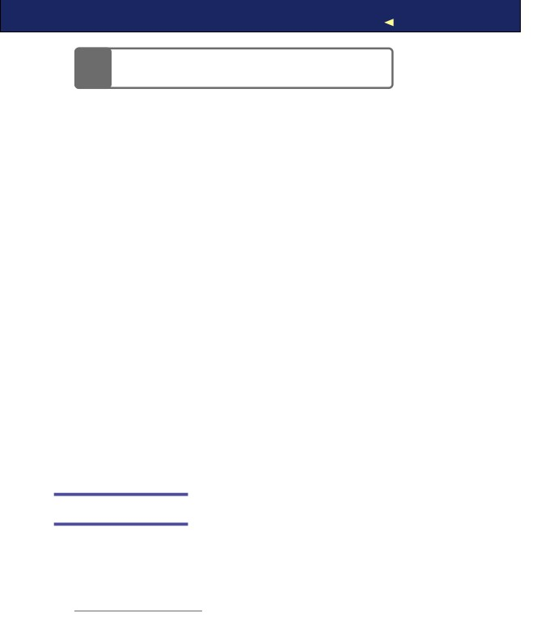
Download at Boykma.Com
BUILDYOUR BRAND
166
40
Build Your Brand
Brand building has two parts: actually making your mark so that peo-
ple will recognize it and then making sure that mark is associated with
positive traits. Recognition and respect.
Today, when we see a swastika, we think of Hitler and Nazi Germany.
From a brand-building perspective, that’s very good for the Nazis.
They accomplished the first half of brand building: awareness. But,
those of us who are mentally healthy have an extremely negative asso-
ciation with all things related to the Holocaust. So, the Nazis ultimately
failed miserably in the positive association department. In fact, Hitler
stole the swastika from the Hindus, perpetrating the crime that all com-
panies serious about their brands struggle to prevent. To the Hindus,
who lay original claim to the swastika (or swasti), it is an auspicious
symbol of well being. But, now throughout the West, this spiritual icon
has been defamed. Lots of recognition and little respect.
On the flip side is Charlie Wood.14 Charlie is an incredible singer, song-
writer, and Hammond B3 organ player in Memphis, Tennessee. He
plays five nights a week in a club on Beale Street. Everyone who knows
him or has heard him knows how amazing he is. They all look up to
him. He is as talented as you can get when it comes to rhythm and
blues music.
But relatively nobody knows who the hell he is. No recognition and
lots of respect.
What you want is both recognition and respect. Your name is your
brand.
This entire part of the book is all about how
Your name is your brand. to get both recognition and respect. Right
here in this paragraph, what you need to
understand is that the combination of the two is an asset worth build-
ing and guarding. Unlike a big, scared, corporate marketing depart-
ment suing college kids over websites that misappropriate a corporate
image or phrase, you don’t need to spend too much time guarding
Download at Boykma.Com
BUILDYOUR BRAND
167
your brand against other people. The most potentially destructive force
for Brand You is yourself.
Don’t water down what you stand for. Be careful where you let your
name show up. Don’t do lousy projects or send lousy e-mails to large
groups of people (or make lousy weblog posts for the whole Internet
to read). Don’t be a jerk. Nobody likes a jerk, even if they somehow
deserve to be a jerk.
Most important, remember that the things
you choose to do and associate yourself
Google never forgets.
with have a lasting impact on what your
name means to people. And, now that so many of our interactions
take place via the Internet on public forums, websites, and mailing
lists, a lot of our actions are public record and are cached, indexed,
and searchable—forever.
You might forget, but Google doesn’t.
Guard your brand with all your might. Protect it from yourself. It’s all
you’ve got.
Act on It!
1. Google yourself —Search Google for your full name in quotes. Look
through the first four pages of results (are there actually four pages
of results?). What could someone surmise about you following only
the links from the first four pages of Google results? Are you even
represented in the first four pages of search results for your name?
Is the picture that these first four pages paints a picture that you
appreciate?
Do the same search again, but this time pay special attention to
forum and mailing list conversations. Are you a jerk?
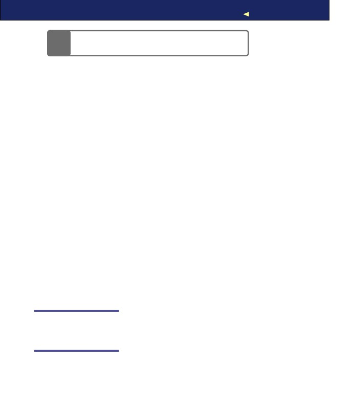
Download at Boykma.Com
RELEASEYOUR CODE
168
41
Release Your Code
Imagine how much easier it would be to find a job if there were compa-
nies already relying on software you had written. You could say, “Oh,
are you running Nifty++? I can help you with that—I wrote it.” That
would be different. Interviewers and hiring managers would remem-
ber you. That’s what you want.
Just a decade ago, while sounding like a wonderful idea, there
wouldn’t have been many opportunities for such a scenario to be
played out. You would have had to work for a commercial software
vendor first, and your credentials would have been tied to the products
you helped develop while working for that software vendor. But things
have changed. You don’t have to work for the Big Guys to develop
popular, name-brand software anymore.
Now there’s another outlet: open source. Open source software has hit
the mainstream. As IT shops start new projects, the age-old debate has
shifted from build vs. buy to build vs. buy vs. download. If not entire appli-
cations, frameworks ranging from small libraries to full-blown appli-
cation containers are being released under open source licenses and are
becoming de facto standards.
And the people who are developing this software, for the most part, are
people like you. They are people sitting in their homes in the evenings
and on the weekends, pounding out software as a labor of love. Sure,
there are some corporate-funded efforts creating or supporting open
source products. But, the majority of open source developments are
done by independent developers as a hobby.
Although many of these developers are
Anyone can use Rails.
just having fun and expressing themselves,
Few can say
some real incentives exist there. They are
moving their way up the social chain of a
Rails contributor.
community. They are building a name for
themselves. They are building a reputation in the industry. They may
not be doing it on purpose, but they are marketing themselves in the
process.
Download at Boykma.Com
RELEASEYOUR CODE
169
Aside from building a name for yourself, contributing to open source
software shows you are passionate about your field. Even if a company
hasn’t used or heard of your software, the fact that you’ve created and
released it is a differentiator in itself. Think about it this way; if you
were looking to hire someone as a software developer, would you pre-
fer to pick someone who puts in their nine-to-five day and then goes
home and watches TV? Or would you prefer someone who is so pas-
sionate about software development that they take it upon themselves
to do software development after-hours and on weekends?
Open source contributions demonstrate skill. If you’re making real code
and contributing to a real project, it’s a lot better on your résumé than
just saying you know a technology. Anyone can write Rails or Nant on
their résumé. Very few can write Rails contributor or Nant committer.
Leading an open source project can demonstrate much more than tech-
nical ability. It takes skills in leadership, release management, docu-
mentation, and product and community support to foster a commu-
nity around your efforts. And, if you do these things successfully—in
your spare time as a hobby—you’ll be amazingly different from most
of the other people competing for the same jobs. Most companies can’t
pay their developers to do all these things and do them well. Most can’t
even pay their developers to do some of them well. Showing that you
not only can do them but you care enough to do them for free shows
an incredible amount of initiative.
If you create something really useful, you might even end up being
famous. You could be famous in a small technical field—maybe famous
among Rails people, for example. Or if you’re lucky, you could be really
famous even outside the geek community like Linus Torvalds or...well,
like Linus. Even if you’re not quite famous, releasing your code will
definitely make you more famous. If fame means that lots of people
know who you are, then having one more person know about you
makes you more famous. And the open source community is a world-
wide network of people who, searching the Web for code, may come
across your software, install it, and use it. In doing so, they will come
to know about you, and as your software spreads, so will your name
and reputation. That’s what marketing is all about. That’s what you
want.
Download at Boykma.Com
RELEASEYOUR CODE
170
Act on It!
1. Stuart Halloway15
does a workshop at conferences he calls
“Refactotum.” If you get a chance to participate, I highly recom-
mend it, but the gist is as follows: Take a piece of open source
software with unit tests. Run the unit tests through a code cov-
erage analyzer. Find the least-tested part of the system and write
tests to improve the coverage of that code. Untested code is often
untestable code. Refactor to make the code more testable. Sub-
mit your change as a patch.
The beautiful thing about this is it’s measurable and can be done
quickly. There’s no excuse not to try it.
Download at Boykma.Com
REMARKABILITY
171
42
Remarkability
Traditional marketing curricula refer to the four p’s of marketing: prod-
uct, price, promotion, and placement. The idea is that if you cover all
four of these categories, you’ll have a complete marketing plan. Equal
weighting is put on each of the four categories.
But, what is the goal of marketing? Its purpose is to create a connection
between producers and consumers of a product or service. This link
starts with awareness about a product. The traditional mechanism of
building awareness is via promotions, including advertisements, mail-
ings, and educational seminars.
Recently the marketing world has turned its attention to what is called
viral—word of mouth—marketing. Viral marketing happens when an
idea is remarkable enough that consumers spread it from one person
to the next. It spreads like a virus, with each new infected consumer
potentially infecting many others.
Viral marketing is preferred not simply because it’s expensive to send
out paper mailing and buy television ad space. It’s preferred because
consumers trust their friends more than they trust television commer-
cials and junk mail. They are more likely to buy something they hear
about from a colleague at work than something on a pamphlet they dig
out from the middle of their Sunday newspaper.
In his book Purple Cow [God03], master marketer Seth Godin makes
the somewhat obvious assertion that the best way to get a consumer
to remark on a product is to make your product remarkable. Godin
goes so far as to say that the traditional four p’s are obsolete and that
consumers have become numb to the old spray-and-pray strategies of
mass marketing. The only way to stand out in the crowd, he says, is
truly to be outstanding.
So, here’s where the cynical readers start to applaud. All the marketing
mumbo jumbo you might try is nothing compared to the power of a
remarkable set of capabilities. Before you start saying “I told you so,”
we should probably talk about the definition of remarkable.
Remarkable definitely doesn’t mean the same thing as good. Usually,
products that are remarkable are good. But, products that are good are
Download at Boykma.Com
REMARKABILITY
172
seldom remarkable. To be remarkable means that something is worthy
of attention. You will not become a remarkable software developer by
simply being better than all the other software developers you know.
Being incrementally better than someone else isn’t striking enough to
result in the viral spread of your reputation. If someone were to ask,
you might have a glowing report card, but remarkability means that
people talk about you before they are asked.
To be remarkable, you have to be significantly different from those
around you. Many of the self-marketing strategies discussed in this
chapter are geared toward remarkability. Releasing successful open
source software, writing books and articles, and speaking at confer-
ences may all increase your remarkability.
If you look back at that last sentence,
Demo or die!
though not an exhaustive list, you’ll notice
that each of the items I’ve included as being
potentially remarkable involve doing something. You might be the
smartest or the fastest, but just being isn’t good enough. You have to
be doing.
Godin uses the phrase purple cow to remind us of what it takes to be
remarkable. Not best cow or most milk-giving cow or prettiest cow. A pur-
ple cow would stand out in a crowd of best, most milk-giving, and
prettiest cows. It would be the purple one that you would talk about if
you saw that group.
What can you do that would make you and your accomplishments
like the purple cow? Don’t just master a subject—write the book on it.
Write code generators that take what used to be a one-week process
to a five-minute process. Instead of being respected among your co-
workers, become your city’s most recognized authority on whatever
technologies you’re focusing on by doing seminars and workshops.
Do something previously unthinkable on your next project.
Don’t let yourself just be the best in the bunch. Be the person and do
the things that people can’t not talk about.
Act on It!
1. Start small, but try to do something remarkable on your current
project or job. One way to experiment is to shoot for remarkable
Download at Boykma.Com
REMARKABILITY
173
productivity. Project schedules often have a lot of padding. Find
something that everyone thinks is going to take a week and do
it in a day. Work extra hours for it if you need to do so. You don’t
have to make a habit of working extra hours, but this is an experi-
ment. Do the work in a remarkably short time. See whether people
“remark.” If not, why not? If so, in what ways? Fine-tune the vari-
ables, and try again.
Download at Boykma.Com
MAKING THE HANG
174
43
Making the Hang
When I was a young jazz saxophonist in Arkansas, people often asked
me, “Oh, do you know Chris?” I didn’t. Chris was apparently the
other high-school teenager in Arkansas who was a serious aspiring jazz
musician. So, when people met me, they would make the obvious con-
nection, expecting us to be comrades in our very un-high-schoolish
jazziness.
One summer, I had the opportunity to see the Count Basie Jazz Orches-
tra perform an outdoor concert at an amphitheater on the bank of
the Arkansas River. Through some combination of good mood and
uncharacteristic courage, I ended up backstage chatting with the musi-
cians before they went on. I’ve never been a very chatty person, so this
was a real twist of fate. I stood in the back talking to one of the sax-
ophonists from the orchestra, and another young kid walked up and
started chatting. After five or ten minutes, the band started, leaving
the two of us standing unattended. “Are you Chris/Chad?” we said
simultaneously.
In the years to come, I would spend a lot of my free time with Chris.
Chris, I soon learned, had a strange knack for associating himself with
the town’s best musicians. He was just a high-school kid. But, he was
already playing gigs, substituting for Little Rock’s most respected jazz
pianists. Chris was pretty good—especially for his age—but he wasn’t
that good.
It didn’t take me long to understand what was happening. We went
out, several nights per week sometimes, to clubs where jazz music was
being performed. It was always a somewhat uncomfortable experience
for introverted me, because like clockwork, when the band we were
watching took a set break, Chris would break mid-sentence and just
walk away from me to go talk to the band members. He was like a
robot. I have to admit, it was a little sickening to watch him. He was
so predictable. Wasn’t he annoying these poor musicians? They were
taking a break, for God’s sake. They didn’t want to talk to this damned
kid! Being left hanging, I had to either follow him or sit awkwardly by
myself waiting. Occasionally, on the days when I just didn’t have the
energy, I chose the latter. However, for the most part I would follow
Chris and try to pretend I was fitting in.
Download at Boykma.Com
MAKING THE HANG
175
Usually, much to my surprise, the musicians on break actually seemed
to enjoy talking to Chris—and even to me. He was pushy as hell and
would always ask if he could sit in with the band, no matter how
inappropriate it seemed to me. He would also ask the musicians for
lessons, which meant that he would go to their houses, listen to music,
and chat about jazz improvisation with them. I would occasionally be
dragged along, with the same feeling I had on the set breaks—that I
was imposing.
But, I was obviously the one who was confused about this relationship
that Chris was developing with these musicians. He was getting real,
paying gigs with really good musicians. I was just some guy who hung
around with him. He was my conduit to the city’s best musicians. The
only difference between us being that he was more outgoing.
Over the years, Chris’s “be the worst” strategy coupled with the ability
to unabashedly force himself on people, led him to become an incredi-
ble pianist. In fact, he squeezed his way into playing with some really
famous jazz musicians. I, on the other hand, was still the guy he knew.
He pulled me into some of these more high-profile gigs, but it was
always him doing the pulling—not the other way around.
Since then, I’ve seen the same pattern in people I’ve met in classical
music, the American Tibetan Buddhist community, software develop-
ment, and even the confines of a single office. Chris called it “making
the hang,” which made it even more repulsive to me. But, the short
story is this: the really good people won’t mind if you want to know
them. People like to be appreciated, and they like to talk about the top-
ics they are passionate about. The fact that they are the professional
or the guru or the leader or the renowned author doesn’t change that
they’re human and like to interact with other humans.
Speaking for myself
(and extrapolating
from there), the most serious barrier
Fear gets between us
between us mortals and the people we
and the pros.
admire is our own fear. Associating with
smart, well-connected people who can teach you things or help find
you work is possibly the best way to improve yourself, but a lot of us
are afraid to try. Being part of a tight-knit professional community is
how musicians, artists, and other craftspeople have stayed strong and
Download at Boykma.Com
MAKING THE HANG
176
evolved their respective artforms for years. The gurus are the supern-
odes in the social and professional network. All it takes to make the
connection is a little less humility.
Of course, you don’t want to just randomly start babbling at these peo-
ple. You’ll obviously want to seek out the ones with which you have
something in common. Perhaps you read an article that someone wrote
that was influential. You could show them work you’ve done as a result
and get their input. Or, maybe you’ve created a software interface to
a system that someone created. That’s a great and legitimate way to
make the connection with someone.
Of course, you can make the hang online as well as in person. A lasting
connection is a lasting connection. The heroes of the software world
are globally distributed. The same is true in the music industry, though
you can’t take for granted that all musicians are connectable via e-mail.
So, the music world tends to form local professional clumps, whereas
software developers have the advantage of being able to easily reach
each other no matter where we may be. This makes it easy to not only
reach out to the gurus in your own city but to reach out to the gurus,
period. Some of the most influential minds in software development
are readily accessible via e-mail or even real-time chat.
The story that leads to me writing this book actually started with an e-
mail about a Ruby library to one of its publishers followed by many
conversations via online chat. Though I was timid about sending that
original e-mail, apparently it didn’t annoy Dave too much, and here
you are reading my words. Thanks, Chris.
Act on It!
1. Pick one of your favorite pieces of software and e-mail its creator.
Start by thanking him or her for the software. Then make a sugges-
tion, ask a question, or make some other attempt at establishing
a human connection with them. Solicit a response of some sort. If
the software is free or open source, offer to help in some way.
2. Think of someone local to you whom you admire or would like
to learn from. Look for a situation where you can see the per-
son (a users’ group meeting or speech are good possibilities), and
go out of your way to start a conversation, even if it makes you
uncomfortable—especially if it makes you uncomfortable.
Download at Boykma.Com
MAKING THE HANG
177
Can’t We Just
by Stephen Akers
Anyone who has spent much time in the workplace
knows that there is an ongoing struggle between infor-
mation technology (IT) and the business (those not in
IT). The root of this contention is almost always misunder-
standing, miscommunication, and mismanaged expec-
tations. These issues are underscored on an almost daily
basis by the various canned phrases both groups use.
For IT, the most hated of these phrases is “Can’t we
just
” It usually goes something like this: Can’t we just
outsource this work? Can’t we just add more develop-
ers to the project? Can’t we just do what we did last
time? Can’t we just make the application faster? Can’t
we just create a new database?
The problem is when many people in IT hear this phrase
they focus on the word just. It makes them feel as if
the business considers their request to be obvious, triv-
ial, and easily accomplished. Any failure to implement
would therefore indicate that IT was incapable of com-
pleting the simplest of tasks and should probably be
replaced.
As a result, a common response to these requests is
often “no.” IT wants to make sure the business realizes
their proposal is not only complex and difficult to exe-
cute but is in fact a bad idea. Herein lies the strug-
gle. Ultimately what happens is the business walks away
feeling like IT always says no, while IT develops the
impression that the business has no clue what it’s doing.
That’s exactly what I used to think. In my opinion, what
the business really needed was someone on their team
who knew what they were doing. That’s why at one
point in my career I decided to leave IT to go and join
the business. I fully expected all my projects to be rag-
ing successes because I understand how to do things
the right way.
It’s funny how our plans don’t always turn out the way
we expect them to turn out. Although I did achieve suc-
cess on the business team, it wasn’t the kind of slam
dunk I was looking forward to experiencing.
Download at Boykma.Com
MAKING THE HANG
178
Can’t We Just
(continued)
Instead, I found out that I had a lot to learn myself. For
example:
1. There are real commercial factors that act as con-
straints on nearly every project. These constraints
will sometimes require you to implement the less
than perfect technical solution.
2. Timelines proposed by the business are often not
as arbitrary as they seem. Many times the delivery
date of a solution can have a rippling effect on the
success of the project or even on the company’s
performance.
Once I learned these lessons, I realized that IT has been
focusing on the wrong part of “Can’t we just
” The
operative word in the phrase is actually we. This word
implies that the business is reaching out to IT as a critical
part of their team. They are reaching out to IT for help in
putting together a solution that will result in success for
the company.
So, the next time you hear that dreaded phrase, fight
the urge to say “no.” Focus on the word we and con-
fidently say,
“Yes, we can add more developers to
the project, but that wouldn’t be a good idea, and
here’s why
” But don’t stop there. It isn’t enough just
to explain your position. You need to dig deeper to find
out what commercial constraints the business is operat-
ing under. Over time this will build up your knowledge of
the business domain and give you a better apprecia-
tion for the problems that need to be solved. Combin-
ing this understanding with your technical expertise will
transform you from an enabler who always says “no” to
a partner who the business can’t live without.
Stephen Akers is vice president of information technol-
ogy at Genscape, Inc.
Download at Boykma.Com
Part V
Maintaining Your Edge
Download at Boykma.Com
MAINTAINING YOUR EDGE
180
Do you remember a pop star named Tiffany (no last name) from the
1980s? She was in the top of the Top Forty and a constant sound on the
radio back then. She enjoyed immense success, becoming for a short
time a household name.
When was the last time (if ever) you heard anything about her? My guess
is that you can’t remember. I can’t.
Tiffany had what it took to be a hit in the 80s—at least for a short time.
Then the 90s came along, and Tiffany was way out of style. Apparently,
if she tried, she didn’t move fast enough to hold the affection—or even
the attention—of her fans. When the tastes of the nation turned from
bubble gum to grunge, Tiffany suddenly became obsolete.
The same thing can happen to you in your career. The process in this
book is a loop that repeats until you retire. Research, invest, execute,
market, repeat. Spending too much time inside any iteration of the loop
puts you at risk of becoming suddenly obsolete.
It can creep up on you if you’re not explicitly watching for it. And when
it catches you off guard, it’s too late. Tiffany probably had no idea the
grunge thing was going to take off. She was putting all of her efforts into
being a teenage, bubble-gum pop star, and by the time grunge music
took over the Top Forty, she was irreversibly out of style.
This part will show you how to avoid becoming a one-hit wonder.
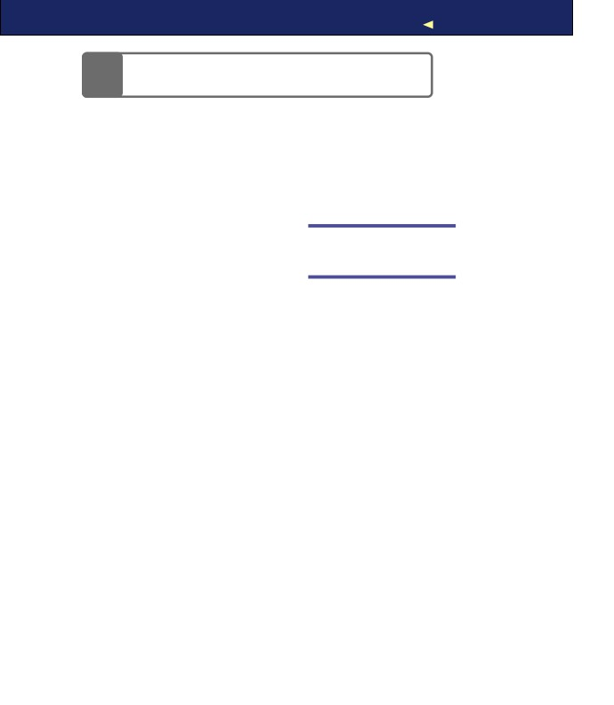
Download at Boykma.Com
ALREADYOBSOLETE
181
44
Already Obsolete
Many of us are drawn to the IT industry because things are always
changing. It’s an exciting and fresh work environment. There’s always
something new to learn. On the flip side, though, is the dishearten-
ing fact that our hard-earned investments in technology-related knowl-
edge depreciate faster than a new Chevy. Today’s hot new item is to-
morrow’s obsolete junk with a limited shelf life.
In Leading the Revolution
[Ham02], Gary
Hamel talks about how the incumbent
Your shiny new skills are
industry leaders in any given industry
already obsolete.
become complacent and, through their
complacency, develop blind spots. The more successful your business,
the more likely you are to grow comfortable with your business model,
making you incredibly vulnerable to those who come along behind
you with a radical idea—even a stupid one—that might make your
wonderful, winning business model look like an old, worn-out sweater
at a disco. The same can be said of technology choices. If you’ve mas-
tered the Big One of any given time period, such as J2EE or .NET at
the time this book was published, you may feel extremely comfortable.
It’s the profitable place to be, right? Every job website and newspaper
classified section serves as an affirmation of your decision.
Beware. Success breeds hubris, which breeds complacency. A wave like
J2EE might feel like it will never end. But, all waves either dissipate or
meet the shore eventually. Too much comfort for too long might leave
you defenseless, wondering what you’d do in a non-J2EE world.
That being said, folks have been pronouncing COBOL’s death for
decades. Every new incumbent is called “the COBOL of the 21st cen-
tury,” or some variation thereof. These days, the label is applied to
Java. As much as I hate to touch, see, or be near COBOL code, to call
Java the COBOL of the 21st century is quite a compliment. As much
as some of us would love to see it go away, COBOL is here, and it has
been working for a long time. COBOL programmers have been work-
ing with COBOL for an entire career. That’s really saying something in
this roller coaster of an industry. It’s hard to say whether the same kind
of investment would work in today’s economy.
Download at Boykma.Com
ALREADYOBSOLETE
182
COBOL’s story is the exception—not the rule. Few technologies pro-
vide such a lasting platform for employment. The message here isn’t to
run out and shed yourself of your mainstream knowledge. That would
be irresponsible. I will say that the more mainstream your knowledge,
the greater risk you have of being left in the technology stone age.
We’ve all heard the extrapolations of Moore’s law that say that com-
puting power doubles every eighteen months. Whether the numbers
are exactly correct, it’s easy to see that technology is still advancing at
roughly the same rate as it was in 1965 when Intel’s Gordon Moore
made this assertion. And, with these advances in hardware horse-
power come advances in what is possible to do with software.
Computing power doubles. With technology progressing so quickly,
there is too much happening for any given person to keep up. Even
if your skills are completely current, if you’re not almost through the
process of learning the Next Big Thing, it’s almost too late. You can be
ahead of the curve on the current wave and behind on the next. Timing
becomes very important in an environment like this.
You have to start by realizing that even if you’re on the bleeding edge of
today’s wave, you’re already probably behind on the next one. Timing
being everything, start thinking ahead with your study. What will be
possible in two years that isn’t possible now? What if disk space were
so cheap it was practically free? What if processors were two times
faster? What would we not have to worry about optimizing for? How
might these advances change what’s going to hit?
Yes, it’s a bit of a gamble. But, it’s a game that you will definitely lose if
you don’t play. The worst case is that you’ve learned something enrich-
ing that isn’t directly applicable to your job in two years. So, you’re still
better off looking ahead and taking a gamble like this. The best case is
that you remain ahead of the curve and can continue to be an expert in
leading-edge technologies.
Looking ahead and being explicit about your skill development can
mean the difference between being blind or visionary.
Act on It!
1. Carve out weekly time to investigate the bleeding edge. Make
room for at least two hours each week in order to research new
Download at Boykma.Com
ALREADYOBSOLETE
183
technologies and to start to develop skills in them. Do hands-on
work with these new technologies. Build simple applications.
Prototype new-tech versions of the hard bits of your current-tech
projects to understand what the differences are and what the
new technologies enable. Put this time on your schedule. Don’t
let yourself miss it.
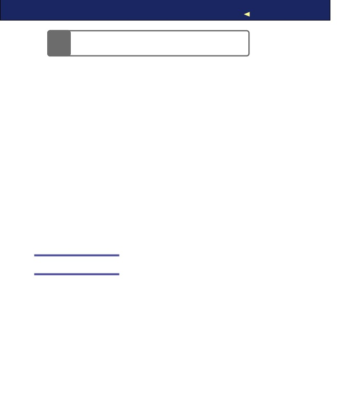
Download at Boykma.Com
YOU’VE ALREADYLOST YOUR JOB
184
45
You’ve Already Lost Your Job
The job you were hired to do no longer exists. You might still be draw-
ing a paycheck. You might be adding value. You might even be making
your employer ecstatically happy. But, you’ve already lost your job.
The one certain thing is that everything is changing. The economy is
shifting. Jobs are moving offshore and back on. Businesses are trying to
figure out how to adapt. Things have not reached a steady point in our
industry. Our industry is like the awkward adolescent going through
puberty. Awkward, ugly, and different year after year—day after day.
So, if you were hired to be a programmer, don’t think of yourself as a
programmer. Think of yourself as maybe not a programmer anymore.
Keep doing your job, but don’t get too comfortable. Don’t try to settle
into the identity of a programmer. Or a designer. Or a tester.
In fact, it’s no longer safe (as if it ever were) to identify yourself too
closely with the job you were hired to do. If your surroundings are
changing and the context of your work is constantly moving, clinging
to your job creates an unhealthy dissonance that infects your work.
You may find yourself as the would-be programmer doing the job of a
should-be project manager. And doing it poorly.
Back before you lost your job, you might
You are not your job.
have had plans. You might have imagined
your progression through the company’s
ranks. You would do your time as a designer and take the architect role
when your just reward was due. You could see the entire progression
from architect to analyst to team leader up the management chain.
But, you’ve already lost your job, and your plans have changed.
They’re going to keep changing. Every day. It’s good to have ambi-
tion, but don’t buy too heavily into a long, imagined future. You can’t
afford to have tunnel vision with something too far off in the future. If
you want to hit a moving target, you don’t aim for the target itself. You
aim for where the target is likely to go. The path from here to there is no
longer a straight line. It’s an arc at best but most probably a squiggle.
Download at Boykma.Com
YOU’VE ALREADYLOST YOUR JOB
185
Act on It!
1. If you’re a programmer, try a day or two of doing your job as if
you were a tester or a project manager. What are the many roles
that you might play from day to day that you have never explicitly
considered? Make a list, and try them on for size. Spend a day on
each. You might not even change your actual work output, but
you’ll see your work differently.
Download at Boykma.Com
PATH WITH NO DESTINATION
186
46
Path with No Destination
One of America’s biggest problems is that it is a goal-oriented society.
We’re a nation of people who are always focused on the outcome of a
process, whether it is the process of learning, one’s career, or even a
drive in the car. We’re so centered on the outcome that we forget to
look at the scenery.
If you think about it, the focus on outcomes is logically the reverse of
what we should be spending our time on. You typically spend all your
time doing things and little of your time actually reaching goals. For
example, when you’re developing software, the development process
is where you spend all your time, not on the actual event of the finished
software popping out of the end of the process.
This is true of your career as well. The real meat of your career is not
the promotions and salary advances. It’s the time you spend working
toward those advances. Or, more important, it’s the time you spend
working regardless of the advances.
If this is the core of your work life—the actual work—then you’ve
already arrived at your destination. The goal-oriented, destination-
focused thinking that you usually do leads only from one goal to the
next. It has no logical end. What most of us fail to realize is that the path
is the end.
Returning to the software development example, it’s easy to get
wrapped up in the delivery of the code you are creating. Your customer
needs a web application up, and you focus on finishing that applica-
tion. But, a living application is never “done.” One release leads to the
next. Too much focus on the end product distracts us from the real
deliverable: the sustainable development of a new entity.
Focusing on the ending makes you forget
Focus on doing, not on to make the process good. And, bad pro-
being done.
cesses create bad products. The product
might meet its minimum requirements, but
its insides will be ugly. You’ve optimized for the short-term end goal—
not for the inevitable, ongoing future of the product’s development.
Download at Boykma.Com
PATH WITH NO DESTINATION
187
Not only do bad processes make bad products, but bad products make
bad processes. Once you have one of these products that is messy
inside, your processes adapt around it. Your product’s broken windows
lead to broken windows in your process. It’s a vicious cycle.
So, instead of constantly asking “Are we there yet? Are we there yet?”
realize that the only healthy answer is “yes.” It’s how you traverse the
path that’s important—not the destination.
Act on It!
1. In his book The Miracle of Mindfulness [Han99], Thich Naht Hanh
presents a suggestion: the next time you have to wash the dishes,
don’t wash them to get them done. Try to enjoy the experience
of washing the dishes. Don’t focus on finishing them. Focus on the
act of washing them itself.
Doing the dishes is a mundane task that almost nobody savors.
Software developers have a lot of similar drudgery to get through
in the average day, such as time tracking and expense report-
ing, for example. The next time you have to do a task like this,
see whether you can find a way to focus on the task as you do it
instead of anxiously rushing to finish it.
Download at Boykma.Com
MAKE YOURSELFA MAP
188
47
Make Yourself a Map
When you’re in maintenance mode, it’s easy to snap into a groove and
just keep on being like you are. As a software developer, you know
this is true from your experience with systems. If you maintain an
application or a library that other developers use, it will sit stagnant
in bug-fix mode (or worse) unless you have a solid feature road map.
You might make the occasional enhancement because of user requests
or your own needs, but the code will usually reach a steady state and
change at an exponentially slower rate because you consider it done.
But a living application is never done unless it’s on the road to retire-
ment. The same is true of you and your career. Unless you’re looking
to exit the industry, you need a road map. If Microsoft had consid-
ered Windows 3.1 done, we’d all be using Macintoshes right now. If
the Apache developers had considered their web server done when
they reached 1.0, they might not be overwhelmingly leading the mar-
ket right now.
Your personal product road map is what you use to tell whether you’ve
moved. When you’re going to the same office day in and day out,
working on a lot of the same things, the scenery around you doesn’t
change. You need to throw out some markers that you can see in the
distance, so you’ll know that you’ve actually moved when you get to
them. Your product “features” are these markers.
Unless you really lay it out and make a plan, you won’t be able to see
beyond the next blip on the horizon. In Chapters 2 and 3, you discov-
ered how to be intentional about your choice of career path and how
to invest in our professional selves. Though I focused on what seemed
like a one-time choice of what to invest in, each choice should be part of
a greater whole. Thinking of each new set of knowledge or capability as
equivalent to a single feature in an application puts it in context really
well. An application with one feature isn’t much of an application.
What’s more, an application with a bunch of features that aren’t cohe-
sive is going to confuse its users. Is this an address book or a chat appli-
cation? Is it a game or a web browser? A personal product road map not
only can help you stay on track, constantly evolving, but it can also
Download at Boykma.Com
MAKE YOURSELFA MAP
189
show you the bigger picture of what you have to offer. It can show you
that no single feature stands alone. Each new investment is part of a
larger whole. Some work fabulously well together. Others require too
much of a mental leap for potential employers. Is he a system administra-
tor or a graphic designer? Is she an application architect or a QA automation
guru?
Although it’s definitely OK to learn diverse skills—it expands your
thinking—it’s also a good idea to think about the story your skillset
tells. Without a road map, your story might look more like a Jack Ker-
ouac novel than a cohesive set of logically related capabilities. Without
a road map, you might even actually get lost.
Act on It!
1. Before mapping out where you want to go, it can be encourag-
ing and informative to map out where you’ve been. Take some
time to explicitly lay out the timeline of your career. Show where
you started and what your skills and jobs were at each step.
Notice where you made incremental improvements and where
you seemed to make big leaps. Notice the average length of time
it took to make a major advancement. Use this map as input as
you look forward in your career. You can set more realistic goals
for yourself if you have a clear image of your historical progress.
Once you’ve created this historical map, keep it updated. It’s a
great way to reflect on your progress as you move toward your
newly defined goals.
Download at Boykma.Com
WATCH THE MARKET
190
48
Watch the Market
You’d be a fool to invest your money in a volatile stock and then
ignore it. Even if you’ve done a great deal of research and made an
intentional choice about what to invest in, the market is uncertain.
You can’t just fire-and-forget when it comes to investments. Even if a
stock’s value is increasing now, that doesn’t mean it isn’t going to start
tanking tomorrow.
You might also be missing an opportunity. You may find a really safe
bet, yielding a 10 percent annual return. That sounds like a pretty good
deal as long as the rest of the market isn’t suddenly doing much better
than 10 percent. Your workhorse investment of today, even if it contin-
ues to perform, may not be very impressive compared to what’s possi-
ble tomorrow.
As the conditions of the market change, not paying attention could
result in money lost or money that could have been earned missed.
The same holds true for your knowledge investments. Java is the con-
servative choice of today. What might change to make that not true
anymore? How might you know if it changed?
What if, for example, Sun Microsystems started showing signs of going
under? Sun has lost its position of dominance over recent years, and
Java isn’t an open standard. Though now open source, it is dictated
and developed by Sun. At any point, a dying Sun might attempt to
suddenly make its language and virtual machine into a last-minute
profit center. It might fragment the Java language with incompatible
changes, causing an industry-wide panic.
With your head in your monitor coding, you might not even hear about
something like this until it was too late. You might find yourself on
the job market with a suddenly less valuable skill. This is an unlikely
hypothetical situation, but something like this could happen.
Even more likely is that, comfortable in your current job with your cur-
rent set of skills, you might remain blissfully ignorant of the Next Big
Thing as it rolls in. Ten years ago, you would have been surprised to
find out just how big object-oriented languages with garbage collection
Download at Boykma.Com
WATCH THE MARKET
191
would become. But, there were definitely signs if you were watching.
Ten years from now, who knows what the Next Big Thing will be?
You have to keep your eyes and ears open. Watch the technology news,
both the business side and the purely technical side, for developments
that might cause a ripple. As Tim O’Reilly16 of O’Reilly and Associates
says, watch the alpha geeks. Alpha geeks are those supernerds who are
always on the bloodiest tip of the bleeding edge, at least in their hobby
activities. Tim’s assertion, which I have since observed in the wild, is
that if you can find these people and see what they’re into, you can get
a glimpse of what’s going to be big one or two years down the road.
It’s uncanny how well this works.
However you choose to do it, you need
to be aware that in the technology sector,
Watch the alpha geeks.
what’s a good investment today will even-
tually not be a good investment. And, in case you pay attention to the
mood of the market, it might catch you by surprise. You don’t want
this kind of surprise.
Act on It!
1. Spend the next year trying to become one of the alpha geeks. Or
at least make the hang with one.
Download at Boykma.Com
THAT FAT MAN IN THE MIRROR
192
49
That Fat Man in the Mirror
I am, unfortunately, overweight. I have been for a long time. While
living in India, though, I lost a lot of weight. Part of it was because of
diet. Part of it was because of exercise. But, mostly it was from getting
sick. After I came back to the United States, I slowly gained the weight
back. It was a disappointing thing, which I reacted to by signing up for
a gym and a fitness instructor. The weight started coming back off.
I’ve gone through several such fluctuations. What’s fascinating about
them is that I can’t really tell when I’m gaining or losing weight. The
only way I know is if someone tells me or my clothes suddenly stop
fitting the same. My wife sees me every day, so she can’t tell either,
and, in the United States, people generally don’t mention it when you
gain weight. In India, they do.
I can’t tell, because I see me too often. If you’re constantly exposed to
something, it’s hard to see it changing unless change happens rapidly.
If you sit and watch a flower bloom, it will take a long time to notice
that anything has happened. However, if you leave and come back in
two days, you’ll see something very noticeably different from when
you left.
You’ll notice the same phenomenon with your career. Actually, you
won’t notice it. That’s the problem. You might look at yourself in the
metaphorical mirror each day and not see an ounce of change. You
seem as well adjusted as before. You seem as competitive as before.
Your skills seem to be as up-to-date as before.
Then, suddenly, one day your job (or your industry) doesn’t fit you
anymore. It’s just uncomfortable at first, but you’ve already reached a
critical point at which you have to either act quickly or go buy a new
pair of (metaphorical) pants.
When it comes to fluctuations in body weight, you have a scale, so
it’s fairly easy to measure your progress (or lack thereof, in my case).
There is unfortunately no such scale for measuring your marketability
or your skill as a software developer. If there were, we could sit you
on a scale and autogenerate your paychecks. Since we don’t have that
scale, you’ll have to develop your own.
Download at Boykma.Com
THAT FAT MAN IN THE MIRROR
193
An easy way to measure your progress is to use a trusted third party.
A mentor or a close colleague doesn’t live in your head with you and
can help give you a more objective look at where you stand. You might
discuss your abilities as a software developer, project leader, communi-
cator, team member, or any other facet of the total package that makes
you who you are. At GE, there is a process called a 360-degree review,
which formalizes this idea and encourages employees to seek feedback
from peers, managers, and internal customers. Despite the corporate
doublespeak nature of its name, the process is a great way to get a
number of different perspectives of yourself as an employee.
The most important thing to ferret out as
you go through a process like this (either
Developer, review
alone or with help) is where your blind
thyself.
spots are. You don’t have to fix all of them.
You just have to know where they are. Without being explicit about it,
you’ll be blind to your blind spots. That’s when the bad things happen
and take you by surprise. Bad things will happen, so it’s best to know
they’re coming.
Even if you had a magic value scale that you could weigh yourself on,
it would do you no good unless you used it. Schedule your reviews.
You won’t reflect unless you make the reflection time explicit. Saying
“Don’t forget to ask for feedback” isn’t a strong enough message. If you
have a calendar program that pops up reminders, make appointments
for yourself for self-evaluation. First determine your measurement sys-
tem, and then put it on the schedule. If it’s not a built-in part of your
work life, you won’t do it.
If your company has such processes in place already, don’t write them
off as HR nonsense. Take them seriously, and make good come out of
them. They may be implemented poorly where you work, but the moti-
vation (at least what used to be the motivation) for them is right on.
Finally, when you have your system in place and you have scheduled
time to make sure it gets fit in, capture the results in writing. Keep your
evaluation somewhere handy. Review and revise it often. Tying the
self-evaluation process to a physical artifact will make it concrete.
Don’t let obsolescence creep up on you like a pair of tight-fitting pants.
Download at Boykma.Com
THAT FAT MAN IN THE MIRROR
194
Act on It!
1.
Do a 360 review:
• Make a list of trusted people who you feel comfortable ask-
ing for feedback. The list should preferably contain represen-
tatives from your peers, customers, and managers (and sub-
ordinates if you have any).
• Make another list of about ten characteristics you believe are
important measurements of you as a professional.
• Convert this list to a questionnaire. On the questionnaire, ask
for participants to rate you in terms of each characteristic.
Also include the question “What should I have asked?”
• Distribute the questionnaire to the list of people from the first
step. Ask that your reviewers be constructively critical. What
you need is honest feedback—not sugarcoating.
When you get the completed answers back, read through all of
them, and compile a list of actions you are going to take as a
result. If you’ve asked the right questions of the right people, you
are going to get some actionable items. Share the outcome of
your questionnaire with your reviewers—not the answers but the
resultant changes you plan to make. Be sure to thank them.
Repeat this process occasionally.
2.
Start keeping a journal. It could be a weblog, as we discussed in
Let Your Voice Be Heard, on page 162, or a personal diary. Write
about what you’re working on, what you’re learning, and your
opinions about the industry.
After you’ve been keeping the journal for some time, reread old
entries. Do you still agree? Do they sound naive? How much have
you changed?
Download at Boykma.Com
THE SOUTH INDIAN MONKEY TRAP
195
50
The South Indian Monkey
Trap
In Zen and the Art of Motorcycle Maintenance [Pir00], Robert Pirsig tells
an enlightening story about how people in South India used to catch
monkeys. I don’t know whether it’s true, but it teaches a useful lesson,
so I’ll paraphrase it.
The people of South India, having been pestered by monkeys over the
years, developed an ingenious way of trapping them. They would dig
a long, narrow hole in the ground and then use an equally long, slen-
der object to widen the bottom of the hole. Then they would pour rice
down into the wider portion at the bottom of the hole.
Monkeys like to eat. In fact, that’s a large part of what makes them such
pests. They’ll jump onto cars or risk running through large groups of
people to snatch food right out of your hand. People in South India
are painfully aware of this. (Believe me, it’s surprisingly unsettling to
be standing serenely in a park and have a macaque come suddenly
barreling through to snatch something from you.)
So, according to Pirsig, the monkeys would come along, discover the
rice, and stretch their arms deep into the hole. Their hands would be at
the bottom. They would greedily clutch as much of the rice as possible
into their hands, making a fist in the process. Their fists would fit into
the larger portion of the hole, but the rest of the narrow opening was
too small for the monkeys to pull their fists through. They’d be stuck.
Of course, they could just let go of the food, and they’d be free.
But, monkeys place a high value on food. In fact, they place such a high
value on food that they cannot force themselves to let go of it. They’ll
grip that rice until either it comes out of the ground or they die trying
to pull it out. It was typically the latter that happened first.
Pirisig tells this story to illustrate a concept he calls value rigidity. Value
rigidity is what happens when you believe in the value of something
so strongly that you can no longer objectively question it. The monkeys
valued the rice so highly that when forced to make the choice between
the rice and captivity or death, they couldn’t see that losing the rice was
Download at Boykma.Com
THE SOUTH INDIAN MONKEY TRAP
196
the right thing to do at the time. The story makes the monkeys seem
really stupid, but most of us have our own equivalents to the rice.
If you were asked whether it was a good idea to help feed starving chil-
dren in developing countries, you would probably say “yes” without
even thinking about it. If someone tried to argue the point with you,
you might think they were crazy. This is an example of value rigidity.
You believe in this one thing so strongly that you can’t imagine not
believing it. Clearly, not all values that we hold rigidly are bad. For
most people, religion (or lack thereof) is also a set of personal beliefs
and values that are unfaltering.
But not all rigidly held values are good ones. Also, many times some-
thing that is good in one set of circumstances is not good in another.
For example, it’s easy to get hung up
Rigid values make you
on technology choices. This is especially
fragile.
true when our technology of choice is the
underdog. We love the technology so much
and place such a high value on defending it as a choice for adop-
tion that we see every opportunity as a battle worth fighting—even
when we’re advocating what is clearly the wrong choice. An example I
encounter (and have probably been guilty of myself) is the overzealous
Linux fan base. Many Linux users would put Linux on the desktop of
every receptionist, office assistant, and corporate vice president with
no regard for the fact that, in terms of usability, the toolset just doesn’t
compare to much of the commercial software that’s available for a com-
mercial operating system. You look foolish and make your customers
unhappy when you give the right software to the wrong people.
It’s hard to tell you’re losing weight because you see yourself every
day. Value rigidity works the same way. Since we live every day in
our careers, it’s easy to develop value rigidity in our career choices.
We know what has worked, and we keep doing it. Or, maybe you’ve
always wanted to be promoted into management, so you keep striving
toward that goal, regardless of how much you like just programming.
It’s also possible for your technology of choice to become obsolete,
leaving you suddenly without a foundation to stand on. Like a frog
in a slowly heating pot of water, you can suddenly find yourself in
a bad situation. Many of us in the mid-1990s swore by Novell’s Net-
Ware platform when it came to providing file and print services in the
Download at Boykma.Com
THE SOUTH INDIAN MONKEY TRAP
197
enterprise. Novell was way ahead of its time with its directory ser-
vices product, and those of us “in the know” were almost cocky in our
criticism of competing technologies. Novell’s product was enjoying a
healthy majority in market share, and it was hard to imagine the tide
turning.
No single event made it obvious that Novell was losing to Microsoft.
Microsoft never made that magic Active Directory release that made
us all say, “Wow! Drop NetWare!” But, Netware has slowly gone
from bleeding-edge innovator to legacy technology. For many NetWare
administrators, the water was boiling before they ever even realized
the pot was warm.
Whether it is the direction your career is taking or the technologies
you advocate and invest in, beware of monkey traps. Those originally
intentional choices may become the last handful of rice you find your-
self gripping prior to your career being clubbed to death.
Act on It!
1.
Find your monkey traps—What are your rigid assumptions? What
are those values that guide your daily actions without you even
consciously knowing it?
Make a table with two columns, “Career” and “Technology.”
Under each heading list the values that you hold unfalteringly true.
For example, under “Career,” what have you always known to be
one of your strengths? Or your weaknesses? What is your career
goal (“I want to be a CEO!”)? What are the right ways to achieve
your goal?
In the “Technology” column, list what you most value about the
technologies you choose to invest in. What are the most impor-
tant attributes of a technology that should be considered when
making a choice? How do you make a scalable system? What’s
the most productive environment in which to develop software?
What are the best and worst platforms in general?
When you have your list down and you feel like it’s fairly complete,
go one at a time through the list and mentally reverse each state-
ment. What if the opposite of each assertion were true? Allow
yourself to honestly challenge each assertion.
This is a list of your vulnerabilities.
2.
Know your enemy —Pick the technology you hate most, and do a
project in it. Developers tend to stratify themselves into competing
Download at Boykma.Com
THE SOUTH INDIAN MONKEY TRAP
198
camps. The .NET people hate J2EE, and the J2EE people hate .NET.
The UNIX people hate Windows, and the Windows people hate
UNIX.
Pick an easy project, and try to do a great application in the tech-
nology you hate. If you’re a Java person, show those .NET folks how
a real developer uses their platform! Best case, you’ll learn that the
technology you hate isn’t all that bad and that it is in fact possible
to develop good code with it. You’ll also have a (granted, unde-
veloped) new skill that you might need to take advantage of in
the future. Worst case, the exercise will be a practice session for
you, and you’ll have better fodder for your arguments.
Download at Boykma.Com
AVOID WATERFALL CAREER PLANNING
199
51
Avoid Waterfall Career
Planning
Back in the beginning of this millennium, an initially small rebellion
formed in the software industry. A group of experts in software devel-
opment started to realize that among them there was a trend form-
ing in the way software projects were both failing and succeeding. In
an industry environment in which more software projects were failing
than succeeding, they believed that they had discovered a way to do
better. The group called themselves the Agile Alliance.
The industry at the time had led itself to believe that the only
way to develop software projects was to follow a top-down, heav-
ily planned, rigorous process. Analysts would define requirements in
large documents, and architects would create architectures that they
would hand down to designers, who would create detailed designs.
These designs would be passed to developers who would codify the
designs in some sort of programming language. Finally, after months—
sometimes years—of effort, the code would be integrated and deliv-
ered to a testing group, which would certify it for deployment.
Sometimes some variant of this process would work. If everyone knew
every detail of what they needed at the beginning of a project, this
kind of planning and rigor could deliver well-thought-out, quality-
controlled software. But most of the time, people don’t know every
detail of what they want out of a big project. The larger and more com-
plex a project is, the less likely it is possible to imagine every feature
in detail well enough to create a specification. This kind of process is a
waterfall process, and that term is almost universally equated with bad
process these days.
So, as the members of the Agile Alliance realized, following a heavy
process as most organizations were doing back then resulted in well-
tested, thoroughly documented software, which was not what the soft-
ware’s users wanted. The rebellion was to create a family of agile
methodologies. These were software development processes that were
geared toward easy change. Less time was spent up front planning and
designing. Software is malleable, so changing it can be cheap. The agile
Download at Boykma.Com
AVOID WATERFALL CAREER PLANNING
200
methodologies assumed change as a constant part of software develop-
ment and adapted themselves to make it as cheap and easy as possible.
It all sounds obvious now. But back then, the adoption of agile
processes was a source of conflict and debate. In theory, the idea of
detailed planning and rigor sounds obviously right. But in practice, it
does not work.
Early in my own conversion to agile methodologies (specifically
Extreme Programming), I started to see everything through the lens
of agile development. The forces and motivations at play turn out
to be more general than just software development. Whenever I
had a complex problem to solve, I would realize that an iterative,
change-friendly approach to solving it was always less stressful and
more effective for me.
Somehow, though, it took me a long time to realize that the most
complex project I ever had to manage—the most stressful and most
critical—was my career. I had designed my career up front like a soft-
ware waterfall project. And the same problems that occurred in soft-
ware projects were starting to happen to me and my career.
I was on track to be a successful corporate vice president or chief infor-
mation officer. I was doing pretty well on this track. I had rapidly gone
from newbie programmer to software architect to manager to director
and could easily see myself continuing up the chain. But, successful as
I had been, I started feeling like all I was doing was work I didn’t like.
In fact, the more successful I was, the less likely I was to be in a job I
enjoyed.
What I was doing to myself was the same thing heavy processes did
to their customers. I was doing an excellent job at delivering a career to
myself that I didn’t want.
It was unintuitive to me at first, but the solution to such a problem is
to simply change your career. That can mean a lot of things. For me,
it meant getting back into the deep technology that got me so excited
about the information technology industry in the first place. For oth-
ers I’ve known, it has meant moving from system administration to
software development, moving from an unrelated field into computer
programming, or even dropping the profession altogether and doing
something else they love.
Download at Boykma.Com
AVOID WATERFALL CAREER PLANNING
201
Just as in software development, the cost of change doesn’t have to
be high. Sure, it might be hard to go from software testing to being
a lawyer. But changing your direction from management to program-
ming, or vice versa, isn’t hard. Nor is finding a new company to work
for. Or moving to a different city.
And unlike, say, building a skyscraper, changing your career doesn’t
require throwing away everything you’ve already done. I spend my
days programming in Ruby at the moment, but my experience as a
manager or setting up an offshore development operation are con-
stantly relevant and helpful in what I do. My employers and clients
understand this and take advantage of it.
The important thing to realize is that change is not only possible in
your career but necessary. As a software developer, you would never
want to pour yourself into developing something your client doesn’t
want. Agile methodologies help prevent you from doing so. The same
is true of your career. Set big goals, but make constant corrections along
the way. Learn from the experience, and change the goals as you go.
Ultimately, a happy customer is what we all want (especially when,
as we plan our careers, we are our own customers)—not a completed
requirement.
Download at Boykma.Com
BETTER THAN YESTERDAY
202
52
Better Than Yesterday
Fixing a bug is (usually) easy. Something is broken. You know it’s bro-
ken, because someone reported it. If you can reproduce the bug, then
fixing the bug means correcting whatever malfunction caused it and
verifying that it is no longer reproducible. If only all problems were
this simple!
Not every problem or challenge is quite so discrete, though. Most
important challenges in life manifest themselves as large, insurmount-
able amorphous blobs of potential failure. This is true of software
development, career management, and even lifestyle and health.
A complex and bug-riddled system needs to be overhauled. Your
career is stagnating by the minute. You are steadily letting your seden-
tary computer-programming desk-bound lifestyle turn your body into
mush. All of these problems are much bigger and harder to just fix than
a bug. They’re all complex, hard to measure, and comprised of many
different small solutions—some of which will fail to work!
Because of this complexity, we easily become demotivated by the big-
ger issues and turn our attention instead to things that are easier to
measure and easier to quickly fix. This is why we procrastinate. And
the procrastination generates guilt, which makes us feel bad and there-
fore procrastinate some more.
As I mentioned in That Fat Man in the Mirror, on page 192, I’ve strug-
gled with getting and staying in shape for as long as I can remember.
Indeed, when you’re miserably out of shape, “Just get in shape” isn’t
a concept you can even grasp much less do something concrete about.
And to make it harder, if you do something toward improving it, you
can’t tell immediately or even after a week that anything has changed.
In fact, you could spend all day working on getting in shape, and a
week later you might have nothing at all to show for it.
This is the kind of demotivator that can jump right up and beat you
into submission before you even get started.
I’ve recently been working on this very problem in earnest. Going to
the gym almost daily, eating better—the works. But even when I’m
getting with the program in a serious way, it’s hard to see the results.
Download at Boykma.Com
BETTER THAN YESTERDAY
203
As I was wallowing in my demotivation one recent evening, my friend
Erik Kastner posted a message to the social messaging site, Twitter,
with the following text:
Help me get my $%!^ in shape...ask me on e a day: "Was today
better than yesterday?" (nutrition / exer ise) - today: YES!
When I read this, I realized that it was the ticket to getting in shape. I
recognized it from the big problems I have successfully solved in my life.
The secret is to focus on making whatever it is you’re trying to improve
better today than it was yesterday. That’s it. It’s easy. And, as Erik was,
it’s possible to be enthusiastic about taking real, tangible steps toward
a distant goal.
I’ve also recently been working on one of the most complex, ugliest
Ruby on Rails applications I’ve ever seen. My company inherited it
from another developer as a consulting project. There were a few key
features that needed to be implemented and a slew of bugs and per-
formance issues to correct. When we opened the hood to make these
changes, we discovered an enormous mess. The company employing
us was time- and cash-constrained, so we didn’t have the luxury to
start from scratch, even though this is the kind of code you throw away.
So, we trudged along making small fix after small fix, taking much
longer to get each one finished than expected. When we started, it
seemed like the monstrosity of the code base would never dissipate.
Working on the application was tiring and joyless. But over time, the
fixes have come faster, and the once-unacceptable performance of the
application has improved. This is because we made the decision to
make the code base better each day than it was the day before. That
sometimes meant refactoring a long method into several smaller, well-
named methods. Sometimes it meant removing inheritance hierarchies
that never belonged in the object model. Sometimes it just meant fixing
a long-broken unit test.
But since we’ve made these changes incrementally, they’ve come for
“free.” Refactoring one method is something you can do in the time
you would normally spend getting another cup of coffee or chat-
ting with a co-worker about the latest news. And making one small
improvement is motivating. You can clearly see the difference in that
one thing you’ve fixed as soon as the change is made.
Download at Boykma.Com
BETTER THAN YESTERDAY
204
You might not be able to see a noticeable difference in the whole with
each incremental change, though. When you’re trying to become more
respected in your workplace or be healthier, the individual improve-
ments you make each day often won’t lead directly to tangible results.
This is, as we saw before, the reason big goals like these become so
demotivating. So, for most of the big, difficult goals you’re striving for,
it’s important to think not about getting closer each day to the goal as
it is to think about doing better in your efforts toward that goal than
yesterday. I can’t, for example, guarantee that I’ll be less fat today than
yesterday, but I can control whether I do more today to lose weight.
And if I do, I have a right to feel good about what I’ve done. This con-
sistent, measurable improvement in my actions frees me from the cycle
of guilt and procrastination that most of us are ultimately defeated by
when we try to do Big Important Things.
You also need to be happy with small amounts of “better.” Writing
one more test than you did yesterday is enough to get you closer to
the goal of “being better about unit testing.” If you’re starting at zero,
one additional test per day is a sustainable rate, and by the time you
can no longer do better than yesterday, you’ll find that you’re now
“better about unit testing” and you don’t need to keep making the
same improvements. If, on the other hand, you decided to go from
zero to fifty tests on the first day of your improvement plan, the first
day would be hard, and the second day probably wouldn’t happen.
So, make your improvements small and incremental but daily. Small
improvements also decrease the cost of failure. If you miss a day, you
have a new baseline for tomorrow.
One of the great things about this simple maxim is that it can apply to
very tactical goals, such as finishing a project or cleaning up a piece of
software, or it can apply to the very highest level goals you might have.
How have you taken better action today for improving your career
than you did yesterday? Make one more contact, submit a patch to an
open source project, write a thoughtful post and publish it on your
weblog. Help one more person on a technical forum in your area of
expertise than you did yesterday. If every day you do a little better than
yesterday toward improving yourself, you’ll find that the otherwise
ocean-sized proposition of building a remarkable career becomes more
tractable.
Download at Boykma.Com
BETTER THAN YESTERDAY
205
Act on It!
1. Make a list of the difficult or complex improvements you’d like to
make; they can be personal or professional. It’s OK if you have a
fairly long list. Now, for each item in the list, think about what you
could do today to make yourself or that item better than yester-
day. Tomorrow, look at the list again. Was yesterday better than
the day before? How can you make today better? Do it again
the next day. Put it on your calendar. Spend two minutes thinking
about this each morning.
Download at Boykma.Com
GO INDEPENDENT
206
53
Go Independent
In stressful times, I often look back fondly at my days in a large corpo-
ration. I was nestled in both my own office or cubicle and a thick, fluffy,
layered hierarchy of management. It was a joke to us then, but in a
big company a smart person could get by with hardly getting anything
done. In most cases, if a project didn’t get done, there were enough
people sharing the blame at enough layers that it was hard to figure
out where things went wrong. And that’s just for failures. If things
took longer than they could have, the complexity of the organization
obscured the reasons to a point that nobody really had a clue how long
any project should take to get done.
So, on a day when you don’t feel like really putting the pedal to the
metal, a big company job affords you the opportunity to sit back and,
say, browse the Web for a while. Or go home early. Or take a “sick day.”
For all I complained about big company life, it definitely had its perks.
The problem is that the safety blanket of corporate hierarchy slows you
down. If you can hide behind the shield of mediocrity that most corpo-
rate divisions wield, there’s not much incentive to excel. Even those of
us who are generally well meaning are tempted by the restful oasis of
YouTube or our favorite collection of web comics.17
In this way, a big company makes a wonderful place to go and semi-
retire for a while if you’re burned out. But if you’re striving to be
remarkable (which you are!), a big company is a hard place to get into
the right groove in the same way that a bakery is a bad place to go to
try to work off your love handles. The solution? Go independent!
You have a set of skills. You’ve honed them. You know what you’re
worth. Becoming an independent contractor is one of the ultimate tests.
You have no bureaucracy to hide behind. You are directly accountable
to the people paying the bills. The idea that you are providing a service
becomes directly apparent in everything you do. There is no team to
share the blame when you do things wrong. It’s only you, your exper-
tise, and your ability to execute.
away many an hour there.
Download at Boykma.Com
GO INDEPENDENT
207
Becoming an independent contractor also forces you to learn how to
market yourself and at the same time tests your choices in domain
and technology to focus on. You can’t rely on customers to find you
when you go independent in the way that work will find you at a big
company. You have to go out and find the customers. And once you’ve
found them, you have to convince them that you’re worth paying.
You also have to decide how much you’re worth paying. Does what
you do cost $50 per hour? Or does it cost $250? How will you pay your
bills? How will you justify the money you think you’re worth? Are you
really even worth as much as you thought you were?
Going independent is hard. It puts all your skills as a professional to
the test. You might not be ready for it yet. The good news is you don’t
have to go all the way. Consider it a personal development project,
and put yourself in the market in your spare time. Set a goal to land a
contract at a certain rate and finish it with a happy customer. Work on it
at night or on the weekends (but please don’t work on it in your cubicle
at your day job!). You’ll learn a lot without losing your safety net. Worst
case, you’ll overwork yourself for a few weeks, fail at one project, and
be sent back to your comfortable cubicle with a new sense of appreciate
for your job. The best case is that you are wildly successful, love the
work, and set yourself on a new path toward career satisfaction and
financial reward.
Reviewer Sammy Larbi suggests another alternative to going indepen-
dent. If you currently work for a big company, consider joining a small
one. If you work for an established company, try a startup. In a small
startup, you can get the best of both worlds: a full-time job with a salary
and the challenge of being pitted directly against the unfiltered prob-
lems of your business.
Download at Boykma.Com
GO INDEPENDENT
208
Curiosity Is a Strength
by Mike Clark
My parents will tell you I was an inquisitive kid. I asked lots
of questions, read everything I could get my hands on,
and learned how things worked by taking them apart.
As it turns out, this wasn’t just a phase—I never outgrew
having an insatiable curiosity. It’s easy to overlook, but
I believe curiosity can be a strength. Sometimes it just
takes a little practice to develop.
Looking back, I can identify several career-changing
events that happened mostly because I followed a
curiosity. I offer the following examples in hopes they
encourage you to listen when curiosity calls:
I
never figured I’d become a programmer. I’d
always been fascinated with airplanes and spaceships,
so enrolling in Embry-Riddle Aeronautical University’s
aerospace engineering program seemed like the log-
ical choice. After a year or so grinding away, how-
ever, I discovered that the folks over in the computer
science department were having a lot more fun. As
part of a new degree program, they were applying
computer science toward aviation-related problems. I
had become curious about computers in high school
but never really considered programming as a career.
So, I started hanging out with the computer geeks to
see what they were up to. Before long, I had switched
degree programs. That single change ended up being
one of my best decisions. The courses were still chal-
lenging, but I loved every minute. My initial curiosity in
programming quickly became a passion that led me to
apply for an internship at NASA and jump-started my
software career. And to this day I never underestimate
the potential reward of finding out what fellow geeks
are working on for fun.
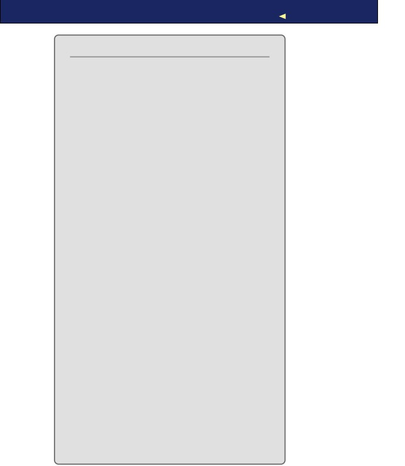
Download at Boykma.Com
GO INDEPENDENT
209
Curiosity Is a Strength (continued)
Whenever I get comfortable, I know it’s time to try
something new. After many years writing embedded
software in the aerospace industry, I was comfortable
(which for me is also associated with boredom) with C
and C++. About this time, web programming piqued
my curiosity, mostly because it was radically different
from embedded systems programming. Unfortunately,
the project at my day job didn’t have web access (it
was one of those super-secret projects), so instead I
spent my nights and weekends learning how to write
software for the Web. This hacking on the side eventu-
ally turned into an opportunity to work on a new project
using Java. I ended up building web-based Java appli-
cations for many more projects...and employers. My
curiosity about web development was the catalyst for
diversifying my skills, which ended up being a good
career move.
I learned Ruby and Rails on a whim. Ruby was a fun lan-
guage that made me think about programming differ-
ently. Rails did the same for web applications. I didn’t
have any clients at the time who were paying for Ruby
or Rails work, but that didn’t really matter. I was curious,
and I just couldn’t help myself. I took a few less billable
hours and spent that time digging into Ruby and Rails.
Little did I know that in early 2005 I’d get an opportunity
to build one of the first commercial Rails applications
and get invited by Dave Thomas to help out on his Rails
book. My curiosity about yet another new technology
started another successful arc in my career.
I’m curious about more than just technology; business
aspects are equally interesting to me. That led me to
venture out on my own as an independent consultant
and start a training company (The Pragmatic Studio).
My curiosity about running a small business gave me the
opportunity to learn a bunch of new skills: sales, market-
ing, customer support, and so on. Seeing the big picture
has helped me become a better programmer.
So, what are you really curious about? Try following your
interests for a little while and see what happens. You
might be surprised where you end up!
Mike Clark is an independent consultant/programmer.
Download at Boykma.Com
But I say to you that when you work you fulfill a part of earth’s
furthest dream, assigned to you when that dream was born, and in
keeping yourself with labour, you are in truth loving life, and to love
life through labour is to be intimate with life’s inmost secret.
Kahlil Gibran, The Prophet
HaveFun
If you’ve gotten to the point of being a software developer with the
luxury to actually think about which direction you want your career to
go in, congratulations! You can count yourself as very lucky. There are
many cultures in which getting to decide what you do for a living is a
great privilege which very few people enjoy. As a software developer,
you’re not likely worried about how to pay for a place to live or how
to buy food.
You could have chosen any number of career paths, but this one is
exciting. It’s creative. It requires deep thinking and rewards you with
a sense of being able to do something that most of the people you meet
each day can’t imagine being able to do. We may worry about pro-
gressing to the next level, making an impact, or gaining respect from
our co-workers or our peers in the industry, but if you really stop to
think about it, we’ve got it really good.
Software development is both challenging and rewarding. It’s creative
like an art-form, but (unlike art) it provides concrete, measurable value.
Software development is fun!
Ultimately, the most important thing I’ve learned over the journey that
my career in software development has been is that it’s not what you
do for a living or what you have that’s important. It’s how you choose to
accept these things. It’s internal. Satisfaction, like our career choices, is
something that should be sought after and decided upon with intention.
Download at Boykma.Com
Resources
[Bec00]
Kent Beck. Extreme Programming Explained: Embrace
Change. Addison-Wesley, Reading, MA, 2000.
[Cou96]
Douglas Coupland. Microserfs. Regan Books, New York,
1996.
[DL99]
Tom Demarco and Timothy Lister. Peopleware: Productive
Projects and Teams. Dorset House, New York, second edi-
tion, 1999.
[GHJV95]
Erich Gamma, Richard Helm, Ralph Johnson, and John
Vlissides. Design Patterns: Elements of Reusable Object-
Oriented Software. Addison-Wesley, Reading, MA, 1995.
[God03]
Seth Godin. Purple Cow: Transform Your Business by Being
Remarkable. Portfolio, 2003.
[Ham02]
Gary Hamel. Leading the Revolution: How to Thrive in Tur-
bulent Times by Making Innovation a Way of Life. 2002.
[Han99]
Thich Nhat Hanh. The Miracle of Mindfulness. Beacon
Press, 1999.
[HT00]
Andrew Hunt and David Thomas. The Pragmatic Program-
mer: From Journeyman to Master. Addison-Wesley, Reading,
MA, 2000.
[Pir00]
Robert M. Pirsig. Zen and the Art of Motorcycle Maintenance:
An Inquiry into Values. Perennial Classics, reprint edition
edition, 2000.
[Sil99]
Steven A. Silbiger. The Ten-Day MBA: A Step-By-step Guide
To Mastering The Skills Taught In America’s Top Business
Schools. Quill, 1999.
Download at Boykma.Com
ThePragmaticBookshelf
Available in paperback and DRM-free PDF, our titles are here to help you stay on top of
your game. The following are in print as of April 2009; be sure to check our website at pragprog.com
for newer titles.
Title
Year
ISBN
Pages
Advanced Rails Recipes: 84 New Ways to Build
2008
9780978739225
464
Stunning Rails Apps
Agile Retrospectives: Making Good Teams Great
2006
9780977616640
200
Agile Web Development with Rails: Second Edition
2006
9780977616633
719
Agile Web Development with Rails, Third Edition
2009
9781934356166
784
Augmented Reality: A Practical Guide
2008
9781934356036
328
Behind Closed Doors: Secrets of Great Management
2005
9780976694021
192
Best of Ruby Quiz
2006
9780976694076
304
Core Animation for Mac OS X and the iPhone: Creating
2008
9781934356104
200
Compelling Dynamic User Interfaces
Data Crunching: Solve Everyday Problems using Java,
2005
9780974514079
208
Python, and More
Deploying Rails Applications: A Step-by-Step Guide
2008
9780978739201
280
Design Accessible Web Sites: 36 Keys to Creating
2007
9781934356029
336
Content for All Audiences and Platforms
Desktop GIS: Mapping the Planet with Open Source
2008
9781934356067
368
Tools
Developing Facebook Platform Applications with Rails
2008
9781934356128
200
Enterprise Integration with Ruby
2006
9780976694069
360
Enterprise Recipes with Ruby and Rails
2008
9781934356234
416
Everyday Scripting with Ruby: for Teams, Testers, and
2007
9780977616619
320
You
FXRuby: Create Lean and Mean GUIs with Ruby
2008
9781934356074
240
From Java To Ruby: Things Every Manager Should
2006
9780976694090
160
Know
GIS for Web Developers: Adding Where to Your Web
2007
9780974514093
275
Applications
Google Maps API, V2: Adding Where to Your
2006
PDF-Only
83
Applications
Groovy Recipes: Greasing the Wheels of Java
2008
9780978739294
264
Hello, Android: Introducing Google’s Mobile
2008
9781934356173
200
Development Platform
Interface Oriented Design
2006
9780976694052
240
Learn to Program, 2nd Edition
2009
9781934356364
230
Continued on next page
Download at Boykma.Com
Title
Year
ISBN
Pages
Manage It! Your Guide to Modern Pragmatic Project
2007
9780978739249
360
Management
Mastering Dojo: JavaScript and Ajax Tools for Great
2008
9781934356111
568
Web Experiences
My Job Went to India: 52 Ways to Save Your Job
2005
9780976694014
208
No Fluff Just Stuff 2006 Anthology
2006
9780977616664
240
No Fluff Just Stuff 2007 Anthology
2007
9780978739287
320
Practices of an Agile Developer
2006
9780974514086
208
Pragmatic Project Automation: How to Build, Deploy,
2004
9780974514031
176
and Monitor Java Applications
Pragmatic Thinking and Learning: Refactor Your
2008
9781934356050
288
Wetware
Pragmatic Unit Testing in C# with NUnit
2007
9780977616671
176
Pragmatic Unit Testing in Java with JUnit
2003
9780974514017
160
Pragmatic Version Control Using Git
2008
9781934356159
200
Pragmatic Version Control using CVS
2003
9780974514000
176
Pragmatic Version Control using Subversion
2006
9780977616657
248
Programming Erlang: Software for a Concurrent World
2007
9781934356005
536
Programming Groovy: Dynamic Productivity for the
2008
9781934356098
320
Java Developer
Programming Ruby: The Pragmatic Programmers’
2004
9780974514055
864
Guide, Second Edition
Prototype and script.aculo.us: You Never Knew
2007
9781934356012
448
JavaScript Could Do This!
Rails Recipes
2006
9780977616602
350
Rails for .NET Developers
2008
9781934356203
300
Rails for Java Developers
2007
9780977616695
336
Rails for PHP Developers
2008
9781934356043
432
Rapid GUI Development with QtRuby
2005
PDF-Only
83
Release It! Design and Deploy Production-Ready
2007
9780978739218
368
Software
Scripted GUI Testing with Ruby
2008
9781934356180
192
Ship it! A Practical Guide to Successful Software Projects
2005
9780974514048
224
Stripes ...And Java Web Development Is Fun Again
2008
9781934356210
375
TextMate: Power Editing for the Mac
2007
9780978739232
208
The Definitive ANTLR Reference: Building
2007
9780978739256
384
Domain-Specific Languages
The Passionate Programmer: Creating a Remarkable
2009
9781934356340
200
Career in Software Development
ThoughtWorks Anthology
2008
9781934356142
240
Ubuntu Kung Fu: Tips, Tricks, Hints, and Hacks
2008
9781934356227
400
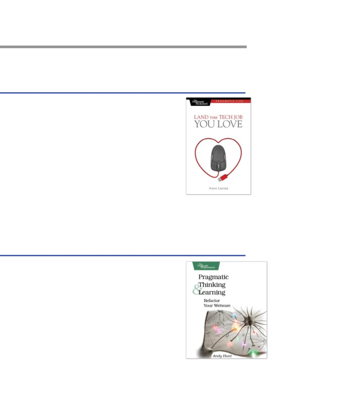
Download at Boykma.Com
MoreCareerHelp...
LandtheTechJobYouLove
You’ve got the technical chops—the skills to get a great
job doing what you love. Now it’s time to get down to
the business of planning your job search, focusing your
time and attention on the job leads that matter, and
interviewing to wow your boss-to-be.
You’ll learn how to find the job you want that fits you
and your employer. You’ll uncover the hidden jobs that
never make it into the classifieds or Monster. You’ll start
making and maintaining the connections that will drive
your future career moves
You’ll land the tech job you love.
Land the Tech Job You Love
Andy Lester
(225 pages) ISBN: 978-1934356-26-5. $23.95
PragmaticThinkingandLearning
Software development happens in your head. Not in an
editor, IDE, or design tool. In this book by Pragmatic
Programmer Andy Hunt, you’ll learn how our brains are
wired, and how to take advantage of your brain’s
architecture. You’ll master new tricks and tips to learn
more, faster, and retain more of what you learn.
• Use the Dreyfus Model of Skill Acquisition to become
more expert
• Leverage the architecture of the brain to
strengthen different thinking modes
• Avoid common
“known bugs” in your mind
• Learn more deliberately
and more effectively
• Manage knowledge more
efficiently
Pragmatic Thinking and Learning:
Refactor your Wetware
Andy Hunt
(288 pages) ISBN: 978-1-9343560-5-0. $34.95
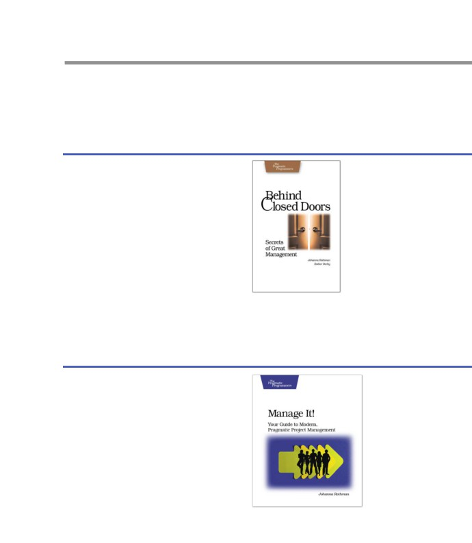
Download at Boykma.Com
MoveintoManagement...
BehindClosedDoors
You can learn to be a better manager—even a great
manager—with this guide. You’ll find powerful tips
covering:
• Delegating effectively
• Using feedback and
goal-setting
• Developing influence
• Handling
one-on-one meetings
• Coaching and mentoring
• Deciding what work to do-and what not to do
• ...and more!
Behind Closed Doors: Secrets of Great Management
Johanna Rothman and Esther Derby
(192 pages) ISBN: 0-9766940-2-6. $24.95
ManageIt!
Manage It! is an award-winning, risk-based guide to
making good decisions about how to plan and guide
your projects. Author Johanna Rothman shows you how
to beg, borrow, and steal from the best methodologies to
fit your particular project. You’ll find what works best for
you.
• Learn all about different project lifecycles
• See how
to organize a project
• Compare sample project
dashboards
• See how to staff a project
• Know when
you’re done—and what that means.
Manage It! Your Guide to Modern, Pragmatic Project
Management
Johanna Rothman
(360 pages) ISBN: 0-9787392-4-8. $34.95
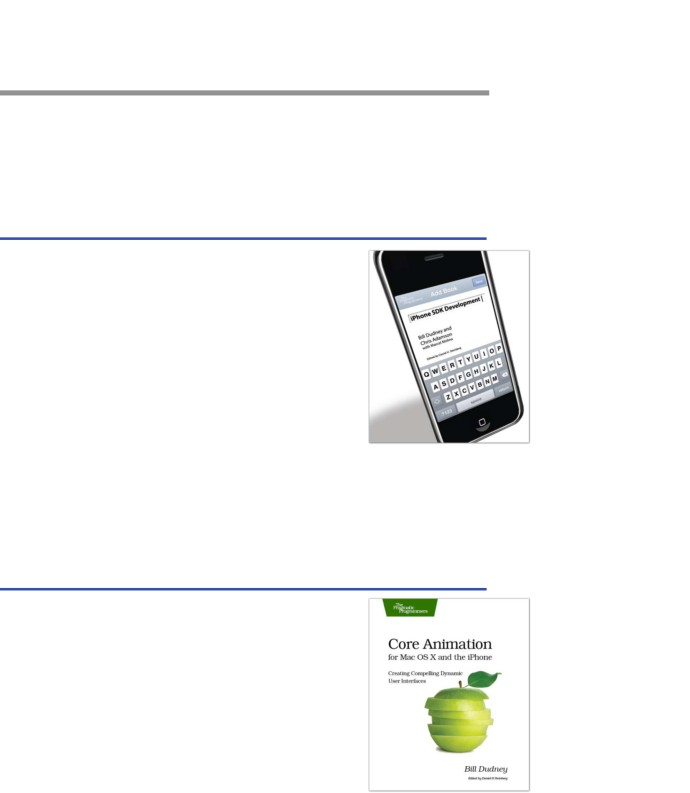
Download at Boykma.Com
iPhoneandMacOSX...
iPhoneSDKDevelopment
Jump into application development for today’s most
remarkable mobile communications platform, the
Pragmatic way. This Pragmatic guide takes you through
the tools and APIs, the same ones Apple uses for its
applications, that you can use to create your own
software for the iPhone and iPod touch. Packed with
useful examples, this book will give you both the
big-picture concepts and the everyday “gotcha” details
that developers need to make the most of the beauty and
power of the iPhone OS platform.
iPhone SDK Development
Bill Dudney, Chris Adamson, Marcel Molina
(430 pages) ISBN: 978-1-9343562-5-8. $38.95
CoreAnimationforOSX/iPhone
Have you seen Apple’s Front Row application and Cover
Flow effects? Then you’ve seen Core Animation at work.
It’s about making applications that give strong visual
feedback through movement and morphing, rather than
repainting panels. This comprehensive guide will get
you up to speed quickly and take you into the depths of
this new technology.
Core Animation for Mac OS X and the iPhone: Creating
Compelling Dynamic User Interfaces
Bill Dudney
(220 pages) ISBN: 978-1-9343561-0-4. $34.95
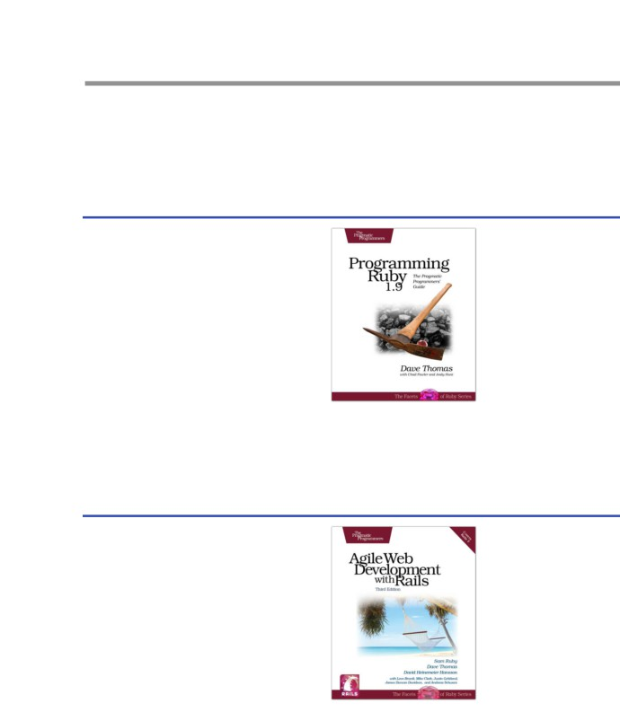
Download at Boykma.Com
RubyandRails...
ProgrammingRuby1.9(ThePickaxefor1.9)
The Pickaxe book, named for the tool on the cover, is the
definitive reference to this highly-regarded language.
• Up-to-date and expanded for Ruby version 1.9
• Complete documentation of all the built-in classes,
modules, and methods
• Complete descriptions of all
standard libraries
• Learn more about Ruby’s web
tools, unit testing, and programming philosophy
Programming Ruby 1.9: The Pragmatic Programmers’
Guide
Dave Thomas with Chad Fowler and Andy Hunt
(992 pages) ISBN: 978-1-9343560-8-1. $49.95
AgileWebDevelopmentwithRails
Rails is a full-stack, open-source web framework, with
integrated support for unit, functional, and integration
testing. It enforces good design principles, consistency of
code across your team (and across your organization),
and proper release management. This is the newly
updated Third Edition, which goes beyond the award
winning previous editions with new material covering
the latest advances in Rails 2.0.
Agile Web Development with Rails: Third Edition
Sam Ruby, Dave Thomas, and David Heinemeier
Hansson, et al.
(784 pages) ISBN: 978-1-9343561-6-6. $43.95
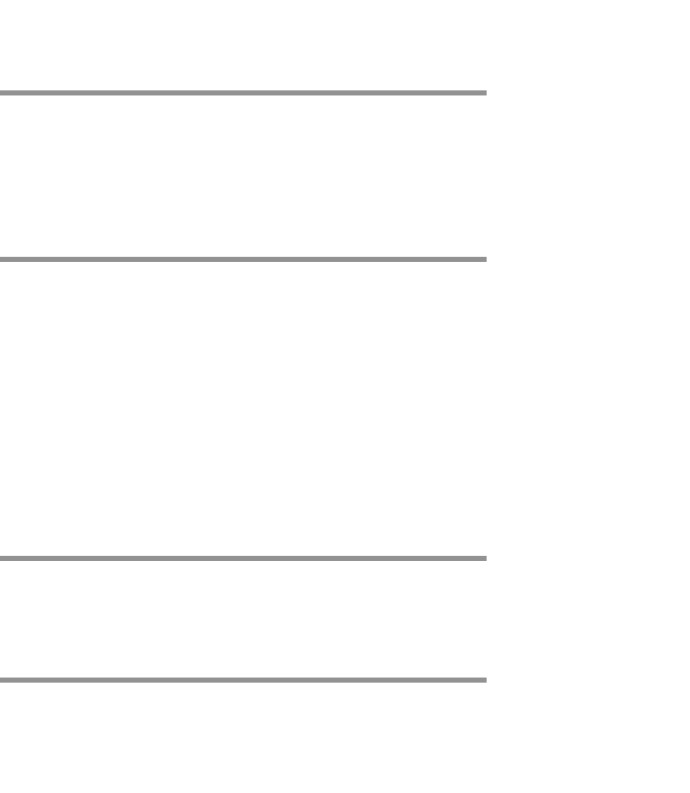
Download at Boykma.Com
ThePragmaticBookshelf
The Pragmatic Bookshelf features books written by developers for developers. The titles
continue the well-known Pragmatic Programmer style and continue to garner awards
and rave reviews. As development gets more and more difficult, the Pragmatic Pro-
grammers will be there with more titles and products to help you stay on top of your
game.
VisitUsOnline
The Passionate Programmer’s Homepage
Source code from this book, errata, and other resources. Come give us feedback, too!
Register for Updates
Be notified when updates and new books become available.
Join the Community
Read our weblogs, join our online discussions, participate in our mailing list, interact
with our wiki, and benefit from the experience of other Pragmatic Programmers.
New and Noteworthy
Check out the latest pragmatic developments, new titles and other offerings.
BuytheBook
If you liked this eBook, perhaps you’d like to have a paper copy of the book. It’s available
ContactUs
Online Orders:
Customer Service:
support pragprog. om
Non-English Versions: translations pragprog. om
Pragmatic Teaching:
a ademi pragprog. om
Author Proposals:
proposals pragprog. om
Contact us:
1-800-699-PROG (+1 919 847 3884)